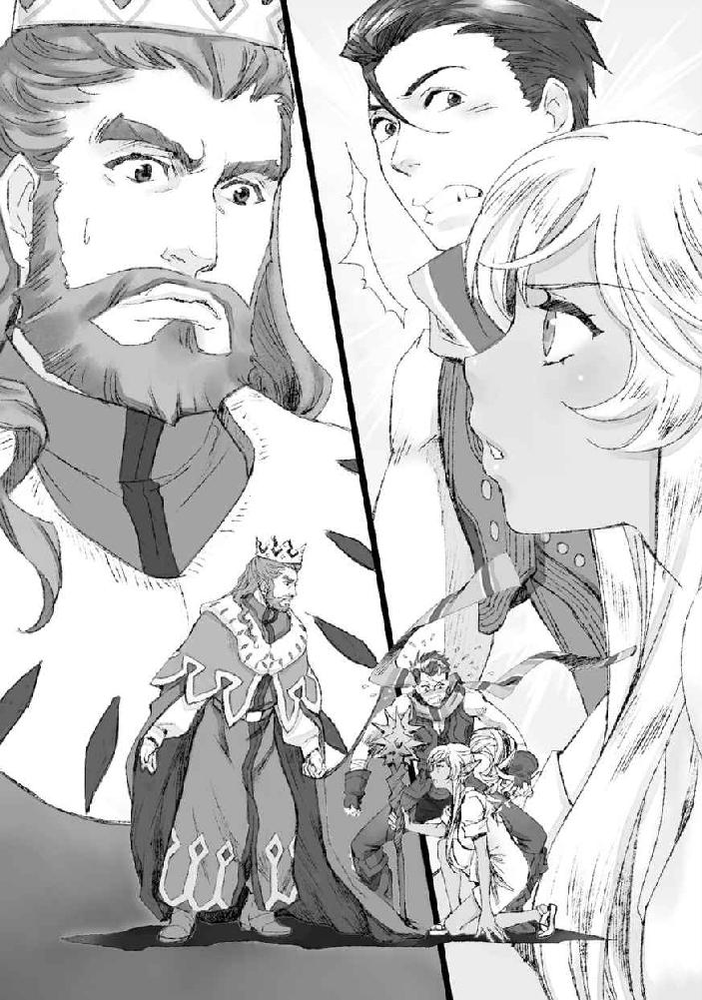

| おっさんがびじょ。 3 わるものの意地 (アース・スターノベル) | |
| 山田 まる | |
| (2015) | |
一章 わるものの意地
「く、くたびれた」
「......同感だ」
そんなことを呟きながら、俺とイサトさんはくたびれきった様子でよろよろと古びた教会の信徒席へと腰を下ろした。
ここはセントラリアの片隅にある、古びた教会だ。
というか、俺とイサトさんにとってはゲーム内で教会と言われればここになるのだが──...、どうやらここはもうセントラリアの人々に使われなくなって久しいらしい。なんでも街の中心地に新しくもっと広くて綺麗な大聖堂が出来た結果、信徒のほとんどがそちらに移り、今ではこの教会を使うのは獣人たちだけなのだという。俺たちを見下ろす女神像も、俺たちがゲームの中でよく見知った教会と何も変わらないように見えるのにと思うとなんとも言えない気持ちにもなる。
が、おかげでこうして避難場所として活用出来るのだと思えばありがたい。
黒薔薇の庭園での戦闘を終えた後、何よりも熱いシャワーと清潔なお布団を欲していた俺とイサトさんであったわけなのだが。
さすがに飛空艇を墜とした時と違って敵を倒してはいお終い、というわけにはいかなかった。
俺の『家』に避難させた獣人の狩りチームをセントラリアまで連れ帰って出してやる必要があったし、ライザとレティシアが人質に取られていた以上、セントラリアに残してきた獣人たちの安否も早急に確認する必要があった。
なんやかんやと駆けずりまわって、結局俺たちがこうして腰を落ち着けることが出来た今、窓の外ではうっすらと夜が明け始めている。
隣のイサトさんは、眠たげにすでに半眼だ。
ぼんやりと後頭部まで背もたれに預けるように喉をそらして、美しいレリーフの彫り込まれた天井を眺めている。
なんとなく、俺の視線も同様に天井へと向かった。
セントラリアに残してきた獣人たちの行方を捜すのを手伝ってくれたのは、意外なことに狩りチームのオマケとして助けただけだった人間の商人二人だった。
マルクト・ギルロイの狂気を実際にその眼にしただけあって、見限るのも早かった、というか。いや、そこは流石商人、立ち回りが上手い、というべきところなのだろう。
彼らは街に戻るとすぐにギルロイ商会のメンバーや騎士の詰所に連絡し、獣人たちの捜索に当たってくれたのだ。
それは間違いなく、マルクト・ギルロイの暴走の責任を彼個人に背負わせるための保身でもあったのだろう。けれど、そのおかげで随分と助かったのは事実だ。土地勘のない俺たちでは、マルクト・ギルロイが獣人を捕らえておけるような場所に心あたりが全くなかった。
捜索の結果、セントラリアに残っていた獣人の家族たちはマルクト・ギルロイの屋敷の地下に囚われているところを発見された。商会の他の人間には、獣人たちに逃亡の危険性があるため身柄を拘束する、と説明していたらしい。
埃っぽく、淀んだ空気の溜まった地下はただただ暗く、その空間の半分以上を占める檻の中に、獣人たちは閉じ込められていた。そして、部屋の片隅にはこれまで犠牲になった獣人たちの持ち物だと思われるアクセサリーや装備品、服の一部などが、これまた無造作に放り出されていた。
最初は半信半疑だった騎士団の連中も、その光景にようやくただ事ではないことを把握したらしく、この辺りから急に騒がしくなった。明日になれば、もっと大騒ぎになることだろう。
聞いてみたところによると、マルクト・ギルロイは独りになって以来、誰もこの屋敷に入れておらず、商会の人間も、騎士団の連中も、誰もこんな地下があることすら知らなかったらしい。
もし、マルクト・ギルロイが何をしているかを知っていたら止めてたか？
そう喉まで出かかった質問は、結局口にすることは出来なかった。
どう答えるのかなんてわかりきっていたし、もしもそれが噓だと気づいてしまったらと思うとどうにも薄ら寒いからだ。
檻の中から救出した獣人たちは、皆疲れきってはいたものの、怪我もなく無事だった。おそらく、マルクト・ギルロイは一番抵抗したライザとレティシアを無力化し、他を捕まえた後はすぐに薔薇園の方に向かったのだろう。
少し視線を下ろすと、教会の前方、本来ならありがたいお話を神父がするのであろうスペースで疲れたように寄り添いあう獣人の家族が見える。先ほどまでは、無事な帰還、誰一人欠けることなく再会出来たことを女神に感謝して、と盃を傾けるような一幕もくり広げられていたのだが、さすがに疲れ果てたものらしい。
そんな一行の中に、エリサや、目を覚ましたライザも交ざっているのを見て、ふっと疲れた顔の口元にも笑みが滲んだ。
何気なく隣を見れば、イサトさんも似たような表情を浮かべている。
「まあ......良かったのか、な」
「............そう、だな」
ゆっくりと息を吐く。
まだまだ気がかりなことは残っているが、今はもういいだろう。
俺たちは十分よくやったと思う。
後のことは、一回寝て目が覚めた後の俺たちに任せてしまおう。
少し休むつもりでゆっくりと目を閉じかけたところで、ふと人の気配を感じた。
「なあ、アキラ、イサト」
「ん？」
「どうした？」
いつの間にか目の前にやってきていたのはエリサだった。
エリサは少し言いよどむようにしながら、口を開く。
「その......、オマエら、もう宿に戻る、のか？」
「ああ、うん。少し休んだらそうするつもり、だけど」
今はもう動きたくない。
宿に戻っても風呂に入るだけの気力があるかどうか。
「........................そう、かよ」
「エリサ？」
エリサはなんだか何か言いたそうな顔をしている。
喉元までこみあげた言葉を、懸命にこらえている、ような。
「......秋良青年」
横から、まるで助け舟を出すかのように口を挟んだのはイサトさんだった。
「どうした？」
「私は、今ものすごく眠い」
「うん？」
「なので、もしエリサたちが構わないなら、今日はもうこの辺で適当に寝かせてもらう、というのはどうだろう」
「っ」
イサトさんの言葉に、ぱあ、とエリサの表情が明るくなる。
なるほど。
そこまで見て、ようやく俺にもわかった。
エリサは、俺たちに帰ってほしくなかったのだ。
俺はなんでもないような顔で、イサトさんに話を合わせる。
「そうだな。俺ももう宿屋まで戻るのが面倒になってきた」
「わかった、それならオマエらが使えるブランケットとかないか聞いてくる！」
エリサはそれだけ言うと、すぐに飛んでいってしまった。
「......ありがと、イサトさん」
きっと、俺だけなら「何か言いたそうにしてる」ところまではわかっても、その気持ちは上手に汲み取ってやることは出来なかった気がする。
「きっと、まだ安心出来ないんだろうな」
「そう、だな」
諸悪の根源であったマルクト・ギルロイはもういないとはいえ、ライザとレティシアが街中で襲われ、人質にされた記憶は新し過ぎる。また何かあったら、と不安に思うエリサの気持ちも、言われてみればわかる気がした。
「アキラ、イサト、これ、使ってくれ」
「ありがと、助かる」
軽く息を弾ませ、エリサがどこからか持ってきてくれたブランケットを受け取ってそのうちの一つをイサトさんへとパスする。この季節、被るものがなくても風邪をひくようなことはなさそうだが、せっかくの気遣いだ。
「それじゃあ、俺たちも寝るか」
「そうしよう。おやすみ、エリサ」
「おやすみ」
挨拶を交わして、エリサが家族の元に戻るのを見送った。
それからイサトさんが欠伸混じりに俺の一つ前の信徒席へと移るのを見届けて、俺もごろん、と硬い椅子の上に横になる。寝心地が良いとは決して言えないが、宿屋の長椅子と違って俺が横になってもまだ余裕があるのがありがたい。
ちら、と前の席に視線を向けてみるが、イサトさんももう横になったのか背もたれに隠れて姿は見えない。
「............」
ほう、と息を吐く。
本当に、いろんなことのあった夜だった。
今後のことを話しあってでもいるのか、遠く微かに聞こえる獣人たちの声を聞きながら、俺はあっという間に眠りに落ちて──
ふ、と身近で人の気配が動くのを察知して意識が浮上した。
一人の部屋で寝ているならともかく、前提として他にも人がいるような場所で寝ているのにそんなことで目が覚めるのは珍しい。戦闘の名残を引きずって、未だ神経が昂ぶっているのだろうか。
そういえば部活でも大きな試合の後はなかなか寝付けなかったっけか、なんてことを思い出した。
うっすらと目を開けて周囲を見渡してみる。
辺りはまだ薄暗く、夜は明けきっていない。
そんな中を、そろりと聖堂の出口に向かって歩いていく銀色の後ろ姿を見た。
イサト、さん......？
風にでもあたりに行くのだろうか。
きっとすぐに戻ってくるだろう、と見当をつけて、俺は再び目を閉じる。
しばらくうつらうつらと微睡んで、次に意識が浮上した時にもイサトさんが戻ってきた気配はなかった。
俺が気づかないうちに戻ってきたのか。
それともまさか外でまた何か厄介ごとにでも巻き込まれているのか。
「......ったく」
未だ疲れが抜けず、重い手足を引きずるように身体を起こした。
俺は俺で安眠を貪りたいところではあるのだが、放っておけないのがイサトさんなのである。そっと前の席を覗いてみるものの、やはりそこにイサトさんの姿はなかった。戻ってきていないのだ。
俺たちが寝入った頃にはまだ話をしている獣人たちも多かったが、今はもうすっかり静かになっていた。耳を澄ますと、教会のあちこちから微かな寝息が聞こえてくる。彼らを起こしてしまわないようにそっと足音を殺して、俺は静かに教会の出口を抜ける。
季節で言うと初夏、といった頃だろうか。
日中は日差しが暖かく、過ごしやすいではあるのだが、明け方は少し冷える。
ひやりとした外の空気に俺は小さく身体を震わせた。
白々とした明かりに包まれた町並みはまだ静かで、少し離れたところから朝市の支度をしているのであろう物音が聞こえてくる。
さて、イサトさんはどこだと周囲を見渡して......俺は小さく息を吞んだ。
イサトさんは、教会の入口へと続く階段の隅っこに腰掛けて、ぼんやりと街を眺めているようだった。
俺が息を吞んだのは、その背中が随分と小さく見えてしまったからだった。
赤ずきんの衣装のままで、鮮やかな赤を纏っているはずなのにイサトさんの背中はどこか存在感が希薄で、そのまま見失ってしまいそうなほどに小さく見えた。
なんだか、そこにいるのに誰にも気づいてもらえない迷子のようだ。
「............、」
声をかけようと思ったのに上手く言葉が出てこない。
だから、俺は結局何も言わないままイサトさんの隣に腰を下ろした。
ひやりと朝露に湿ったイサトさんの服が腕を掠める。
「風邪、引くぞ」
「......秋良」
どこかぼんやりとした調子でイサトさんが俺の名前を呼んで、少しだけ顔をあげた。イサトさんらしくない、迂闊な仕草だな、と思った。普段のイサトさんならば、きっとさりげなく俺から顔を隠すように顔を伏せる。この人は格好つけで、弱みを人に見せるのを良しとしない人だから。
───こっそり泣いていたなら特に、だ。
イサトさんの目元は濡れていて、頰にも涙が零れた痕がまだ残っていた。
ぼんやりと俺を見上げた双眸も、どこか熱っぽく潤んでいる。
なるべく自然にしようと思っていたのに、やっぱり俺の動揺はイサトさんにはすぐに伝わったようだった。
「あー......」
失敗した、というようにイサトさんが呻く。
自分がどんな顔を俺に見せてしまったのかに気付いたらしい。
どう取り繕うか迷うような沈黙が流れる。
イサトさんが何を言ったとしても、その言い訳を鵜吞みにして頷くぐらいの紳士っぷりは見せようと思っていたのだが、結局イサトさんは諦めたようにかくりと肩を落とした。
「私は今、ものすごく恥ずかしい」
「俺は今、たぶんものすごくレアなもの見たなーと思ってる」
「今すぐ君の記憶を抹消したい」
いつもの調子で呟かれた言葉に合わせて軽口を返せば、ごん、と若干強めの頭突きを肩口に喰らった。そのままイサトさんはぐんにゃりと脱力して俺に体重をかけてくる。甘えるような仕草ではあるが油断してはならない。これはイサトさんの作戦である。いわゆるボクシングでいうクリンチだ。近さ故に攻撃されずに済む。
「寝ないのか、君。疲れてるだろ」
案の定、しれりといつもの調子で気遣われた。
イサトさんの顔を見ていなければ、もしかしたら俺はイサトさんの声が少し鼻声なのに気づかなかったかもしれず、そうしたらおとなしく「寝直してくる」なんて言っていたかもしれない。
けれど、今となっては手遅れだ。
「イサトさんは？」
「私は──...」
逆に聞き返すと、イサトさんは言葉に迷うようにほんの少しだけ間を置いた。
「......ちょっと、いろいろ考えたいことがあって」
そう言ったイサトさんが、わずかに目を伏せたようだった。
さら、と揺れた銀色が腕を掠めてくすぐったい。
その視線の先を追って、俺はイサトさんが手にした一冊の本に気付いた。
革張りの装丁が施された、手帳サイズの本だ。
ぱっと見た感じ、題名らしきものは描かれていない。
日記か何かだろうか。
「イサトさん、それは？」
「──なんでもない」
俺の視線から隠すように、膝を抱えるようにして座っていたイサトさんはその本を胸と膝との間に押し込んだ。
「............」
「............」
こほん。
「イサトさん」
「なんだ」
「それはそこに腕を突っ込んで良い、という前振りだったりする？」
「悲鳴をあげるぞ」
「......む」
ずるい。
とんでもなくずるい隠し場所だと思う。
どこにあるのかわかっているし、取ろうと思えば強引に取り上げることだって出来る位置なのに俺には手出しすることが出来ない。
俺は溜息をつきつつ、片膝に肘を乗せて頭を支え、イサトさんの顔を覗きこむように距離をとった。
「............」
じーっと見つめていると、イサトさんが警戒するような上目遣いで俺を見る。
「なんだ」
「別に？ 俺もちょっと考え事」
「悩んでいるのか、青少年」
からかうようでありつつ、どこか気遣わしげなイサトさんの言葉にふっと口元に笑みが浮かぶ。
悩んでるのは俺ではなく、イサトさんの方な癖。
「夜這いに匹敵する口の割らせ方についてを、考えてる」
「......っ！」
かあっっとイサトさんの目元が一気に赤く染まった。
恥ずかしさを誤魔化すように小突かれて、思わず笑いが声に出る。
「笑うな、このやろう」
「いや、からかう側ってのはいいな、と思って」
くっくっく、と笑いに肩を震わせつつ、俺は一応それを隠すように手で口元を覆った。まあ、バレバレなわけだが。
いつも俺がからかわれるだけだと思っていたら大間違いだ。
たまには逆襲だってする。
それに。
「それと同じぐらい、たまには支える側でもいいなって思うんだけどどうよ」
「............」
む、とイサトさんの唇がへの字になった。
対照的に、眉がへにゃりと八の字になる。
泣きそうなところを、ぎりぎりで堪えているような。
喉元までこみ上げた感情を、一生懸命抑えつけているような顔だった。
ごん、と再び腕に頭突きを喰らう。
「......君にだけは、言いたくないのに」
「ひでえ。俺の弱みは強引に聞きだした癖に」
「酷いのは君の方だ。こんな仕返し、酷すぎる」
ぐりぐりぐり。
額を押し付ける攻撃が続く。
それから、イサトさんは深々と溜息をついた。
熱のこもった、熱い吐息。
まるで言葉に出来ない想いまで溶けていそうなほどに熱い。
「なあ。何考えてんの」
「..................言いたくない」
「なんで」
「......君まで、迷わせてしまいそうだから」
微かに震えた小さな声が、それがイサトさんの本心なのだと告げていた。
そして、なんとなく。
俺はイサトさんが何を一人で抱え込んでいるのかがわかったような気がした。
ふっと小さく息を吐く。
「イサトさん、それ、マルクト・ギルロイのだろ」
「......っ、なんで」
顔を隠したがっていた癖に、思わずといったようにイサトさんが顔を上げる。
驚いたように瞠られた金色の双眸から、その拍子にぽろりと雫が零れ落ちた。
つっと頰を滑っていく涙を、指先でくいと拭う。
「イサトさんが俺に見せたくなくて、俺が見たら迷うかもしれないようなもので、イサトさんは俺を迷わせたくないんだろ」
それなら、それは。
俺たちが戦い、最終的に助けられなかった男が遺したものに決まっている。
それに、イサトさん自身が言っていたことだ。
『私は結構海外ドラマの刑事ものが好きでよく見るんだけど......、犯罪者から市民を護るためにいざというときに躊躇うな、と彼らは訓練されているのに、それでも現場で犯人を射殺することに躊躇ったり、する』
『それだけじゃなくて、犯人を射殺してしまった後にはカウンセリングにかかったりも、する』
『ドラマは創作で、本当の話ではないかもしれないけれど......きっと、そう間違ってるってわけではないと思うんだ』
『人の命を奪う、っていう決断や、行動の生むストレスっていうのはさ。きっとあるんじゃないかって私は思ってる』
あの日の夜、イサトさんが話してくれた言葉を思い出す。
だからイサトさんは俺にこの異世界でも人を殺して欲しくないと思った、とそう話してくれた。
俺に、傷をつけたくないから──、と。
それなら今、イサトさんが泣いているのは、その傷の痛みのせいではないのだろうか。この人は、俺なんかよりよっぽど優しい人だから。
「イサトさんはさ、俺のこと心配してんだろ。俺が気にするんじゃないかって」
「............」
返事がないこと自体が、肯定だった。
この世界では、お互いの主張のために命を賭けなければならないことがある。
俺たちが圧倒的な強者であり、手加減して勝つことが出来る状況であるのならば、勝者の余裕として殺さずに主張を通すことも出来るだろう。
けれど、先ほどのような状況に追い込まれれば、相手の命まで守る余裕はどうしたってなくなってしまう。
きっとそんな状況は、この世界にいる限り今後も避けられない。
イサトさんはその状態に追い込まれた際に、俺が迷うことを恐れたのだ。
だから、傷を打ち明けられなかった。
......なんだか、少し悔しいような、もどかしいような想いが胸を渦巻いた。
信じてほしい、と思う。
俺はイサトさんの剣としての役割はいつだってちゃんと果たす。
そこで揺らいだりはしない。
そう言おうと俺は口を開きかけ......、それより先にイサトさんがぽつりと呟いた言葉が耳を打った。
「......ごめん」
「へ」
突然の謝罪に、俺は目を丸くする。
「なんでイサトさんが謝るんだ？」
「だって、酷い話じゃないか」
「酷いって何が」
謝る、ということは俺がその酷いことをされた対象であるような気がするのだが、俺自身にはそんな覚えが全くない。
イサトさんは、罪悪感に震える声で、ぽつぽつと言葉を続けた。
「君は、いつも私を護るために戦ってくれてるのに。それなのに、私が戦うことに迷うなんて、君に対して、すごく、失礼だ」
「───」
思わず言葉を失った。
正直、その発想はなかった。
ああ、でも。
俺が迷うような性質であれば、そう思ったのかもしれない。
前衛を任されている以上、敵対する相手と直接刃を交わすのはどうしたって俺の方が多くなる。俺の振るう大剣が敵を薙ぎ、傷つけ、もしかしたらその命を奪うかもしれないのだ。
俺がそのことに罪悪感を抱くような人間であったなら、イサトさんの迷いはプレッシャーになったかもしれない。
後衛であるイサトさんに対して、厭な仕事を俺に押し付けておきながら自分だけ綺麗ごとを言ってやがるというような感情を抱いたかもしれない。
が、幸いながらというか残念ながら、というか。
俺はそういった迷いとは無縁の人間だ。
殺される前に逃げることも出来たのにそうしなかった。
引き返すチャンスは何度もあったはずなのにそうしなかった。
それは相手が自分の命と引き換えにしてでも俺たちを殺したいと思っている、という決意表明のようなものだ。
それならばその殺意に応えた結果、俺が相手を殺してしまったとしても。
それはもう相手が望み、選んだ末路なのだから仕方ないとしか思えないのだ。
俺がそんなことを考えている間にも、イサトさんは懺悔のように言葉を続ける。
「それに......、君まで迷わせてしまったせいで、もし......、君が怪我をするようなことがあったら......っ」
イサトさんの声が、身体が、小さく震えていた。
その姿に、薔薇園でのことを思い出す。
イサトさんの放った攻撃魔法を自らの身体でブロックする、なんて無茶をやらかした時、イサトさんは同じような顔をしていた。
「あー......」
いろいろと、わかってしまった。
俺があの時薔薇園でイサトさんを失うかもしれないと思った時に感じたのと同じだけの恐怖を、きっと俺はイサトさんにも味わわせてしまったのだ。
しかもそれが自分の手によるものともなれば、イサトさんのショックはどれほどだっただろう。
俺が、イサトさんを殺しかける。
俺の振るった刃が、イサトさんの柔らかな肌に吸い込まれるようにめりこんで、
「......ッ」
やばい。
ものすごく怖い。
もし一度でもそんなことをやらかしてしまったら、きっと二度目は耐えられない。だからだ。だからこそイサトさんは一人で抱え込んでいたのだ。
敵対する相手の命を奪ってしまうことへの躊躇いや戸惑い。
けれど、その迷いから仲間を失うことへの恐怖。
そういった感情になんとか整理をつけようと、一人座りこんでいた。
俺はおそるおそる腕を持ち上げて、そっとイサトさんの背中に触れた。
華奢で、細い背中だ。
ちょっと力を入れ過ぎたら、へしゃげてしまいそうな気がする。
それなのに、イサトさんはいつだって踏ん張ってこれまで俺を支えてくれた。
「イサトさん」
「............」
イサトさんが、涙で濡れた瞳で俺を見上げる。
不安げに揺れる金色を、まっすぐに見つめて言い切った。
「大丈夫、だから」
ぽんぽん。
宥めるように緩く、その背を叩く。
俺が不安を感じた時、いつもイサトさんがしてくれたのを真似るように。
そして願わくば。
俺の腕や背に触れたイサトさんの体温が俺の不安を追いやってくれたように、少しでもイサトさんが安心出来たなら良いと思う。
「前にさ。ちょっと話したと思うけど」
「......ぅん」
「俺は、迷わない。っていうか、迷えない」
敵と、味方。
その区別は俺の中ではあんまりにも明確に線引きされすぎる。
咄嗟の状況で、俺の天秤は残酷なまでにはっきりと優先順位を叩き出す。
マルクト・ギルロイの最期に思うところはある。
あの男を哀れに思わないこともない。
だが、それは全てあの男自身の選択だ。
あの男は数々のチャンスがあったにも拘らず、あの最期を自ら選んで、迎えたのだ。
だから何度あの戦いを繰り返したとしても、俺は迷わずに剣を抜き、あの男を迎え撃つだろう。
「だから、まあ」
ぽん、とイサトさんの背を緩く叩いた。
「俺が迷えない分、イサトさんは迷ってもいいんじゃないか」
二人して敵対した相手は全部ぶっ殺す、と殲滅モードにならなくたって良いと思うのである。
「......でも、そのせいで、君を危険に晒したら」
「イサトさん」
名を呼んだ俺の声に応えるように、イサトさんが顔をあげる。
俺はそんなイサトさんを真っ直ぐに見つめて、ふっと口を開いた。
「俺は、イサトさんを信じてるよ」
「............、」
俺の言葉に、はく、とイサトさんが息を吞む。
そして、そのまま脱力するように、ぽす、と俺の胸元に額を押し付けた。
はー......と熱っぽい吐息を深々と吐き出しているのを感じる。
普段飄々としているイサトさんのどこにそんな熱を秘めていたのか、なんて思ってしまった。
「......あきらせいねん」
「はい」
「それは仕返しだろうか」
「ええ、まあ」
しれりと応えつつ、つい口元が緩みそうになる。
いつかの俺の気恥ずかしさだったり。
それと同時に、丸ごと受け入れてもらえたことに対する安心感だったり。
そういうのをイサトさんも味わえば良いのである。
「実際さ」
「ぅん？」
「今回は逆だったけど、イサトさんはライザやレティシアを助けるために無茶をしたことを後悔してるか？」
「まさか」
返事は即答だった。
俺としてはあんな無茶は二度とやって欲しくないし、俺の心臓が持たないと思わないでもないのだが......まあ、お互い様だ。
もしあそこで俺が剣を止めずに、中に取り込まれた二人ごとあのモンスターを斬り捨てていたのなら、話はもっと簡単だった。俺もイサトさんも痛い目なんか見ることなく、余裕で戦闘を終わらせることが出来ていただろう。
それでも、俺はイサトさんの攻撃を受けることを選んだし。
イサトさんは人質を助けるために自ら敵に取り込まれる作戦を選んだ。
それはある意味で、イサトさんが言うように「俺が攻撃を躊躇ったことで招いた危険」だ。
でも、俺はそれで間違ってなかったと思っている。
そして、イサトさんもその判断を後悔していないのならば、俺たちはこのままで良いんじゃないだろうか。
「......イサトさんは少しは反省すべきだとは思うけども」
「きこえない」
しらばっくれられた。
コノヤロウ。
つんつん、と背中を撫でていた手でイサトさんの髪を軽く引っ張ってやる。
ふ、っと胸元でイサトさんの吐息が笑みに緩むのが聞こえた。
「......安心したら眠くなってきた」
「俺も眠い」
ゆっくりとイサトさんが顔を起こす。
泣いたせいか、濡れた目元が赤く染まっている。
長い睫毛の先に溜まった雫が朝日を弾いてきらりと光る様に思わず目を奪われていると、ぐいと掌底気味に頰に掌を押し当てられ無理矢理顔をそらされた。
「見るな、今不細工な顔してるから」
「......そんなことないと思うけど」
「いたたまれない」
ふす、とイサトさんが息を吐く。
立ちあがって、イサトさんはぐんと腕を伸ばして大きく伸びをした。
それから俺に向かって手を差し出した。
「寝よう」
「もう朝だけどな」
すっかり辺りは明るくなっている。
イサトさんの手をとり、ぐっと軽く引きつつ反動をつけて立ち上がる。
出てきた時と違って、あちこちから朝の支度をする賑やかな物音や声が響き始めていた。
「秋良」
「ん？」
「──ありがとう」
「............」
朝日を背に、イサトさんが照れくさそうにはにかみながら礼を言う。
目元を赤く染め、頰にはまだ涙の痕も残っているのに、それがなんだか不思議なほどに綺麗で、眩しくて、謎の気恥ずかしさに襲われて俺はそそくさと目をそらしてしまった。
ああくそ、勿体ない。
ここでこそ、「いいってことよ」なんてイサトさんの男前なセリフをそのまま返してやろうと思っていたのに。
「ええと、あと、それと」
「なに？」
「先に言っておくけれども」
「うん」
嫌な予感がした。
ちょっとだけ身構える。
「たぶん」
「たぶん？」
「私この後寝込む」
「なんで!?」
「いや、知恵熱が」
知恵熱ってなんだ。
あれ子供が出すもんじゃないのか。
「久しぶりに脳みそ煮詰まるほど悩んだせいで、熱が出る気がする」
「まじか」
「まじだ」
確かに顔は赤いし、体温高いようにも感じていたわけだが。
泣いているせいだけじゃなかったのか。
「というわけで──...、言いだしっぺなのに申し訳ないが、私は先に宿の方に戻っていてもいいか。ここで寝込んでも邪魔になるだけだろうし」
「わかった。俺はエリサが起きるのを待って、一声かけてからそっちに戻るよ」
「了解、助かる」
イサトさんはゆらゆらと揺れるような足取りで宿に向かって歩き出す。その背を見ていると、なんだか途中で行き倒れそうで不安になった。
「イサトさん」
呼びかけつつ、小走りでその背に追いつく。
「ん？ どうした？」
「宿まで送る」
「近いのに」
イサトさんがくつりと喉を鳴らして笑って、俺をちらりと見上げた。
さっきまで泣いていたのが噓のように、いつも通りどこか面白がるような色が金色の瞳をちらついている。
「心配性」
「............自覚はある」
誰のせいでこうなったのか、少しは反省していただきたいものである。
そんないつもの掛け合いを交わしつつ。
俺たちはのんびりと歩いて宿に向かったのだった。
何か、怖いものに追いかけられていた。
私は、懸命に走っていた。
右手の先には、誰かがいる。
手の中に、小さな手を感じる。
誰かの手を、引いている。
子供だ。
幼い子供。
嗚呼、守らないと。
きゅ、と唇を嚙みしめる。
零れそうな嗚咽を飲みこむ。
怖い。
すごく怖い。
けれどここで私が怖がったら、私が揺れたら、私が迷ったら、この繫いだ手の先にいる子供はきっともっと怯えてしまう。
だから私は強いふりをしていなければ。
凜と、こんなことなんてことはないのだというふりを。
例えそれが真実でなかったとしても、その子の目に映る真実として、強き保護者であってやりたい。
身体より先に心が折れては、逃げられるものも逃げられない。
だから怖がるな。
だから怯えるな。
だから迷うな。
自分に言い聞かせて、子供の手を引いて走る。
胸が苦しい。
ふつふつと浮いた汗が額を滑って目に入って染みた。
ちりちりと目が痛むのはそのせいだ。
眦が熱いのはそのせいだ。
決して泣きそうだからなどではない。
「大丈夫だ」
言い聞かせるように呟いた言葉は誰に向けたものなのか。
ひたひたと背後に迫る異形の気配に神経が摩耗していく。
泣き叫んでしまえたらどんなに気が楽になることだろう。
感情を素直に表すことが出来たなら。
繫いだ手を振りほどいて、私に頼らないで私だって怖いんだからと泣き叫んでしまえたらどんなに楽だろう。
「っ......」
きゅ、とますます唇を強く咬む。
背後に迫る気配が濃くなる。
追いつかれる。
そう思ったとたん、土壇場で私に出来たのは振り子の要領で強く手を繫いでいた子供を前にぶん投げることだけだった。
反動で、自分の身体は背後に倒れる。
このまま背後に追い迫った「何か」に襲われてしまうにしても、繫いだ手の先にいる子供より後に死ぬわけにはいかない。
それは意地だ。
年長者の、意地だ。
声にならない声で、ざまあ、と己を背後より捕える闇に嘲笑う。
やけに清々しい気持ちで、どっぷりと背中から闇に沈む。
少しずつ身体の縁が溶かされているのかじりじりと肌が熱に痛む。
のっぺりとした闇色に閉ざされた世界の中で、息が苦しくないことだけが救いだと思った。
きっと窒息は苦しい。
真っ暗な世界で、そっと膝を抱えた。
誰もいない、ひとりぼっちの闇の中。
身体は重く、熱っぽく、このまま独り終わるのだと思うととんでもなく心細さを感じた。
「......は、」
小さく息を吐く。
その拍子に、先ほどまで我慢していた雫がほろりと眦を滑り落ちていった。
そうだ。
もう、我慢しなくていいのだ。
もう、ひとりだから。
自分のために泣ける。
本当は怖かったのだと、辛かったのだと、やっと泣くことが出来る。
そう思うと、独りで逝くのも悪くないと思えた。
ほう、とどこか安堵じみた息が零れた。
このまま闇に融けて見えなくなってしまおうか。
誰にも見つからないこの場所で。
誰にも気兼ねせずにすむこの場所で。
ゆっくりと、身体が闇に沈んでいく。
ゆっくりと、融けていく。
どろり、どろどろ。
闇と自分の境界がわからなくなる。
感じる重苦しい熱だけが、自分の身体とそれ以外とを区別する縁だった。皮肉な話だ。きっと、この熱から解放されるとき、私は『自分』を見失う。それが、御終いだ。
イサトさんを宿屋まで送った後、一度教会に戻って起き出してきたエリサに一声かけ、それから俺自身もまた宿に戻って仮眠を取った。
......というか、仮眠のつもり、だった。
が、ばたりとベッドに倒れ込んだ後はまるで切り取ったように時間が吹っ飛び──...次に目を覚ました時にはもう窓の外がすっかり暗くなった頃だった。
「......おおう」
ベッドの上でむくりと身体を起こし、窓の外を見やって呻く。
自分で思っていたよりも、よっぽど疲れていたらしい。
昼過ぎには起きて、一度イサトさんの様子を覗こう、とか考えていたはずだったのに。
俺は伸びをしてから起き上がると、隣の部屋を訪ねてみることにする。
ノックを数度。
「イサトさん？」
呼びかけても返事はない。
預かっていた鍵でそっと扉を開けて中の様子を窺ってみる。
部屋の中には、どこか気怠い熱がこもっていた。
ベッドの上には、まん丸い塊が一つ。
頭まですっぽり布団の中に隠れてしまっている。
......これ、中で息出来るんだろうか。
そんなことを思いつつ、俺は傍らまで歩み寄る。
ただ眠っているだけならばこのままそっとしておいてやりたいところなのだが、具合が悪くて寝込んでいるようなら様子を見ておきたい。
「おーい」
そっと声をかけながら、ぺろり、と布団の端を捲る。
シーツの上をのたうつ銀色が見えて、それから胎児のように身体を丸めるイサトさんの横顔が覗いた。
熱があるせいなのか、布団に籠っていたせいなのか、その両方のせいか、イサトさんの頰は熱っぽく火照っていて、非常に寝苦しそうだ。
息苦しいならせめて布団から顔を出せば良いのに、なんて思いつつ額にそっと手で触れた。
ぺり、っと。
闇が裂けた。
「え」
小さく間の抜けた声が出る。
そこから差し入れられたのは、小さな子供の手だった。
「馬鹿、逃げなさい、危ないから」
せっかく逃がしたのに、どうして戻ってきてしまったのか。
そんな危ないことなんて望んではいなかったのに。
一緒に闇に囚われてなんて欲しくないのに。
ここには私ひとりだけでいいのに。
吐き出した弱音も、こぼれた涙も、見られたくなんてないのに。
見ないまま行って欲しかったのに。
なんで。
「大丈夫、だから」
そんな声に、どこか聞き覚えがあった。
ぎゅっと手を握る掌は、いつの間にか自分のものよりも随分と大きくて。
掌の厚い、男の手だ。
あれ。
あれ。
戸惑っているうちに、ぐいと強く引かれて──...
「イサトさん？」
「............」
触れた額から伝わるじっとりとした熱に俺が顔をしかめたのと同時に、その手の上からそっと手を重ねられた。
重ねられたその手も、熱い。
どうやら俺はイサトさんを起こしてしまったようだった。
銀色の睫毛が小さく震えて、瞼が持ち上がる。
ゆらりと上身ごと捻るようにして俺を見上げて、不思議そうな瞬きを数度。
夢と現実の境界を揺蕩うようなとろりとした金色が、ぼんやりと俺を映している。
「ごめん、起こした」
「............」
イサトさんは無言のまま、自分の額の上に載っていた俺の手を取った。
いつまでも触れられているのが嫌だったのかと手を引きかけたものの、ぎゅっと手を握る力が強くなって引き留められた。
なんぞ。
普段わりと饒舌なイサトさんが黙っているせいで、意図がわからなくて戸惑う。
何がしたいんだ。
どうしたイサトさん。
「手、どうかした？」
「......大きいなあ、と思って」
ようやく返事が返ってきたと思ったら謎の感想だった。
その声も気だるげに掠れていて、やっぱり具合は良くなさそうである。
イサトさんは俺の手の作りを確かめでもしているかのように、指を握ってみたり、厚みを測るようにつまんでみたりとした後、力尽きたようにぽとりと手を落とした。
そして。
「きみ、男だったんだなあ」
「ちょっと待て」
しみじみ、と呟かれたイサトさんの言葉に、俺は思わず半眼になった。
この人は今まで俺を何だと思っていたのか。
イサトさんは楽しげにくくくと喉を鳴らしながら、俺の方へと寝返りを打つ。
ようやく目が覚めたのか、いつもと変わらないどこか面白がるような光を浮かべた金色と視線が合ってどきりとした。
こちらに向かって寝返りを打って乱れた布団。
イサトさんが着ているのは、いつも寝間着代わりに使っている召喚士装備（上）だ。横向きにこちらを向いているせいで、大きく開いた襟ぐりからいつもより深く胸の谷間が覗いている。そんな胸元や、汗ばんだ首筋に銀色の髪が絡みつく様など、何か見てはいけないものを見てしまったような気がして落ち着かない。
が、イサトさんは俺の様子を気にすることなく、言葉を続けた。
「あれだ。バスケットボール、片手で持てるだろう」
「それはまあ。元々バスケやってたし」
基本である。
「イサトさんは？」
「......じっとしてれば」
「なんだそれ」
「動くとぽろっと落ちる」
「駄目じゃん」
「駄目なんだ」
イサトさんも女性にしては長身の方なので、手の大きさは問題ないような気がする。そうなると問題は握力か。
......イサトさん、腕力、体力ともに無さそうだもんなあ。
「メロン潰せる？」
「それは無理」
リンゴならともかく、メロンて。メロンて。
俺はプロレスラーか何かか。
そんな益体もない会話を交わしつつ、俺はベッドサイドに椅子を引き寄せて腰掛けた。それから、イサトさんの顔を覗き込む。
「具合、どう？」
「んー......熱っぽい」
「だろうな。医者、呼んだ方が良いか？」
「や、それは大丈夫」
「............」
イサトさんの大丈夫、は若干信用ならない。
じっ、と疑わしげな眼差しを向けてやれば、イサトさんは諸々の前科に心当たりがあるのか、ごにゃごにゃと言い訳するように口を開いた。
「風邪とか病気で熱が出てるってわけじゃないからな。本当、知恵熱......というかこう、口にするのも恥ずかしいんだけど」
もそもそ、と実際恥ずかしがるようにイサトさんは布団を引き上げてもすりと顔半分を埋めるようにして隠す。
体調不良が恥ずかしい、というのは一体どういうことなのか。
俺はその言葉の続きを待つ。
「......ストレス、です」
「............」
消え入りそうな声が、心底恥ずかしそうに自白した。
イサトさんに、ストレス。
なんだか、とても不似合いな言葉を聞いたような気がした。
けれど、その一方ですとんと納得している俺もいた。
前に本人が言っていたはずだ。
「悲鳴を上げ損ねることがある」と。
この人はきっと、何か怖いことや恐ろしいことがあっても、それに対する感情を咄嗟に上手く表現することが出来ないのだ。
冷静に、物事を認識しようとしてしまう。
そして、実際にそれが出来る。
酷く、理性的なのだ。
ある意味我儘な感情を抑えることが出来る。
出来て、しまう。
俺を気遣い、不安や迷いを打ち明けず一人で抱えていたように。
だから、イサトさんはすごく飄々とした大人のように見えるのだ。
それはもちろんただイサトさんがそういう人である、というだけでなく、イサトさん自身もそうであろうと思ってしていることなのだろう。
だからこそ、こうして処理しきれない負荷で体調を崩してしまうことを、こんなにも恥ずかしそうにしている。
「......格好つけ」
「うるさいやい」
もすもす、とますます深くイサトさんが布団の中に潜り込んでいく。
意地っ張り、というか見栄っ張り、というか。
不思議な感慨にふけってしまった。
きっとこの世界に来なければ、俺はイサトさんが女性であることはおろか、こんな人だということを知ることはなかっただろう。
俺にとりイサトさんはいつまでも手のかかる、大人の悪友で。
こんな風に弱さを抱えていることなんて知らないままでいたのだろう。
......こんな、可愛いところがある女性だってことも、きっと知らないままだった。
「あのおっさんにこんな可愛げがあったなんて」
「秋良青年、そろそろ黙らないと後で三十倍にして返すぞ」
「何それ怖い」
布団からはみ出た銀色を、くしゃくしゃと撫でて機嫌をとってみる。
「じゃあ、何か欲しいものは？」
「冷たいもの食べたい」
「............砂パフェとか？」
カラットで大量にゲットした砂トカゲドロップのパフェなら、いくつかインベントリに入ったままになっていたような気がする。
「......今はちょっとコテコテの生クリームを食べる気力はない、かな」
「じゃあ何か果物でもないか聞いてみるか」
「そうしてくれると助かる。基本、寝てれば熱は下がるから」
「了解」
俺はそう言って、階下に物色に行くべく立ち上がりかける。
そして、ふと何気なくイサトさんへと問いかけた。
「もう、大丈夫そう？」
「──......」
そろ、と布団から覗いていたイサトさんの双眸が、ほっそりと細くなる。
まだ少し具合は悪そうではあるものの、どこか吹っ切れたようにも見えるその顔にほっとした。
「ん。私の中で──...面倒なことは全部君に丸投げしてしまえばなんとかなるんじゃないかな、という結論に達した」
「その論理はおかしい」
何故そうなった。
思わず半眼で見やれば、イサトさんは楽しそうに喉をくくくと鳴らす。
「だって、君の手が大きかったから」
「意味がわからない」
ちょっとぐらいイサトさんのことがわかったかな、と思ってもこうしてすぐに煙に巻かれてしまうのが少し悔しい。
いや本当何がどうしてその結論に達したのか。
問い詰めてやりたいところなのだけれども、なんだかイサトさんが満足そうに笑っているので、まあ良いか、という気になった。
ちょっとぐらいなら、丸投げされるのも悪くはない。
俺自身昨日の夜から食べてないので、階下の酒場で食事を用意してもらってから二階に戻った。
本日の献立は、肉団子がメインである。
マッシュポテトにトマトベースのソースで煮込んだ子供の拳ほどはありそうな肉団子が添えられている。後は野菜がごろごろ入ったスープとパンだ。くず野菜のスープ、と献立には書かれているわけなのだが、とてもそうは思えないボリュームである。ぷかりと浮いたベーコンの切れ端から程よく滲んだ肉汁が、食欲をそそる良い匂いを漂わせている。主食が米ではない、というのがなかなか慣れないが、味に不満はない。
イサトさんには、ご希望の果物と、もし食べられそうなら、ということでスープを少々。
それらをベッドサイドのテーブルに並べたところで、もそもそとイサトさんも布団から這い出てきての食事タイムとなった。
ついでに、今後のことも話し合う。
「とりあえず明日からは、いろいろと後始末って感じだろうかな」
「そうなるな。あ、この肉団子美味い」
「ひとくち」
「イサトさんの分も貰って来ようか？」
「一つは食べきれないのでちょっとだけ欲しい。貰っても？」
「どーぞ」
そろーっと伸びてきたフォークが、俺の皿の上の肉団子を割って持っていく。
「あ、本当だタマネギ甘い」
「美味いよな。明日から動けそう？」
「たぶん？ 明日の朝には熱も下がってそうだ」
「なら良かった。でもまあ無理せず」
「了解。まずはこの街における獣人の待遇がどうなるかってところだな。その辺は一応レティシアが介入することになってるんだっけ？」
「そうだな。獣人側がうんと言いさえすれば、身柄をレスタロイド商会に移籍して待遇の改善を、という話だったと思う。その話し合いに、出来れば俺たちにも参加してほしいって言ってたぞ」
「ギルロイ商会への抑えとして、ってことか。......この林檎、甘酸っぱくて美味しい」
「女将さんがあんまり甘くないかもって心配してたけど美味しいなら良かった。イサトさん体調良くなさそうなら俺一人で顔出すけど」
「や、大丈夫だろう。たぶん一緒に行けると思う。どうぞ、さっきの肉団子のお礼に林檎を一切れさしあげようじゃないか」
「あんがと。......結構酸っぱくない？」
「この酸味が良いんじゃないか」
「俺はもっと甘い方が好きだ」
「贅沢モノめ」
今後のことよりご飯で盛り上がっているような気がするのは気のせいである。
綺麗に皿の上を空っぽにして、俺はほう、と一息。
充分に休んで、腹も満たされ、ようやく人心地ついた、といったところだ。
それから、お互いのインベントリの中にある、薔薇姫ドロップの蜜の数を確認する。俺が36個で、イサトさんが48個。微妙に負けたのが若干悔しい。
まあ、イサトさんの方が攻撃範囲が広いので、同じ制限時間内で競えばこういう結果になって仕方ないことではあるのだが。ＭＰ消費無しで狩りが続けられる分、持久戦になると俺の方が勝つ。......断じて負け惜しみではない。
「合計84個か。まだまだ、だよな？」
「うーん、そうだな。この五倍ぐらいは欲しい」
「イサトさん、この前あのダンジョン行った時はポーション幾つ持ってた？」
「んー......、確か２００ちょいは持ってたと思う」
あのダンジョン、というのは俺とイサトさんがこの世界にやってくる切っ掛けとなった場所のことである。
あのダンジョンボスの取り巻きがドロップした謎のアイテムを発動させてしまったことにより、俺たちはこの世界にやってきた。それならば同じアイテムを使えば、元の世界に戻ることが出来るのではないか、というのが現状もっとも有力な仮説だ。
それを試すためにも、再びあのダンジョンに潜る必要があるのだが......そのためには念入りな準備が欠かせない。
ゲームであれば例え死んでも死に戻りするだけで済んだが、こちらの世界ではおそらく、そうはいかない。死は、死だ。それ以外の何物でもない。
「２００ちょい、か」
それを使い切っていたことを考えると、確かに俺の分を含めて少なくとも５００は確保しておきたいところである。俺が１００、イサトさんが２００～３００。残りの１００は予備だ。あの洞窟攻略だけで４００は必要になると考えて、今後またあのヌメっとしたイキモノと戦う可能性を考えると、やっぱり５００が最低ラインだろう。
「そうなると、しばらく黒の城に通うことになりそうだな」
「その間に君の『家』の整備も進めようか」
「そうだな」
なし崩し的に、セントラリアの商人ギルドと事を構えてしまっていたこともあり、その辺の情報が今までは手に入れられていなかったのだが......今後はもしかしたら良い方向に話を進めることが出来るかもしれない。
万が一駄目でも、その時はその時でレティシアに頼めばトゥーラウェストの商人ギルドに話を通してもらうことも出来るだろう。
「薔薇姫の蜜を確保したらサウスガリアンでガラスの欠片集めて......、そしたら今度はノースガリアでポーション作成、ってことでいいのか？」
「そうだな。ああ、その前にサウスガリアンで私は精霊魔法使い装備も作らないといけない気がしている」
「確かに」
ナース服や赤ずきん、魔法少女も、『女神の恵み』であるモンスタードロップの素材を元に作られている分普通の服に比べたら防御力の面で優れているが、基本的には見た目装備である。
あの洞窟に再び潜ることを考えたら、イサトさんにも職業にちなんだちゃんとした装備を作っておきたいところだ。
「作れそう？」
「うーん......ゲームだとダークエルフの里でレシピを買えたんだが、ここだとどうなっているんだろうな」
「あー......」
レティシアの話によると、ダークエルフの暮らしていた遺跡も、エルフの国、ノースガリアも今ではもう誰もいない廃墟になってしまっているのだと言う。果たして、そこに伝わっていたレシピやスキルロールは、どうなってしまっているのだろうか。
「消えたエルフとダークエルフ、それとセントラリアの大消失、だっけか。なんかいろいろあるな......ふあ」
ぼやくように呟いたイサトさんの語尾が、小さく欠伸に消えた。
見れば、イサトさんの双眸はどこか目元がとろんと下がって眠たげだ。
「ま、その辺のことはおいおい考えるとしようか。俺、そろそろ部屋に戻るよ。イサトさん、眠そうだし」
「......ん。実際、眠い」
ふわあ、とイサトさんがまた欠伸をかみ殺す。
眠そうにはしているものの、顔色はだいぶ良くなっているので、先ほど本人が言っていたように、明日には体調も落ち着いていそうだ。
俺は手早く食べ終えた後の食器を片づけて、イサトさんの部屋を後にしようとして......
「秋良」
「ん？」
呼び止められて、振り返ったところで一冊の本を差し出された。
今朝、イサトさんが俺の目から隠そうとした本だ。
「これ......」
「......マルクト・ギルロイの日記だ。屋敷の地下で見つけて......まあ、こそっと」
「こそっと」
ちょろまかしてきたらしい。
「ヌメっとしたイキモノのことだとか......、誰がマルクト・ギルロイをそそのかしたのか、だとかのヒントがないかを探すつもりだったんだけども」
そこで一度言葉を切って、イサトさんは少しだけ困ったように眉尻を下げた。
「なんというか──...、マルクト・ギルロイも一人の人間で、悩んで、苦しんでその果てにどこか麻痺して壊れてしまったんだな、って事実ばかりが伝わってきちゃって。そんなわけなので、それ、結構クる」
「......そうか」
俺はそう頷きながらも、イサトさんの差し出したその本を受け取る。
逆にイサトさんは、自分から差し出しておきながら、なかなか思い切りがつかないというように本から手を離せないでいるようだった。
「............」
「............」
「......本当に、読むのか？」
「うん」
「............」
ぬぅ、と唸ってイサトさんの眉尻が下がる。
イサトさんは俺のことを心配性、と笑うが、こういうところ、イサトさんにも全く同じ言葉を返したくなる。
「なんていうか、うまく言うのは難しいけどさ」
「うん」
「知っときたいんだ、ちゃんと」
俺が。
俺たちが、倒した相手のことを。
罪悪感から忘れてしまうよりも、ちゃんと覚えておきたいと思うのは考えが甘いだろうか。
「......強情モノ」
「心配性」
そんな言葉を言い交わして、イサトさんはようやく諦めたように本から手を離した。
「夜中でも朝でも、なんかこう、辛くなったら起こしていいからな」
「はいはい、わかったよ。イサトさんの方こそ、具合悪くなったらいつでも起こせよ」
「ん。それじゃあ、おやすみ、秋良」
「おやすみ、イサトさん」
まとめた二人分の食器と、一冊の本を片手にイサトさんの部屋を後にする。
階下の酒場に食器を返して、部屋に戻ろうとしてついでに酒を一杯頼むことにした。酒なんて普段一人では飲まないのだが、今日は特別だ。
血のように赤いワインを、一杯。
俺はわりとアルコールにも強い性質なので、これっぽっちでは酔うことはないだろう。
ただ、少しだけ。
マルクト・ギルロイという男に杯を献じるのも悪くない、と思ったのだ。
そして俺は部屋に戻ると、安い赤ワインで唇を湿らせつつ、その本のページをめくっていった──...
ぱらり、ぱらぱら。
ページをめくる。
一の月 一日
今日から、日記を書こうと思う。
ロザンヌが言うには、息子の成長を記録するのは私の方が相応しいらしい。
あれだけ細かい帳面がつけられるなら、貴方の方が向いてるわ、とのこと。
何か押し付けられたような気がしないでもないが、こうして日記まで贈られてしまっては仕方がない。
いつか■■■［名前は塗りつぶされている］が大人になった時に、この日記を見せてやることが出来れば、良い酒の肴になるかもしれない。
隣で見ているロザンヌが書けと煩いので仕方なく書くよ。
ロザンヌ、■■■、愛しているよ。
......恥ずかしいな、これ。
......中略......
三の月 五日
『女神の恵み』が手に入らなくなり始めている。
長年商いを続けているが、こんなことは初めてだ。
獣人の冒険者は比較的安定した商品の供給をしてくれている。
これからは獣人の冒険者との取引をメインに置くべきかもしれない。
だが、彼らは彼らなりのルールで動いている部分も多いと聞く。
私のような中堅商人と組んで貰えるだろうか。
誠意を見せれば、話し合いのテーブルぐらいにはついて貰えると信じたい。
一体何が起きているのか......。
不安は募る。
ロザンヌはいざとなれば田舎に引っ込めば良い、なんて笑っている。
どうしてそんな呑気でいられるのか私にはわからない。
だが......■■■と遊ぶロザンヌの姿を見ていると、どうにでもなると私まで思えてくるのだから不思議だ。
家族のためにも頑張らなければ。
■■■がお休みのお歌を強請っている。
まったく、今日は何回歌わせられるのやら。
六の月 十四日
■■■が風邪を引いたらしい。
昼ごろから熱っぽいとロザンヌが言っていた。
今日は早めに寝かしつけるとしよう。
......いつもならまだ眠くないと愚図るのに、今日はさっさと眠ってしまった。
やはり具合が悪いんだろうか。
何度もせがまれると面倒臭くもあるが、こうも聞き分けが良くても拍子抜けしてしまう。
早く良くなると良い。
六の月 十七日
■■■は未だ風邪引きさんのままだ。
昼間は元気にしているのだが、夜になると熱が高くなる。
医者に見せたところによると、流行り病かもしれないと言われた。
この病には特効薬がないと言われた時には焦ったが、安静にしていれば自然と良くなるとのこと。
ほっとした。
栄養をつける必要があると言われたので、今日は『女神の恵み』の林檎を闇市で購入してきた。
......本当は良くないんだが、可愛い息子のためだ。
商人ギルドの連中に見つかったら口うるさく叱られてしまうな。
六の月 十九日
■■■の熱が下がらない。
夜のうちだけだった熱が、朝になっても下がらなくなった。
再び医者に診せるものの、やはりどうすることも出来ないと言われてしまった。
栄養をつけ、病が癒えるのを待つしかないらしい。
だが、年寄りや子供の中にはそれまで体が持たない者もいる......、と。
■■■......
ロザンヌが泣いている。
どうしたら、■■■を助けられるだろう。
今日も闇市に寄って林檎を買った。
阿呆のように高いが、■■■のためなら仕方がない。
早く『女神の恵み』の供給が安定してくれると良いんだが。
六の月 二十二日
■■■がご飯を食べなくなってしまった。
食べられるのはおかゆが少しと、摺り下ろした林檎ぐらいだ。
せめて少しでも栄養価の高いものを、と今日も闇市に寄った。
あまり金のことは考えたくないが、最近毎日のように『女神の恵み』を買っているせいか生活費が心もとなくなってきている。
だが■■■に少しでも栄養のあるものを、と思うとそれしか方法はない。
いくら街全体で獣人から『女神の恵み』を買い上げる額を定めたとしても、供給量が需要に追い付かなければ今度は我々が札束で殴りあうだけだ。
獣人から直接買おうと思えば闇市しかない。
すっかり闇市の常連になってしまった。
六の月 二十三日
エスタイーストから来た商人から、良い話を聞いた。
黒の城にいる薔薇姫から得られる『女神の恵み』はとても栄養価が高く、同じ病に倒れた子供がその『女神の恵み』のおかげで持ちこたえたことがあるらしい。
薔薇姫の蜜、か。
セントラリアは広いんだ。
手を尽くせば、一つぐらい手に入るかもしれない。
商人ギルドの連中にも声をかけてみよう。
■■■、もう少しの辛抱だ。
もう少しだけ、待ってておくれ。
六の月 二十五日
薔薇姫の蜜が手に入らない。
なんでだ。どうしてだ。
金ならいくらでも出す。
この屋敷を売ったっていい。何でもするから誰か■■■を助けてくれ。
■■■はもうベッドから出ることすら出来なくなってしまった。
早く。
早く。
誰か。
六の月 二十八日
獣人の冒険者たちに金を積んだものの、誰一人として黒の城に行こうと言うものは現れなかった。
このままでは■■■が。
いっそ私が行くか......？
いや駄目だ。人間の私では『女神の恵み』は手に入れられない。どうしてこんなことに。どうして。
六の月 三十日
ロザンヌがいなくなった。
ロザンヌ。ロザンヌ。
近所の人が、東門から出ていくロザンヌの姿を見たと言っていた。
ああロザンヌ、なんて無謀なことを。
無事に戻ってくれ。
七の月 二日
ロザンヌは帰らない。
私は最低の人間だ。
ロザンヌが思い詰めているのは知っていたのに。
私は息子と妻を天秤にかけた。
少しでも可能性があるならとロザンヌを止めなかった。
商人の妻でしかないロザンヌにモンスターと戦って『女神の恵み』を得る術などないとわかっていたはずなのに。
私はロザンヌを止めなかった。
すまないロザンヌ。
すまない。
七の月 四日
■■■が、水しかうけつけなくなってしまった。
どんどん細く、小さくなっていく■■■を見ていることしか出来ない。
私は■■■の父親だというのに、何もしてやれない。
ぼんやりとベッドに横たわる■■■の傍にいてやることしか出来ない。
ああ女神よ、私の命と引き換えで構わない。
どうか■■■を救ってくれ。
お願いだ。
七の月 五日
もう何日も寝ていない。
■■■。
逝かないでくれ。
私を独りにしないでくれ。
七の月 六日
■■■が、小さな声でねだった。
おうたをうたって、とねだった。
泣きながら歌った。
お前が望むなら何度でも。
何度でも歌ってやる。
だからお願いだ。
逝くな。
どうか、
■■■■■■■■■■■■■■■■■■■■■■■■■■■■■■■■■■■■■■■■■■■■■■■■■■■■■■■■■■■■■■■■■■■■■■■■■■■■■■■■■■■■■■■■■■■■■■■■■■■■■■■■■■■■■■■■■■■■■■■■■■■■■■■■■■■■■■■■■■■■■■■■■■■■■■■■■■■■■■■■■■■■■■■■■■■■■■■■■■■■■■■■■■■■■■■■■■■■■■■■■■■■■■■■■■■■■■■■■■■■■■■■■■■■■■■■■■■■■■■■■■■■■■■■■■■■■■■■■■［何度も同じ言葉を重ねた結果真っ黒になって読めなくなったページが続く］
■■■の傍らで呆然としているところに、一人の男が現れた。
見覚えのない男だ。
黒いローブを着たその男は言った。
■■■を救えると。
男は教えてくれた。
獣人が全て悪いのだと。
獣人が『女神の恵み』を独占しているからこのような悲劇が起きるのだと。
獣人から『女神の恵み』を解放することで、■■■を甦らせることが出来るのだと言っていた。
..................馬鹿らしい。
私はまだ正気だ。
そんな馬鹿な話が信じられるはずもない。
■■■は逝ってしまった。
ロザンヌもきっと逝ったのだろう。
私も、同じところに逝きたい。
今はただそれを望むだけだ。
そう告げると、男は何か黒い種のようなものを、■■■の口に含ませた。
獣人を殺し、その血を与えることにより、これまで独占されていた『女神の恵み』が■■■の身体を巡り、生気となって甦らせることになるらしい。
胡散臭い話だ。
胡散臭い男だ。
そんな話、誰が［この後はべったりと赤黒い血に汚れている］
七の月 七日
どうしてこんなことに。
どうして、ああ女神よ、私を助けてください。
罪深い私を許してください。
七の月 八日
先日、借金取りが屋敷までやってきた。
■■■に食べさせたくて、『女神の恵み』を無理に買い漁った結果だ。
待って欲しいと言ったものの奴らは容赦なかった。
しこたま殴られて殺されると思った。
そのうちボロ雑巾のようになった私を、そいつらは思い切り突き飛ばした。
そして嘲笑った。
金も力もないから子供を死なせるようなことになるのだと、そいつらは私を嘲った。殺してやりたい。目の前が真っ赤に染まった。
ただ、死ねばいいと思った。
生まれて初めて、殺人衝動に限りなく似た憎悪を抱いた。
気づいたら火かき棒を握っていた。
後は、覚えていない。
ぐしゃり。ぐしゃり。
何度も何か硬いものを叩き潰したような気がする。
手が痺れて、腕が重くて、へたりこんだ時にはもう周囲はひたすらべったりと赤に塗れていた。ぐずぐずとしたぬかるみの中、私は呆然と座り込んでいた。
■■■
■■■
どうせ殺してしまったのならあの男の言った言葉を試してみても良いだろうか。
こんな愚かな父をお前は嗤うだろうか。
■■■。■■■。
もう一度お前に逢えるなら。
「......、」
火かき棒から滴る血を口に含ませた■■■は、ほっそりと息を吐いた。
七の月 十日
アレは本当に■■■なのだろうか。
■■■と同じ姿をしたアレは動きもせずただじっとこちらを見つめている。
まるで■■■の姿を借りたバケモノのようだ。
私はとんでもないことをしてしまったのではないだろうか。
ロザンヌ、私は間違っていたのだろうか。
私は、どうしたら良い......？
七の月 十二日
死体からの腐臭が日に日に強くなる。
どこかに埋めるなり捨てるなりしなければならないとわかっているのに、人に見つかることを恐れて何も出来ずにいる。
七の月 十五日
ベッドの中の■■■は、またしても少しずつ弱っているように見えた。
喋らず、動かず、ただそこにあるだけの生きた死体。
それでも、少しずつその身体から生気が抜けていっているような気がした。
このまま■■■の姿を借りたバケモノと共に、ここで共に朽ちてしまおうか。
ベッドに横たわったままの■■■をそっと抱き上げて、腕の中に抱きしめた。
このまま。
このまま二人で。
その時だった。
何時の間にか部屋に、あの男がいた。
男は言った。
「また失うつもりなのか」と。
何を言っているというのか。
■■■は失われたままだ。
ここにいるのは、■■■の姿を真似たバケモノだ。
似てるのは形だけ。
そう言った私に、男は笑った。
「足りないからだよ」
足りない......？
男は楽しそうに教えてくれた。
私が言う通り、今の■■■はまだ完全な命ではないのだと。
獣人どもに奪われた命を、取り戻す必要がある、と。
男が懐から赤黒い液体の満ちた小瓶を取り出す。
鉄錆びにも似た生臭い匂いに、腕の中に抱いた■■■が反応した。
まるで、ジュースを欲しがった時のように懸命に腕を伸ばして小瓶を欲しがる。
男が与えると、■■■は口のまわりをべたべたに汚しながらも、美味しそうに飲み干した。
「美味しいかい、■■■」
そっと声をかけてみる。
ロザンヌがミルクを与えた後によくそう聞いていたように。
「......、......」
小さく、空気が震えた。
もしかしたら幻聴だったのかもしれない。
けれど、私には聞こえた。
聞こえたんだ。
■■■が、「ぱぱ」と呼ぶ声が。
涙があふれた。
もう尽きたと思っていたのに。
もう私の身体はカラカラに乾いてしまって、どれだけ絞っても涙なんか出てきやしないと思っていたのに。
腕の中に抱いた小さな身体が、「ぱぱ」と私を呼んだ。
ならばこの子は私の坊やだ。
可愛い可愛い、大切な私の坊や。
そうか。
きっとそうなのだ。
坊やが動けないのは、栄養が足りていないせいだ。
坊やが喋れないのは、栄養が足りていないせいだ。
坊やにご飯を与えなければ。
お腹いっぱい食べさせてやらなければ。
まずは屋敷に転がるあの汚らしい肉でも良いだろうか。
いつの間にか男の姿はなくなっていた。
けれど、そんなことは私にはもう気にならなかった。
坊やのお腹を満たしてあげることの方が大事だ。
幸い屋敷には坊やの食糧となりうる獣人の肉が二体分ほどある。
問題は肉が傷んでいることで坊やがお腹を壊してしまわないかというところだが......どうやら坊やにとっては些細な問題だったらしい。
坊やは好き嫌いすることなくぺろりと平らげてしまった。
流石は私の坊や。
ロザンヌの躾けが良いからかもしれない。
好き嫌いしない良い子に育っている。
「ぱぱ」
甘えるようにそう呼ぶ声が聞こえたような気がした。
さあ坊や、もっとたくさん美味しいものを食べさせてあげよう。
坊やのために生きよう。
坊やが食べ物に困らないように、私は力を尽くそう。
坊や坊や、私の可愛い坊や。
もう二度とお前を失ったりはしない。
だからお願いだ。
いつかまた、私を抱きしめておくれ。
マルクト・ギルロイの日記はそこで終わっていた。
ぱたり、と俺は本を閉じて、深々と息を吐く。
これはクる。
イサトさんが熱を出すのも頷ける。
マルクト・ギルロイは人間が『女神の恵み』を手に入れられなくなり始めた頃に、それを原因として家族を失った。
そこに謎の男が現れ......息子の死体に何かした。
それがきっかけで、あの子は無貌のバケモノへと成り果てたのだ。
......マルクト・ギルロイはその現実から目をそらし続けた。
いや、本当にそうだろうか。
ふと気づいて、俺はもう一度日記のページをめくった。
最初から最期まで、マルクト・ギルロイは執念を感じずにはいられないような丁寧さで息子の名前を塗りつぶしている。
そして、ある一時からその名前は出てこなくなった。
それ以降マルクト・ギルロイは、徹底して息子のことを「坊や」と呼び続けている。思えば、薔薇園で対峙した時も、マルクト・ギルロイは愛情深い父親のようではあったものの、決して子供の名前を呼ぼうとはしなかった。
「......わかって、いたのか」
アレが自分の息子ではないと。
マルクト・ギルロイは本当はわかっていたのではないだろうか。
それでも家族を失った悲しみを受け入れられず。
彼は心と現実を歪めてしまった。
それでも彼の心のどこかで、あの無貌のバケモノを息子の名前で呼び続けることに対しての抵抗を最後まで抱き続けていたのではないだろうか。
「......なんだか、なあ」
グラスの中に、少しだけ残った赤ワインへと視線を落とす。
もう最後の一口分ぐらいしか残ってはいないのだが、なんだかすっかり飲む気が失せてしまった。今口に含むと、そんなはずもないのに血の味がしそうである。
俺はベッドサイドのテーブルにグラスと一緒にマルクト・ギルロイの日記を置いて、べふりとベッドに倒れ込んだ。
ごろりと転がって天井を眺める。
マルクト・ギルロイを唆した『黒いローブの男』とは一体何ものなのだろう。
その男が、カラットの村や飛空艇で見たヌメっとした人型を造り出している元凶なのだろうか。
カラットの村を盗賊と一緒に襲ったり、飛空艇を襲ったり、マルクト・ギルロイを使って獣人を追いこんだり、一体何が目的なのだろう。
セントラリアに混乱を招きたい......のか？
「............」
情報が足りていない。
俺は深々と溜息をついて、目を閉じる。
別段、イサトさんが心配してくれていたようなショックを受けたわけではない。
確かに読んでいて愉快な話ではなかったが、それに引きずられてしまうほど俺の感受性は豊かではない。
むしろ、納得、という感覚の方が近いかもしれない。
何故、マルクト・ギルロイが坊やと一緒に逝くことにしたのか。
何故、あそこまで容赦なく獣人を追い詰めることが出来たのか。
マルクト・ギルロイという男の生き様を、少しは理解することが出来たように思う。だからこそ......あまり後悔はなかった。
彼は、全てを坊やに賭けた。
俺は、それを止めたかった。
そして、止めた。
それだけの話だ。
ただ、それだけ。
ごろん、と寝返りを打つ。
「......早く朝になんねえかな」
なんとなく。
無性に、イサトさんの顔が見たいと思った。
なんだかふと、良い匂いがして目が覚めた。
香ばしく、食欲をそそる匂いだ。
もぞりと布団の中で身じろぐ。
良い匂いだ。
焼き立てのトーストと、ベーコンだろうか。
まるですぐ近くから漂ってくるようなその匂いに負けて、俺はむくりと身体を起こし......ちょうど何やらグラスを片手に部屋に入ってきたイサトさんと目があった。
「おはよう、秋良青年」
「おは、よう？」
思わず疑問形になった。
当たり前のように声をかけられたわけだが、ここは俺の部屋であるわけで。
もちろん寝る前にはきちんと戸締りをしているわけで。
......鍵をかけ忘れた？
寝る前の記憶を確認してみるが、鍵をかけた記憶はしっかりある。
「..................」
解せぬ。
戸締りをしていたはずの部屋の中に突如イサトさんが湧いて出てきたのも謎だし、そのイサトさんが当たり前のように朝食の用意をしてくれているのも謎だ。
普段なら寝汚いイサトさんは俺が起こすぎりぎりまで部屋で惰眠を貪っていることが多い。そんなイサトさんが俺より早く起きて朝食の用意をしてくれているなんてことがあるだろうか。いやない。（反語表現）
ということは、これは夢なんだろうか。
起きているつもりで寝ている、いわゆる明晰夢的な何かか。
夢であるならば何でも俺が望む通りの展開になるはずだ。
俺は、ぼやーとイサトさんを見つめたまま呟いた。
「どうせなら──...はだかえぷろんをしていただきたかった」
「何を言ってるんだ君は」
夢のはずなのに、何故か白々とした冷たい眼差しを向けられた。
ということは、俺はイサトさんにそういう目で見られたいという隠れた欲望でも持っていたのだろうか。
そんなことをつらつらと考えていると、ベッドサイドまでやってきたイサトさんに目の前で手をひらひらと振られてしまった。
「朝だぞ、秋良。まだ寝惚けてるのか」
「............寝惚けてる、ような？」
「なんで疑問形なんだ。君、意外と寝起き良くないんだな」
「イサトさんには言われたくない」
ふわあ、と欠伸をしつつ頭をかく。
指の間を抜ける硬い黒髪の感触やら、発声の感覚がどうにもリアルで、これ以上この状態が夢だと思い込むのに無理が出てきた。
そうなるとこれは現実である、ということになってしまうわけなのだが。
「......イサトさん、鍵、かかってなかった？」
「それはまあ、ほら」
「............」
ははっ、とイサトさんは笑って流そうとする。
「............」
じぃ、と見つめていると、イサトさんはふいっと視線をそらしつつ自白した。
「私、鍵開けスキル持ってるので」
「そんなものまで持ってやがったか」
思わず呻いた。
鍵開けスキル、というのはイサトさんが薔薇園でヌメっとしたモンスター相手に使ったスキャンスキルと似たような、あると便利だがなくても別に困らない系のスキルの一つである。鍵開けという言葉からはどちらかというと閉ざされた扉を開くのに必要、というイメージが先立つが、ＲＦＣにおいての鍵開けスキルは、もっぱら宝箱を開くために使われることが多かった。
モンスターがドロップしたり、特殊なオブジェクトを破壊することで手に入る宝箱は、そのままの状態では中に入っているアイテムを確認することも、使用することも出来ない。そこで必要になるのがこの鍵開けのスキルなのだ。が、別段自分でスキルを持っていなくとも、街に戻れば手数料次第で鍵開けを引き受けてくれるＮＰＣがいるので、そう困ることはない。
なので俺なんかは、ある程度宝箱が溜まったところでまとめてＮＰＣに依頼して箱を開けてもらうようにしていた。
その場で開けたいという気持ちもわかるし、宝箱のままだと重量がかさばるというデメリットもある。が、多少お金はかかるとはいえＮＰＣという代案が確保されている中で、貴重なスキルポイントを注ぎこんでまで取るほどのスキルではない、というのが俺の判断だった。
その鍵開けスキルを、どうやらイサトさんは習得していたらしい。
......まあ、イサトさんらしいと言えば非常にイサトさんらしい。
俺はぽりぽりと頭を搔きつつベッドから降りる。
「で、イサトさんはどうしてここに？」
「君と一緒に朝ごはんでも食べようかと思って」
「............」
イサトさんはしれっとそう応えて、口元をきゅっと笑みの形に吊り上げた。
いろいろ問い詰めたいところではあるが、普段でさえわりと勝ち目がないのに寝起きの俺では勝てるわけもない。
「顔、洗ってくる」
「いってらっしゃい」
イサトさんに見送られて、一旦洗面所へと撤退。
冷たい水で顔を洗って眠気を散らす。
ごしごし、と備え付けのタオルで顔を拭き、鏡の中の自分の顔を見つめ返す。
いつも通り人相のよろしくない三白眼と視線が重なった。
昨夜あんなものを読んで寝たわりに憂鬱そうな顔をしていないな、なんてふと思って、それこそがイサトさんが朝っぱらから襲撃をかけてきた理由なのだと気づいて少しだけ悔しくなった。
そうか。
だからイサトさんはわざわざ早起きしてくれたのか。
まったく。
心配性なのはどっちなのだか。
俺は小さく口元に苦笑を浮かべて、身支度を整えると部屋に戻る。
その間にもイサトさんは着々と朝食の支度を進めていたのか、部屋の中にはほろ苦い珈琲の匂いが広がっていた。珈琲を飲まないイサトさんの前には、紅茶のカップが置かれている。
「コーヒーまで淹れてくれたのか。あんがと」
「どういたしまして。君、トーストは二枚で足りる？」
「十分」
皿の上には、目玉焼きが載ったトーストが二枚と、プレーンのトーストが一枚。その隣には端っこがカリっとしたベーコンが何切れか載せられている。シンプルだが、嬉しい朝ごはんだ。
「美味しそうだな。今までこんなメニューあったっけ？」
ここでの朝ごはんといったら、大体が昨日の夜の残りになる。
昨日の今日なら、くず野菜のスープとパン、といったところだと思うのだが。
「せっかく早起きしたので、軽くこしらえてみた」
「え」
「......なんだ、その驚きようは」
「いや、ってことはこれ、イサトさんの手料理？」
「手料理、というにはシンプルすぎるような気がするけれども......まあ、私が作ったので手料理と言えないこともないとは思う」
「おおおお......」
女性の手料理をいただくのはどれくらいぶりだろう。
家庭科の調理実習ぶりではないかと思うと、謎の感慨がこみ上げてきた。
いや、手作りのお菓子ぐらいならば差し入れで貰ったりしたこともあったのだが、こういうさりげない生活の一コマに出てきそうな料理ともなると逆にレア度が高い。
「イサトさんの手料理......」
ほーと息を吐きつつ矯めつ眇めつ眺めていたら、阿呆なことしてないで冷める前に食べなさい、とやんわりとテーブルの下で足を踏まれた。
ぱらぱら、と塩コショウの振られた目玉焼きにトーストごとかぶりつく。ぷるんとした白身の食感と、とろりとした濃厚な黄身の味が小麦の味に混ざり合って口の中に広がった。
「......ンまい」
「かの有名な天空の城トーストだからなあ」
「確かに」
子供の頃見たアニメ映画の内容を思い出すように、とろとろと零れそうな黄身を慌ててちゅるんと頰張った。見ればイサトさんも同じように、先に黄身をやっつけているところだったりした。てろりと光る口元に思わず視線が吸い寄せられる。が、イサトさんはと言えばそんな俺の不埒な視線に気づいた気配もなく、口元から滴りそうになった黄身を、指先ではっしと押さえている。そのまま、指先をぺろり。人が飯を食う姿はエロい、という説をなんとなく思い出す瞬間だった。
「なんかこういうの、久しぶり......っていうか逆に珍しいのか」
「へ？」
イサトさんの食べる姿に気をとられていた俺は、思わず間の抜けた声を返す。
なんだ。何の話だ。
誤魔化すように口の中身を咀嚼して吞みこみ、首を傾げた俺にイサトさんは言葉を続ける。
「なんだかんだ、二人だけでご飯食べるのって珍しい気がしないか？」
「そう言えば......」
カラットの村にいる時はアーミットや村人が一緒だったし、セントラリアに来てからはエリサやライザが一緒だった。
こうして二人きりの食事、というのは珍しい。
いつもより静かで、どことなく時間の流れが緩く感じられる。
しばし、お互い無言でパンを齧る沈黙。
そんな静けさも、相手がイサトさんならばそう気にならなかった。
「......で」
こくり、と食後の紅茶を一口飲んでから、イサトさんが何気ない調子で口を開いた。
「どうですか」
何故か敬語だった。
さりげない導入が思いっきり無駄になった。
なんだかめっきり会話がなくなった子供に向かって、ぎこちなく声をかける休日の父親のようである。
「どうですか、って何が」
「......アレ、読んだんだろう？」
ちらり、とイサトさんがベッドサイドに置いたままのマルクト・ギルロイの日記を見やる。その眼差しに含まれた苦い色に、俺はああ、と小さく声をあげた。
「うん。昨日の夜、あの後目を通したよ」
「で、その。......平気？」
転んだ後の傷口をそっと覗きこまれるような擽ったさに、軽く首を竦める。
「まあ、いろいろ感じることはあるけども......、まあ、平気」
あえて言うのなら、黒ローブの男出て来い、といったところである。
あの男さえ余計なことをしなければ、言い方は悪いがマルクト・ギルロイの身に起きたことは普通の悲劇であれたのだ。
あの男が介入したことにより、マルクト・ギルロイの悲劇は多くの犠牲者の血肉で彩られた生臭い惨劇へと変わってしまった。
だから俺の感想を素直に告げるとしたならば、マルクト・ギルロイへの同情よりも余計なことをした黒ローブの男に対する怒り、の方が近いのかもしれない。
「あの男......何者なんだろうな」
「君がカラットで遭遇した男は？」
「......あいつか」
唸る。
焰の中に消えていった、得体の知れない不気味な男。
俺個人としては諸悪の根源というよりも、ヌメっとした人型の擬態であったような印象の方が強いではある。だが、それがマルクト・ギルロイの日記に登場した男ではないという証拠はどこにもない。
ヌメっとした人型それ自体が、仲間を増やすべく暗躍しているのか。
それとも、何者かが何らかの目的を達成するためにヌメっとした人型を増やして回っているのか。
今の俺たちにはそれを判断するだけの情報が揃っていない。
「......何にしろ、相手の目的が見えないのが不気味だよなあ」
「カラットでは盗賊を煽って小さな村を襲って、飛空艇では機体をモンスターに襲わせて......セントラリアでは獣人を差別対象として追いこんで」
「どうも共通の目的が見えないよな」
「何なんだろう」
二人揃って首をひねる。
俺たちの目的は、別にあのヌメっとした人型との対立ではない。
ただ自分たちの世界に戻るための術を探しているだけだ。
だが、こうも行く先々でぶつかることが続くと、放っておくわけにもいかなくなる。後手に回って追い詰められる、なんていうのは避けたい以上、どうしても気にかける必要が出てくるのだ。
「まあ、わからないことを考えても仕方がない」
イサトさんはあっさりとそう言うと、こくりと喉を鳴らして紅茶を飲みほした。
「とりあえず、今はやるべきことから片づけていくとしようじゃないか」
「そう、だな」
わかっていることから。
出来ることから片づけていこう。
この場合はまずは今回の騒動の後始末だ。
獣人たちがセントラリアに残るにしろ、旅立つにしろ、最後まで見届けたい。
「んじゃ、教会に顔出してみるとするか」
「そうしよう」
そう言って、俺は珈琲を飲み干した。
俺たちが教会についたのは、ほとんどもうお昼前と言っても良い時間だった。
「あ！」
「アキラ！ イサト！」
教会の入口をくぐった俺たちの姿に気付いたのか、すぐにライザとエリサが駆けてくる。
「オマエら、もう身体は大丈夫なのかよ」
「十分休んだからな」
「イサトさんも大丈夫ですか？」
「心配かけちゃったか。ちょっと疲れが出ただけで、もう大丈夫だよ」
心配そうなライザの頭を、くしゃくしゃとイサトさんの指先がかき撫でる。
それに対して気持ち良さそうに瞳を細めるライザにも、その隣で「ちゃんと朝飯は喰ったのか」なんて世話焼きっぷりを発揮しているエリサの表情にも、以前までのような不安げな色はなかった。両親がすぐ傍にいてくれるという安心感からだろう。そう思うと、なんだか俺までほっとする。
これまで頑張った分、十分に甘えさせてもらえよ、なんて言葉が喉元までこみ上げた。言わないけど。言ったらたぶん、意地っ張り極まりないエリサに教育的指導（物理）を喰らうのは間違いない。
「そういうライザの方こそ、体はもう何ともないか？」
「はい、僕の方も大丈夫です！ でも......」
元気よく答えていたライザが、しゅんと項垂れる。
何かあったのだろうか。
俺とイサトさんは思わず顔を見合わせた。
「どうした？ 何かあったのか？」
ライザに目線を合わせるように屈んで、イサトさんが首を傾げる。
そんなイサトさんに、ライザは申し訳なさそうに言葉を続けた。
「僕、街に残ってみんなを護れ、ってイサトさんに頼まれたのに出来なくて......」
その言葉に、ライザには悪いものの俺はついほっとしてしまっていた。
何かまた良くないことが起こったのかと思ってしまったのだ。
見れば、イサトさんも似たような顔をしている。
ライザにしてみれば、敵に捕まって助け出されるなんていうのは悔しく、情けなく思ってしまうような出来事だったかもしれないが......アレは仕方ないと思う。
俺らだって、まさか敵にヌメっとした人型がいるだなんて考えてもいなかったのだ。
「役に立てなくて、ごめんなさい」
「ライザ......」
しょんぼりと顔を伏せたライザは、ぎゅっと口をへの字にしている。
元々体が弱い自分のせいで家族に迷惑をかけてしまっている、との思いの強いライザだけに、余計に自分を責めてしまうのかもしれなかった。
どう慰めたものか、と俺が言葉に迷っていると......そこで口を開いたのはやはりイサトさんだった。
「ええと、エリサ」
「へ？」
いきなり話をフられるとは思ってなかったらしいエリサの耳が、ぴく、と小さく震えた。つまみたい。
「私たち、黒の城でめっちゃ強かったよな」
「え、うん。凄かった。薔薇姫も庭師も、あっという間に倒してた」
「秋良青年なんてもう、一撃必殺の勢いだった」
「うん。一回普通に蹴り倒しててビビった」
身に覚えは十分にある。
なんだか妙な照れくささを感じて、ぽりと額をかく。
「まあ、そんな滅茶苦茶強い私たちなんだが」
「......うん」
ライザは、項垂れたまま頷く。
「あの、マルクト・ギルロイの連れていたモンスター相手には死ぬほど苦戦しました」
「「え」」
イサトさんの言葉に、ライザだけでなくエリサまで意外そうな声をあげた。
そういえば、あのヌメっとしたモンスターとの戦闘が始まってすぐにエリサたちには『家』へと避難して貰っていたのだ。
「な、秋良青年」
「......いろんな意味で死ぬかと思った」
噓はついていない。
いろいろな要因が重なった結果とはいえ、この世界にやってきて以来の苦戦だったと認識している。
イサトさんは、苦戦した一番の原因が人質を取られていたことであることを上手く触れないようにしながら、二人へとあの夜の戦いを話して聞かせる。
「私はあの時、モンスターを内側から攻撃する方法を考えていたわけなんだけれども......その時一番問題になったのはなんだと思う？」
「えっと、息が出来るか、とか......？」
「そうだな、それもあった。でも、一番不安だったのはどうやって攻撃するかだったんだ」
「どうやって、攻撃するか......」
ぴんと来ていない様子のライザに、イサトさんはすっとインベントリからいつもの禍々しいスタッフを取り出して見せる。
「攻撃魔法を使うには、その媒介となるスタッフが必要だ。でもそれは冒険者なら......冒険者でなくても、ちょっとモンスターとの戦闘についてを齧った人間なら誰でも知ってることだろう？ だから、奪われてしまう可能性があった」
「実際、奪われたよな」
「うん」
あの時の、からん、とスタッフだけが地面に転がる寒々しい音を俺は未だに覚えている。今思い出しても、ぞくりと背筋が冷える。
「魔法が使えなければ、私は非力だ。でも──」
イサトさんは、にんまりと笑みを浮かべてライザの瞳を覗きこんだ。
「君が、砲閃珠を持っていてくれた」
「え......？」
ぱちり、とライザの目が丸くなる。
「君の周りに、私が渡した砲閃珠が漂っているのが見えたから──...万が一スタッフを奪われて魔法が使えなくなっても、内側からあのモンスターを吹っ飛ばしてやることが出来る、って思ったんだ」
「あ......」
「ライザが、諦めなかったからだ」
ぽん、ぽん。
優しいリズムでイサトさんがライザの頭を撫でる。
「君は、砲閃珠を手にしたままだった。逃げなかったんだろう？ 最後まで抵抗してやろうとしたんだろう？」
「......っ、う、うん。僕、ちゃんとみんなを護ろうと、して......っ」
「おかげで、助かった」
「っ......」
びえー、とライザの涙腺が決壊した。
柔らかな笑みを浮かべたイサトさんが、そんなライザを抱きしめるように腕を回してその背中を優しく撫でる。
それはもしかするとライザにとって誰にも話したくない敗北の物語が、胸をときめかせる冒険譚に変わった瞬間だったのかもしれない。
イサトさんは、こういうところが上手い。
本人も気づかないでいるような物事の良い面を、そっと優しく差し出してくれるのだ。
そんなイサトさんが、ちら、と俺を見上げた。
ん？
なんだ？
軽く、顎でライザを示される。
何か言ってやれ、ということで良いのだろうか。
イサトさんがこれだけ良い感じに話をまとめてくれているというのに、これ以上俺から何か言う必要があるというのか。
ぐぬぬ。
何か良いことを言ってやらなければ、と思ったものの、結局俺の口から出たのはシンプル極まりない言葉だった。
「ありがとな、助かった」
「アキラ、さん......！」
感極まったように、ぎゅむっとライザが俺にくっついてくる。
今までこんな風に子供に懐かれたことがなかったもので、どうしたものかと困惑してしまった。思わず助けを求めるような眼差しを向けると、イサトさんはおろか、エリサまでもがどこか面白がるような、微笑ましいものを見るような目で俺とライザを見つめていた。どうにも、いたたまれない。
「......イサトさん」
こそり、と小声で呼ぶ。
「なんだ？」
「......この状況がわからない」
イサトさんに懐くならわかる。
イサトさんはライザのコンプレックス、というか悩んでいた自責の念を解決してくれた張本人だ。
だが、俺はただ横から一言声をかけただけだ。
それなのに、どうしてライザはこんなにも嬉しそうに俺にくっついているのか。
「なんだ、本当にわかってないのか」
「わかってない、って何が」
「ライザにとって、君は憧れなんだよ」
「へ？」
俺が、憧れ？
「強くて、優しくて、格好良いお兄ちゃん、だ」
「......っ」
イサトさんの言葉にからかうような色がなかったからか、余計に気恥ずかしさが増した。じわじわと顔面に熱が集う。
うわあ。
思わず片手で口元を覆う。
俺自身にも、覚えがある感情だ。
テレビの中で悪と戦い正義を貫くライダー的な存在や、はたまた身近な父親や部活の先輩に対して抱いたような憧れ。
あんなふうになりたい、ああありたい、と思って眺めた存在。
ライザにとって、俺がそうなのだと思うとただただに照れる。
そんな良いもんじゃないと言いたくなる。
俺はいろいろアレな欠陥も抱えている、ただの大学生だ。
たまたまちょっとこのＲＦＣというネトゲをやりこんでいただけで。
そんな言い訳が喉元までこみ上げる。
でも、まあ。
気恥ずかしさを堪えて、そんなのを飲みこむ男気ぐらいは見せておこうと思った。
せっかくライザが憧れてくれているのなら。
俺の言葉でそんなに喜んでくれるのなら。
その気持ちを受け止めるだけの度量は見せたい、と思ったのだ。
「君のそういうところ、私は本当男前だと思うよ」
ぽん、とイサトさんが軽やかに俺の肩を叩いていった。
ひとごとだとおもいやがって。
──ものすごく、照れる。
少し鼻の頭を赤くしたライザが、照れくさそうに顔を上げた後。
俺とイサトさんは、エリサに現状を確認してみることにした。
「んー......大人連中が昨日からずっと話し合いを続けてるみたいだけど、なんかあんまりうまくいってねーみたいだな」
「そうかー」
やはり黒幕のマルクト・ギルロイがいなくなったからといって、いきなり話がスムーズに進み出すということはないらしい。
「その話し合いにはギルロイ商会側の人間も来てるのか？」
「ん？ ああ、まだ誰が継ぐのかとかその辺あっちも混乱してるみてーだけど」
「ふむ」
うまくいっていない、と言う言葉を聞いていたはずなのに、イサトさんは何故か満足そうに頷いている。訝しげに首を傾げた俺に、イサトさんはちろっと視線を持ち上げて笑った。
「話し合いがうまくいってないみたい、ということは現在進行形で話し合いが続いている、ということだろう？ ギルロイ商会側の人間も来ているこの状態で、即話し合いが決裂してない分マシだと思って」
「あ、確かに」
あれだけ散々獣人のことを虐げ、暴利をむさぼっていたギルロイ商会である。
そのギルロイ商会と獣人が、間にレティシアが入ったからといって話し合いが続いていること自体が、お互いに和解の意志がある証明なのかもしれない。
......とは言っても、落としどころがなかなか見つかってないようだが。
「どうする、イサトさん。顔、出してみるか？」
「何か出来ることがあるかもしれないしな。それに、状況だけでも知っておきたいところ」
と、いうわけで俺とイサトさんは議題の踊る会議室に足を踏み入れることにしたのだった。
そこは教会の奥にある談話室だった。
広さとしては、学校の教室程度だろうか。
ギルロイ商会側を代表して参加しているのは、40代前半と思われる身なりと恰幅の良い男性と、その腰巾着じみたひょろりとした男。そして、あの日の晩、獣人チームを率いていた商人二人の合計四人だった。
それに相対する獣人側は、狩りチームを含めたこの街にいる成人獣人全てといった感じだ。ざっと数えた感じ、30人から40人といったところだろうか。
それだけの人数がいると、わりと広々としていたはずの談話室が手狭に感じられてくる。その二つの陣営が、向かい合う形で身じろぎもせずに睨みあっている様は、テレビの画面越しに見た企業の謝罪会見だったり政治家の謝罪会見のようだ。まあ、実際意味合いとしては似ているのだろうけれども。
「............」
「............」
エリサが細く開けた扉の隙間から覗いた光景に、俺とイサトさんはちらっと顔を見合わせた。言葉にせずとも、お互い顔に「うわあ、入りたくない」と書いてあるのがわかる。扉の隙間から、カケアミ効果を背負った重苦しい空気がうねうねと這い出て来ているのが見えるようだ。一歩中に足を踏み入れれば、半ば固形化しかけた空気によって酸欠になるのは必至、というような惨状に見える。
こんな泥沼修羅場に足を踏み入れるぐらいなら、まだヌメっとした人型と対峙していた方がマシなように思えてくるのは、俺が戦闘脳の前衛だからだろうか。
が、ここまで来てやっぱりやめときます、とも言えるはずもない。
俺はごくりと喉を鳴らして覚悟を決めると、そっとその部屋の中へと滑り込んだ。まずはしばらく壁際でこっそり話し合いの様子を見守り、何でつまずき、どこで折り合いがつかなくなっているのかを確認したい。口を挟むならそこからだ。話し合いの進展具合によっては、特に口を挟まず様子を見るだけでも良いかもしれない。そんなことを思っていたはずなのだが......そんな俺の目論みは談話室に入って数秒で潰えた。
その場にいた全員の視線が、まるで吸い寄せられでもしたかのようにザッと俺たちに集中したからである。
痛い。
視線が痛い。
視線に物理的な圧力が伴っていたならば潰れるのではないかというほどの圧を感じる。
人数もさることながら、元の世界にいた頃であればこんな年長者の視線を一身に浴びるようなことはほとんどない。大人たちの議論に迂闊に首をつっこんでしまったような居たたまれなさを感じる。
「アキラ様、イサト様......！」
ほっとしたような声でレティシアが俺たちの名を呼び、睨み合う両陣営の間をすり抜けて俺たちの元へとやってきた。
その白い顔にも、疲労の色が色濃く浮かんでいる。
それもそうだろう。
俺とそう年も変わらないような身で、下手したら倍ほども年の離れた大人たちを相手に話し合いをまとめようと悪戦苦闘していたに違いないのだ。
「......まずアレだ。空気だ。空気を入れ替えよう。窓開いてるはずなのに滅茶苦茶空気澱んでないかここ」
イサトさんがげんなりした顔で呻きつつ、エリサを振り返った。
「エリサ、何かタライとかバケツとかあったら持ってきてくれないか」
「わかった、幾つぐらい必要なんだ？」
「三、四つあれば。なければあるだけ持ってきてくれ」
「お姉ちゃん、僕も手伝う！」
エリサとライザがたったかと駆けだしていくのを見送る。
二人はすぐに、それぞれバケツとタライを持って戻ってきた。
バケツが二個、タライが一つだ。
イサトさんはそれらをそれぞれ窓辺に設置すると、「氷結」の魔法スキルを発動させる。これは最近手に入れた生活魔法の一つで、空気中にある水分を凍らせる魔法、であるらしい。バケツやタライの中に、どんどんどん、と次々でかい氷の塊が生まれる。
その光景に、驚いたように周囲の大人たちからざわめきが生まれた。
「......？」
生活魔法であれば、特に珍しいものではないはずなのだが......って、そうか。
生活魔法自体は珍しくなくとも、イサトさんほどの使い手は珍しいのか。
もしかしたら生活魔法というのは、もっとちまちまと使う魔法であるのかもしれない。
湿度が減った分、少しだけ空気の澱みが取れたような気がする。
そこにさらに続けて、イサトさんは「空流調整」の魔法スキルを追加する。こちらも生活魔法の一種で、空気の流れを操ることが出来るスキルだ。本来ならば地下ダンジョンや、密室、空気が薄い山頂などで呼吸をサポートするためのスキルだ。
今は窓から風を呼び込むのに使ったのか、氷の冷気を含んだ風がさあっと部屋の中に吹きわたっていく。
まるで人間家電だ。
一家に一台イサトさん。
息苦しさを感じていたのは途中参加の俺たちだけではなかったのか、獣人たちやギルロイ商会側の人間も、ほっと人心地ついたように息を吐いている。
「これで少しは呼吸がしやすくなった」
「さんきゅ、助かった」
空気が澱んだ中でいくら話し合ったって、良い考えなど出ないのである。
いや本当。
環境が不快であればあるほど、本来折衷案に向けて発揮されなければいけないはずの我慢度や寛容度がそっちで浪費されてしまうのだ。そうなれば、当然折りあいなどつくはずもない。
「ええと......なんぞ話し合いが難航しているという話を聞いて顔を出してみたんだが。でもアレだ、お前らは引っ込んでろ、という話なら私らは退くけれども」
「いえ、そんなことは！」
イサトさんの言葉に喰いつくレティシアが必死だった。
きっとこれまで相当困っていたに違いない。
俺はぽりと頭を搔きつつ一歩前に踏み出し、周囲を見渡して口を開いた。
「それならちょっと聞かせてもらいはするけど......基本的に俺とイサトさんが部外者だってことは忘れないで欲しい」
「そうだな。私たちはあくまで部外者だ。意見を言うことはあっても、その取捨選択をするのは君たち自身だ。そこだけは間違えないでくれ」
俺たちに言われたからそうしました、ではダメなのだ。
自分たちで考え、自分たちでより良い生活を勝ち取るための努力をしなければ意味がない。そうでなければ、俺たちがいなくなった後、再びまた立ちゆかなくなってしまいかねない。
全員が頷いたのを見た後、俺はレティシアを促した。
「それじゃあ話を聞かせてくれるか？」
「は、はいっ」
レティシアから話を聞き終えた俺は、思わず息を吐いてしまった。
別段レティシアの話が下手だったり、わかりにくかったわけではない。
むしろ逆だ。何故折り合いがつかないのか、およびその難易度があんまりにもわかりやすかったために、かえって溜息が漏れてしまったのである。
「イサトさん、どう思う？」
「どっちも泥をかぶりたくない、って話だからな。そりゃあまあ、折り合いは付きづらいだろう」
「......だよな」
お互いに「和解したい」という目的に関しての同意はほぼ取れているのだ。
問題は、そこで誰がどれだけ痛みを抱えるか、という傷の押し付けあいだ。
獣人側としては、ギルロイ商会から解放されたい。
それに関してはギルロイ商会側も納得している。
ただ、そこで問題になるのはこれまでに獣人側がギルロイ商会からしている借金についてだ。それらの借金を全部なかったことにした上に獣人を手放したのでは、ギルロイ商会が立ちゆかなくなる。これがギルロイ商会が潰れてそれでおしまい、という話ならばその方向で話を通しても良かったのだが......獣人と人間の『女神の恵み』の流通を束ね、管理していたギルロイ商会が潰れたともなると、セントラリア全体に混乱が広がりかねないのだ。
そうなれば、混乱の原因として獣人に対するアタリがますますキツくなる可能性が否定しきれない。
感情論としては、これまで痛みを獣人に押し付けた結果の繁栄であるのならば、痛みのしっぺ返しでセントラリアが混乱するぐらい受け入れろと言ってしまいたくはなる。だが、それでは結局獣人と人間側の距離は開くばかりだ。
だからといって、いくら労働条件を見直すからといっても獣人側に借金を盾に今後もギルロイ商会の下で働けと言うのは酷すぎる。妄執に取り憑かれたマルクト・ギルロイの犯行とはいえ、今この部屋の中にいる獣人の中には、親族や家族、友人を失ったものも決して少なくはないのだ。
そういったところで、話し合いは暗礁に乗り上げていたらしい。
レティシアが提案した仲裁案としては、一度レスタロイド商会がギルロイ商会から獣人の債権を買い取り、獣人の身柄を引き取るというものがあったらしいのだが......。こちらも条件が上手くかみ合わず、話し合いが進んでいないようだ。
何でもギルロイ商会側としては債権を買い取るのならば、分割ではなく綺麗に全額買い取った後の引き抜きにして欲しいと主張しており、レスタロイド商会としては全員分の債権を全額まとめて買い取るのは額の大きさとして難しく、獣人側的にはギルロイ商会からレスタロイド商会に乗り換えるにしても全員一緒でなければ嫌だ、ということらしい。
これまたどちらの言い分もわかるだけに難しい。
トゥーラウェストのレスタロイド商会に獣人が引き抜かれるということは、それだけ今後ギルロイ商会を含めセントラリアの商人ギルドが苦戦することになるのだ。それならば、せめて先立つものがない限り手放せない、と主張したくなる気持ちはわかる。
一方レスタロイド商会としても、何度かに分けてなら債権を買い取るだけの力はあるものの、さすがに全額をまとめて最初で払うというのは厳しい。こちらも、言っていることはおかしくない。獣人側の方の言い分だって、これまで街を出た獣人が実は皆殺されていたなんていう衝撃的事実が明らかになった直後であることを考えれば、団結を第一にしたいというのは当然だ。
まさに三竦み。
あちらを通せばこちらが通らない。
お互いに妥協点を探り合うこと延々一日以上、ということであるようだ。
「うーん、こういうとき俺らのとこだと国が出てきたりするんだが......そういうことってないのか？」
こそっとレティシアに聞いてみる。
俺もそんなに経済に詳しいわけではないが、確か日本では国の管理する銀行がそういったトラブルのフォローに回ったりしていたはずだ。
「......はい。それで、今あそこのギルロイ商会側の方にいるのが、貴族院から派遣されてきたカネア侯爵とネパード侯爵子息です」
「貴族院から？」
聞き慣れない響きを口の中で繰り返しながら、俺はレティシアが流した視線の先を追いかける。そこにいたのは、ギルロイ商人側の人間だと思っていた恰幅の良い中年男性と、その御付きっぽいひょろ長い男の二人組だった。おそらく中年男性の方がカネア侯爵、ひょろ長く若い方がネパード侯爵子息だろう。
「ギルロイ商会の人間じゃなかったのか」
「っていうか......ちゃんと国だったんだな」
「......確かに」
イサトさんの今更すぎる呟きに、つい同意してしまった。
ＲＦＣというゲームの中において、国というのは五つの都市国家で、特色の違う東西南北に位置するエリアについた名前といった感覚でしかなかったのだ。俺たちは冒険者としてギルドに属し、モンスターを討伐し、ダンジョンを探索し、冒険や物語を楽しんでいく。ゲームの中においても、俺たち冒険者というのは、国家の枠組みの外側にいた。
だから、今回のギルロイ商会の騒動でも国に改善を訴える、という手順がすっかり頭から抜けてしまっていた。
「......もしかして、国に訴えていたらもっと違ってたのか？」
「いや、どうだろう。見事に巻き込まれた感があるからな」
「それもそうか」
俺たちの方から何か仕掛けた、というよりも、降りかかってきた火の粉を打ち払っているうちにああなった、というのが正しい。
「でも......その辺どうなんだ？ ギルロイ商会のやってたことについて、国に訴えたりはしてたのか？」
こそっと耳打ちするようにエリサへと聞いてみる。
エリサは擽ったさそうにぴる、と一度▲耳を小さく震わせてから教えてくれた。
「何度か大人たちが状況を訴えてたみてーだけど......貴族院といえど、そう何でもかんでも口出し出来るわけじゃねーからな。街全体に獣人に対する差別はするべきではない、ぐらいの法令はちょくちょく出してたみてーだぜ」
「......なるほど」
それがギルロイ商会の抱える問題を把握した上でのポーズとして行われたものにしても、実際それだけの力しか持っていないにしろ、どちらにしろあまり頼りにはならなさそうである。
「で、貴族院は問題に介入してくれそうなのか？」
「......難しい、ですね。きっと最終的にはお金を出さざるを得ないところまで持っていくことにはなると思います。ですが、彼らが貴族院に話を持ち帰り、結論が出るまでは現状維持ということになりかねません」
「それは獣人側としては納得がいかないだろうな」
「......はい」
貴族院が結論と共に金を出し、ギルロイ商会から正式に解放されるまで待つか。それとも今レスタロイド商会に移籍する順番を獣人内で決めてしまうか。それともこれまでの苦痛と引き換えに債権の帳消しを訴えて徹底抗戦するか。
そんな考えが、ぐるりぐるりと頭を巡っているのだろう。
「............」
「............」
俺とイサトさんは顔を見合わせる。
「イサトさん」
「はい」
「俺はなんだか面倒くさくなってきました」
「奇遇だな、私もだ」
「............」
「............」
じっと見つめ合う。
そんな俺たちの様子に、少し慌てたようにレティシアが口を開く。
「あ、あの、でも大丈夫です。私の方でも、貴族院に手回し出来ないか実家に話をしてみますし、その......っ、ですからっ」
「？」
焦ったようなレティシアの言葉に首を傾げる。
覗きこんだ碧の瞳には、置いて行かれることを怖がるような焦燥の色が浮かんでいる。
「レティシア？」
「あの、ですからどうか見捨てないでください......っ」
「えっ」
見捨てる？
ぎゅっと腕に抱きつくようにすがられてますます慌てた。
胸。胸当たってる。
何かこうふよりと柔らかな感触が当たってる。
「っ、レティシア落ち着け、見捨てたりしないから！」
「............」
「イサトさんはによによしてないで助けるべき！」
こういう時のイサトさんは本当に意地が悪い。
俺が困っているのを見て、心底楽しそうにによりによりとしている。
タチの悪いおっさんのようだ。
実際おっさんなのだが。
「でも、面倒臭くなったって......」
じわっと明るい碧に涙が潤む。
普段は楚々としつつも折れないレティシアにとっても、昨日からの殺伐とした泥沼のような話し合いの仲裁役はだいぶ荷が重かったらしい。
そりゃそうだ。
俺なら逃げている。
「あのな、レティシア」
そっとレティシアの肩に手を置いて、さりげなく距離を置いた。
ふわふわとした胸の感触に心惹かれないといったら噓になるが、後でイサトさんにからかわれるだけだと思うと素直に堪能しているわけにもいかない。
「ギルロイ商会の獣人に対して持っている債権は総額いくらになる？」
「えっと......おおよそ１億エシルだったかと......」
「......いちおく」
レティシアの言葉を、胡乱げにイサトさんが復唱した。
眉間にうっそりと皺が寄っている。
「す、すみません。何年にもわたって少しずつ借金が嵩んでそれだけの総額になってしまっているみたいなんです。今すぐにレスタロイド商会が動かせる額となると、その三分の一、３０００万エシル程度になってしまいます......」
申し訳なさそうにレティシアは言葉を続けるが、イサトさんのそのリアクションは金額の大きさに驚いたり、戸惑ったからではない。
イサトさんがちらり、と俺を見る。
「秋良青年、１億って幾らだ」
「............」
この人は何を言っているのだろう。
ついイサトさんに向けるまなざしが可哀想なイキモノを見る目になった。
イサトさんにはゲーム時代、「火曜日って何曜日だっけ」と口走った前科もある。
「違う、そうじゃない、こら、そういう目で私を見るんじゃないっ」
「いや、だってほら」
「私が言いたかったのはアレだ、ほら、１億って何Ｋになるのか、という話だっ」
あ、なるほど。
ゲーム内では「１０００＝１Ｋ」、「１００００００＝１Ｍ」でカウントして財産を管理していることが多い。そのため、１億、と言われてもそれがどれくらいのゲーム内通貨価値にあたるのかが咄嗟に換算出来ないのだ。確かに言われてみれば俺も自分の所持金額が通常計算で幾らになるのかは把握していない。
「ええと、ちょっと待てイサトさん、今俺も計算してるから」
１０００→１Ｋ
１００００００→１Ｍ
１００００００００→１００Ｍ
なので。
「ええと一億っていったら１００Ｍだな」
「１００Ｍか。私の手持ちは......ぬ。60Ｍちょっとしかなかった」
「イサトさんは堪え性がないから......」
変なアイテムや、スキルに散財しすぎなのである。
「私にしては貯めた方だと思う。秋良青年は？」
「ふっふっふ、７００Ｍ近くある」
「金持ちだ！」
前衛職はあまり金を使わないのである。
プレイヤーの中にはレア装備に金をかける者も多かったが、俺は欲しいものは自分で手に入れる主義である。ドロップするまで狩り続ければいつかは出るものなのだ。おかげで経験値も入ってレベルもあがるしな。ゲーム時代はアイテムと一緒にエシルもドロップしていたため、お金は貯まる一方だった。
「というわけで、レティシア、皆が納得するようなら俺が獣人の債権を纏めて買い上げるよ」
「............」
「おい、レティシア？」
何か、レティシアの焦点が限りなく遠くで結ばれているような気がする。
気絶しているんじゃなかろうな。
「おーい、レティシア。レティシアー？」
ぱたぱた、とその眼前で手を振っていると、はっとしたようにレティシアが瞬いた。
「......す、すみません。一瞬気が遠くなってました」
気絶しかけていたらしい。
まあ元の世界の感覚で、いきなりポケットマネーで７億持ってます、なんて言われたら俺でもビビるだろう。
ゲーム内のステータスを持ちこしているからこそ出来る真似である。
ちなみにエリサとライザに関しては何故か「もう何にも驚きマセン」というような諦念の滲んだ顔で俺たちを見ている。
......解せぬ。
俺は、一歩前に踏み出すとその場にいた全員に聞こえるように声を張った。
「と、いうわけで俺からの提案だ。獣人側の借金は俺が全部引き受ける。全額耳を揃えてきっちりギルロイ商会に払う。その後についてだが、別段金には困ってないので獣人から取り立てようとも思ってない。つまり......自由、ってことだな。このままセントラリアに残って新たに商人ギルドと交渉するも良し、レスタロイド商会と契約するのも良い。好きにしたら良いと思う」
金銭面に関する痛みを、俺が一手に引き受ける形になる。
といっても、１００Ｍ払っても６００Ｍは手元に残るので俺にしてみれば全く痛くもかゆくもないのだが。
「その金があれば......」
「自由になれる......！」
ギルロイ商会や貴族院の人間、獣人たちの間にざわめきが広がっていく。
自分たちが痛みを負わずに問題が解決出来そうな案が出てきたのだ。
それに飛びつきたくなると同時に、警戒するのも当然だ。
俺の隣に、次いで前に出たのはイサトさんだった。
「ただ──...君たちも覚悟はすべきだ」
低く、柔らかに通ったその声に、はっとしたように視線が集中する。
イサトさんは、そんな視線の持ち主たちに向かって嫣然とした笑みを浮かべて見せた。白雪姫に林檎を差し出す魔女や、人魚姫に取引を持ちかける魔女はきっとこんな顔をしていたに違いない、というような、どこか毒を含んだ華やかな笑みだ。
「私たちに頼ることで、この場は乗り切れるかもしれない。けれど......私たちは決して正義の味方なんかじゃない。それだけは忘れないように」
「それって......」
獣人の中から、掠れた声があがる。
何か代償があるのかと怯えた声が問いかける。
「さっき、秋良青年が言ったように私たちは借金を取り立てることはないし、それを盾に君たちを良いように操ろうというような思惑もない」
「なら......」
「逆を言うと、何もないんだよ」
俺は途中から口を挟んで肩をすくめた。
「最初に言った通り、俺たちは部外者だ。何か思惑があるわけでもない。ただしたいことをするだけの『わるもの』だ」
「だから、私たちがしたいと思ったら、君らに求められるままに１億の金を出すことだって出来る。けれど、その結果に責任は取れないぞ」
そうなのだ。
俺たちの吐き出す１億という金は、本来この世界にはなかったはずのものだ。
セントラリアや、この大陸に存在するその他の都市国家がどのように流通する金額を調整しているのかはわからない。が、普通に考えればそこに１億もの金額が突如加われば、多少の混乱は避けられないだろう。
もしかすると、インフレやら何やら経済的な問題が起きる可能性だってある。
レティシアやギルロイ商会、そして貴族院の男たちは俺たちが言わんとしていることを薄々把握したのかその表情に緊張の色を浮かべている。
俺たちの差し出した甘すぎる果実を受け取るか、断るべきか。
甘やかな、それでいてどこか脅すような笑みを浮かべて一同を見渡すイサトさんに、周囲は完全に怯んでいる。
......イサトさん、悪役がハマりすぎである。
まあ、ここであまり怖がらせすぎても、せっかく助け舟を出した意味がなくなってしまう。
「まあ。俺たちは正義の味方じゃあないから、助けてもらって当然、みたいに『お前らのせいなんだから何とかしろ』なんて言われてもスルーかもしれないけど」
ちろり、とイサトさんを見る。
「なんだかんだ困ってる人を見捨てられるほど薄情でもないからな。ね、イサトさん」
「............」
ぐむ、とイサトさんが少し御馳走を丸吞みした猫のような顔をした。
それから悪ぶっているのを見透かされたのが気恥ずかしいのか、やんわりと八つ当たりのように俺の足を踏みつつ口を開いた。
「貴族院──...というかこの場合は国か。国単位で市場を流通する金額の調整がしたい、というなら取引の用意はある。君らが金を積んででも欲しいと思えるような商品を提供出来るはずだ。例えば──......飛空艇の再建に必要な素材とか」
「......!!」
イサトさんのその言葉に、貴族院から来た二人が目の色を変える。
やはりセントラリアとしては、飛空艇を喪った損害は大きいのだろう。
わいわいがやがやと話し合う声が再び大きくなる。
だが、今度の議題は誰に痛みを押し付けるのかではなく、俺が出す１億という金額をどう運用すれば獣人の犠牲なしにセントラリアを立て直すことが出来るか、という非常に前向きなものになっている。
これならばあとは放っておいてもどうにかなるだろう。
「後は当事者に任せて、俺たちわるものは引き上げるとしますか」
「そうだな。薔薇姫の蜜も集めにいかないといけないし」
そんなことを話しつつ、俺とイサトさんはそれぞれポン、と「後は任せた」という意味をこめてレティシアの肩を叩いてその場を引き上げたのだった。
教会の談話室での話し合い以来、俺たちの周辺はわりと平和だった。
俺たちのスタンスとしては、「あくまで余所者、部外者」である。
なので言うべき申し出を済ませた以上は、これ以上は深く首を突っ込む気はない。もちろん、俺たちが見ていられないような状況になったならば、容赦なく口を挟む気ではいたのだが。
そんなわけで俺とイサトさんは黒の城に入りびたり、薔薇姫を乱獲しては着実に薔薇姫の蜜を確保していた。これ、薔薇姫からしてみたら完全に招かれざる客である。そのうち出禁を喰らいそうだ。
今日も、日が沈み始めるころまで黒の城で粘った帰りである。赤々と夕日の名残に照らされたセントラリアの街並みからは、夕食時の良い香りがあちこちに漂っている。
「イサトさん、途中で飽きてただろ」
「いやいや外より中の方が敵のレベルが上がる分、薔薇姫もいっぱい出てくるかなーという好奇心だよ」
「......それでなんでそのまま敵を蹴散らしながら最上階目指すことになるんだ」
気が付いたらイサトさんが周囲に見当たらず、何故か城の中から爆音轟音響き渡っていたときの「oh......」感といったら言葉にならない。結局そのまま黒の城のエリアボス、不死王まで撃破することになってしまった。
「楽しかったから良いじゃないか」
「俺は面白くなかったぞ」
「あいつ、物理攻撃効きにくいもんな」
「そうだよ、だからあんまり相手にしたくないんだよ」
勝てないわけではない。
時間をかければダメージを積み上げて倒すことも出来るのだが、コウモリになって分散するわ、こちらの攻撃のインパクトの瞬間に黒い霧に姿を変えて逃げ回るわ、フラストレーションがたまるのである。俺はもっとこうガシガシ近接で殴りあうぐらいの戦闘が好きなのだ。今回はイサトさんがいたので、イサトさんの攻撃魔法がガンガン炸裂するのを横から見ているだけでほぼ終わってしまった。「よくぞ来たな、冒険ｓｙ」とセリフの途中で炸裂した攻撃魔法のえげつなさよ。いや、俺もゲーム時代ではクリック連打で開幕セリフはスキップしていた口ではあるのだが。
「ずっと同じモンスターばっかり狩ってると流れ作業みたいになるからなあ。たまにはちょっと毛色を変えて運動しないと」
「まあな」
そんな箸休め感覚で襲われる不死王に少しだけ同情したくなる瞬間だ。しないけども。
「さて、今日の夕飯はどうする？」
「角の店のシチューが食べたい。チキンの」
「イサトさんあの店好きだよな」
「他に君が何か食べたいものがあればそっちでも良いが」
「うーん」
あえていうなら和食が食べたい。
焼き魚と大根おろしに白米だとか。
生姜焼きと白米だとか。
が、残念ながらセントラリアの食生活は完全に西洋文化寄りであり、今のところ米食の文化には出会えていない。カラットの人たちは米の調理法を知っていたので、そのあたりの文化も街によって違うのだろう。カラットに提供した米は確かエスタイーストあたりのモンスターがドロップしたものだったはずだ。そう考えると、エスタイーストでは米食の文化もあるかもしれない。和食への夢が広がる。
「秋良？」
「いや、シチューで良いよ。行こう」
そう言って俺たちはてくてくと最近ではすっかり顔なじみになった食事処へと向けて歩きかけ......
「アキラ様、イサト様！」
「ん？」
「お？」
名を呼ばれて足を止める。
振り返った先にいたのは、レティシアだった。
その顔にはやはり少し疲れの色が見えるものの、碧の瞳はきらきらと輝いて活気に満ちている。トゥーラウェストからわざわざ単身乗り込んできたこの少女は、きっと絶賛楽しく目的を遂げるために活躍している最中なのだろう。
や、と俺とイサトさん、揃って手をあげて軽く挨拶を交わす。
「どうしたんだ？ 今帰りか？」
「いえ、お二人を捜していたんです。日没の頃には戻ってくると聞いていたので、この辺りで待ってたら会えるかと思って」
「私たちに？」
「また何か面倒事でもあったのか？」
気遣わしげに問いかけた俺に、レティシアが小さく笑って首を横に振った。
「ようやく、今後のことがまとまり始めたので......そのご報告と、その、ちょっとご相談に」
ご相談。
また何か面倒そうな匂いがする。
「まあ、その辺は食事しながらどうだ？」
「私たち、今からそこの店で夕飯にするつもりだったんだけれども」
「いいんですか？」
「もちろん。な、イサトさん」
「良くなかったら誘ってないよ」
「では、失礼させていただいて......」
というわけで、レティシアも巻き込んでの夕食となったのだった。
イサトさんとレティシアはシチューとサラダ、そしてパン。
俺はさらにそこに本日の肉料理を追加する。
一皿一皿になかなかの量が載っているのだが、どうもやはりパンでは腹にたまらない気がしてしまうのである。
「......秋良青年、よく食べるなあ」
「育ちざかりだからな」
「まだ伸びる気か！」
愕然とされた。
実際さすがに成長期は終わっているので、これ以上伸びるとは思っていない。まあ伸びれば良いな、とは思っているが。
食事が届いて最初のうちは、お互い今日あった出来事などを軽く雑談して、それから本題に入った。
「まず、ご報告なのですが......ギルロイ商会の処分が決まりそうです」
「ああ、そうなのか」
「はい。先日から騎士団による調査も入っていましたから」
俺たちがマルクト・ギルロイと刃を交えてから一週間以上経っている。
それが早いのか遅いのか、この世界における判断基準を知らない俺たちには判断が出来かねる。
「結局どうなるんだ？」
「そうですね......獣人を殺していたのはマルクト・ギルロイ単独の犯行ということになりそうです」
「......だろうな」
あの時黒薔薇の庭にいた二人の商人も、マルクト・ギルロイの連れていた息子の存在には驚いていた。彼らも、マルクト・ギルロイが何のために獣人を追いこんでいたのかは知らないまま、ただその利益に追従する形で従っていただけにすぎなかったのだろう。
「それじゃあ結局ギルロイ商会自体にはお咎めは無し？」
「いえ、流石にそういうわけには。すぐに、というわけにはいかないんですが、ギルロイ商会の果たしていた役割等の引き継ぎが各商会に済んだら、速やかにギルロイ商会を解散させることが決まりました。
マルクト・ギルロイ名義の財産や、ギルロイ商会の名前で管理されていた利益分に関しては一度国が没収した後、国からの援助として獣人の方々に分配されることになっています」
「ギルロイ商会に、何らかの罪状は出たのか？」
「......名目は、街を騒がせた罪、ということになっています」
俺の問いかけに、レティシアはふっと目を伏せる。
「まあ、仕方ない。獣人に対する圧政は国ぐるみみたいなものだからな」
「......だよな」
急に口の中が苦くなったように感じて、俺はコップを手に取ると水でその苦味を流し込むように喉を潤した。
そう、なのだ。
長い間セントラリアという国は、己の民の一部である獣人を利用し、酷使することで利益を上げるシステムに目を瞑ってきた。乱暴な話、共犯なのだ。国が本気で止めようとしていれば、マルクト・ギルロイもあそこまで暴走することはなかったんじゃないだろうか。逆に言えば、システムから乗っ取って獣人に対する暴挙を堂々とやってのけたマルクト・ギルロイの妄執がそれだけ凄かったのかもしれないが。
「結局罪に問うことが出来たのは、マルクト・ギルロイが街を出た獣人を殺していたことに関してだけ、か」
呟くイサトさんの声にも、苦い色が混じっている。
ここまで騒ぎになった上に、トゥーラウェストで有力なレスタロイド商会の末娘であるレティシアが関わった以上セントラリアとしても見て見ぬふりが出来なくなった、というのが本当のところだろう。それで目上は「騒乱も、名罪」ぐらいでも、ギルロイ商会が解散され、それなりの補塡が獣人に行くというのならまだマシな顚末と言うべきなのかもしれない。
「獣人たちは、それに対してどうしてる？」
「やはり、そのまま街を出てしまう人たちも何人かはいたようです。当然ですね、自分たちを縛るしがらみがなくなったわけですから」
「そう、だな」
「残りの人たちは？」
「ありがたいことに、セントラリアに残ることを選んだ人たちのほとんどがレスタロイド商会との取引を前向きに考えてくださっているようです」
「へえ」
少し意外だった。
獣人からしたら、人間の商会なんて信用出来ない、となるのではないかとばかり思っていたのだ。
そんな俺の考えは顔に出てしまっていたらしく、レティシアの口元に悪戯っぽい笑みが浮かんだ。
「実は、最初はみなさんそんなに乗り気じゃなかったんです」
「それはそうだろうな」
「でも......ちょっとお話したらすぐ協力的になってくださいました」
なんだ。
なんだその「お話」って。
なんとなくマインドコントロールとかその辺のコワイ匂いがする。
大人しく淑女然としたレティシアの口から出たからこその、謎の迫力かもしれない。
「今までギルロイ商会や、セントラリアの商人たちは獣人の方々に苦労を押し付けて、競い合うこともせずぬくぬくと利益を上げてきました。ですが、これからはもう違います。うちの商会だけでなく、きっと外からもっと別の大手も参入しようとするでしょう」
それは今まで、ギルロイ商会が獣人という限りある資源を独占することで防波堤になり防いできたものだ。それが崩れた今、セントラリアの商人たちは十何年かぶりに資本主義の経済戦争に巻き込まれることになる、というわけか。
「獣人の方々のご協力があれば、とことんきりきり舞いさせて差し上げられそうなのですが、とお話しした結果、わりと皆さま乗り気で」
お上品に微笑んでいるはずのレティシアの口元に、獲物をしとめる獣の牙を見たような気がした。
もちろん、多くの獣人がセントラリアに残り、レティシアに協力することを選んだのはそれだけではないだろう。どんな辛い目にあったとしても、彼らにとってもセントラリアは故郷だ。そのセントラリアでの生活が改善され、希望が持てるならば......きっと街に残りたいと思ったとしてもおかしくはない。
「それが報告だとして......、相談っていうのは？」
「あ、そうだ、相談があるって言っていたな」
今の話を聞いた感じだと、これ以上俺らが力になれるようなことはないように思えるのだが。
俺とイサトさんの問いかけに、うろり、とレティシアの視線が微かに泳いだ。
地味に、嫌な予感がする。
「ええと、ですね」
「はい」
「はい」
身構える。
心の準備、大事だ。
「お二人のことが、セントラリアの王城および貴族たちにバレました」
「げ」
「うげ」
思わず呻き声がハモった。
あまりそれが何を意味しているのかはよくわかっていないのだが、どう考えても面倒臭そうである。そもそも、獣人らの待遇に対して何も動いてこなかった、というだけでセントラリアの国としての在り方に対してあまり良い印象がない、というのもある。
「バレたっていうのは......どの程度？」
「ええと......その、飛空艇を墜としたということと」
がたり。
レティシアの言葉が終わる前に、イサトさんが口元を布ナプキンで拭いつつ立ち上がった。
「秋良青年、逃げるぞ」
「まってっ、まってっっ！」
がしーとそのウェストのあたりにレティシアが抱きつく。
俺は骨つきの謎の肉を食しつつ、そんな二人にちらっと視線を向けるだけにしておいた。鶏肉っぽいような気もするのだが、鶏にしては脂がこってりとノっている。若干得体は知れないが美味い。もぐもぐ。
「あ、アキラ様も止めてくださいっ」
「何君一人落ち着いて肉なんか食べてるんだっ」
「いやだって逃げようと思ったら、俺らを止められる奴なんてそうそういないだろうし。それならご飯食べてからでもいけると思って」
「──...確かに」
ぽん、と手を打ってイサトさんがすとんと腰を下ろした。
レティシアがほっとしたように息を吐いている。それでもなんとなく油断しきれないのか、テーブルの下でそっとイサトさんの服の裾を左手で確保しているのが微笑ましい。
というか、イサトさんのその鮮やかなまでの逃げっぷりが慣れているようなのは気のせいか。
ちろ、と胡散臭そうに横目で窺ってみたところ......。
「社畜はな、危険を察知したら速やかに逃げるスキルが育つんだ」
非常に物悲しいコメントが返ってきた。
心底社会に出たくなくなる瞬間である。
「まあ、それはともかく。他には？」
「後は今回の顚末が貴族院や王城でも話題になったようです。お二人が援助を申し出てくれたおかげで、セントラリアの経済にさほど混乱を生まずに済みましたから」
「なるほどなあ」
確かにあそこで俺が金を出していなければ、こうまで早く立て直すことは出来なかっただろう。もともと『女神の恵み』の流通はそれほど派手ではなかったとはいえ、その加工商品を取り扱っている店も少なくはないという話は聞いていた。一週間以上、下手すれば数週間にもわたって商品の供給が止まってしまっていれば、もっと混乱は大きくなっていたはずだ。
そういうことを鑑みると、セントラリアに恩を売ることが出来た、ということで良いんだろうか。
「飛空艇に関しても、私や、その他の方の証言からむしろ飛空艇の墜落という大惨事からセントラリアを救ってくれた救世主、という形で受け止められていますから......本当、逃げないでください」
レティシアの言葉が切実だった。
救世主、なんて言われたら言われたで背中がムズ痒くてやっぱり逃げたくなるのは言わないでおこう。
「そうだ、せっかくなので、ちょっとレティシアに聞いておきたいことがある」
「はい、なんでしょう？」
「私たち、この辺りの国の仕組みがよくわかっていない」
少し声を落として、イサトさんが言う。
言われてみれば、俺もその辺りのことはよくわかっていない。
ＲＦＣ時代にも、ゲームをプレイする上ではあまりその辺のことはストーリーに関わってきていなかったのだ。ただわかっていることがあるとしたら、王城があるのはセントラリアとノースガリアぐらい、というざっくりとしたものでしかない。
「ええと......では五つの都市国家の関係もご存知ない感じでしょうか」
「はい」
「はい」
「ええとええと」
どこから説明したものか、と困ったように眉尻を下げつつ、レティシアが口を開く。
「基本的に、五つの都市国家のうち、王を戴いているのはセントラリアだけです。他のノースガリアを除く三つの都市国家には王というものはいません」
「ノースガリアはエルフの国だったから、だよな」
「はい、その通りです。人間が興した国で王がいるのはセントラリアだけ、と言ったらわかりやすいですか？」
「ふむふむ」
それで他の都市国家には王城にあたる建築物がなかったわけか。
「もともと最初はセントラリアしか国はなかったのだと言われています。ですが女神の加護のもと人が栄えるに連れ、人々は新たなる世界を求めてセントラリアを後にしていきました。そして、セントラリアの東西南北にそれぞれ新たな居留地を発展させていったのです。それが、トゥーラウェスト、サウスガリアン、エスタイーストの原型です」
「なるほど。それじゃあ最初のうちは他三つの都市に関してはセントラリアの下についている感じだったのかな」
「そうですね、そうだったという風に言われています。それが長い年月のうちに自治権を勝ち取り、今の都市国家という形になったそうです」
俺たちの世界における世界史でもよく聞く流れだ。
「私の国、トゥーラウェストでは議席の数が決まった議会によって国は運営されています」
「議席の数が決まっている、っていうと？」
「大体村や街の数に、各ギルドの代表者といった構成ですね」
「へえ」
「サウスガリアンやエスタイーストも似たような仕組みだということを聞いたことがありますね。それに比べるとセントラリアはちょっと特殊で」
「貴族院、だっけか」
「はい」
話し合いの時に、顔を出していた二人組の顔を思い出す。
あの二人が確か貴族だったはずだ。
「セントラリアは一応古き良き伝統を一番残す国、ということになっているので......」
「一応、て」
小馬鹿にでもしてるのかと思いきや、俺のツッコミにレティシアは苦笑しつつ言葉を続けた。
「セントラリアの大消失、がありましたから。一度セントラリアの伝統は完全に途絶えてしまっているんです」
「あ......」
「そうか、それがあったんだった」
セントラリアの大消失。
建物や街の外観には何の変化もなく、ただその街にいたはずの人だけがまるっと消えてしまったという怪事件だ。
一体何があったのかは、今でもわかっていないらしい。
「じゃあ今のセントラリアって......」
「言葉は悪くなってしまいますが、各都市からの寄せ集め、といった感じでしょうか。だからこそ、歪みが出やすい街でもあるんだと思います」
「なるほど......」
本来なら一番歴史があり、一番安定していなければいけない中央都市でありながら、歴史がリセットされてしまったが故に揺らぎやすい。それが今のセントラリアという国のあり方であるらしかった。
「セントラリアでは、貴族院と王と教会の三つの柱が中心となって政治を行っています。お互いに相手のしていることを監視して釘が刺せる感じ、といったらわかりますか？」
「いわゆる三権分立って感じだろうか」
「たぶん？」
俺らの知る三権分立とは随分形は違うものの、お互いがお互いの仕事ぶりを監視するような構造はそれに似ているとも言える。
「貴族の意見をとりまとめるのが貴族院、王が王族代表だとして......、教会は？」
「教会が代表するのは民衆の声、となります」
「ああ......」
道理でその自浄作用の中から獣人が漏れてしまうわけだ。
民衆の中でも、数の少ない獣人の声は、多くの民衆の利益の前にかき消されてしまっていたのだ。
数の暴力怖い。
「で、その貴族院や王族が今回のことで私たちの存在を認知した、ということで良いんだろうか」
「そういうことですね」
「で、その相談っていうのは？ 流石に飛空艇造って返せというのは無理だぞ。レシピがないからな」
「レシピがあったら造ってたのか」
「........................もくひ」
やってたな、これ。
レシピが無くて良かった。
そんな俺たちのやりとりを聞きつつ、レティシアは覚悟を決めるように居住まいを正した。ぴし、と背筋を伸ばして、まっすぐに俺とイサトさんを見つめる。
そして──...
「王城での舞踏会に、お二人をお招きしたいそうなんです」
なんですと。
ぽかん、と俺とイサトさんの目が丸くなる。
舞踏会。
武闘会の方ならまだかろうじて馴染があるような気がしないでもないが、これは聞き返すまでもなく舞踏会、踊ったり王子様がシンデレラと出会ったりしちゃう方のアレだろう。
「うえええ......、私も秋良青年もそういった上流階級の嗜みとはほど遠いしがない冒険者なので............」
「うんうん、無理だって。マナーとか全然知らないし」
全力で断る方向に走る俺とイサトさん。
さくっと王城見学ツアーぐらいなら参加してみたい気もするが、そんな王城での舞踏会なんていったら貴族同士のしがらみやら何やら、非常に面倒くさい匂いしかない。
「それが......その、もう招待状が届いてまして」
「なんという」
「逃がすかという心意気を感じる」
そそっとレティシアが懐から大事そうに二通の白い封筒を取り出す。
シンプルながら上質な紙に蜜蠟で封の施されたその封筒は、大衆料理屋のテーブルには大層不似合いだった。
「......これ、受け取っちゃったらもう拒否は出来ないのか」
「招待状という名の参加要請ですから......」
「うわあ」
それを託されてしまったレティシアとしても責任重大といったところだろう。
だからこそあんなに必死になってイサトさんを捕獲していたわけなのか。
納得。
「............」
「............」
俺とイサトさんは、顔を見合わせる。
別に示し合わせたというわけではないのだが、心の奥底からこみあげたというような溜息がハモった。
「「......レティシア」」
二人、ぽん、とレティシアの肩に手を置く。
俺とイサトさんに左右それぞれの肩を摑まれたレティシアが、びくっと背を揺らした。
「なななななんでしょうっっ」
あわあわと焦ったように俺とイサトさんを交互に見やるレティシアは、とても可愛らしく見えるほどに可哀想だった。まさしく悪の手に落ちた姫君といった風情である。でも、逃がさない。
「死なばもろともという言葉を知ってるだろうか」
「責任もっていろいろ教えてくれ」
付け焼き刃だろうが、黒歴史を造り上げて泣きながらセントラリアから夜逃げするような未来だけは避けたい。
切実に。
と、いうわけで。
早速次の日から舞踏会の支度に取り掛かることになった俺たちは、レティシアに連れられて仕立て屋を訪れていた。
なんでも、舞踏会までそんなに時間がないため、急いで衣装を仕立てなければならないらしい。いっそ衣装が間に合いませんでしたので、なんて理由で欠席出来ないのかと主張してみたわけなのだが、レティシアにあっさり却下された。
一週間という期間は生地から選ぶような完全オーダーメイドには足りないものの、既製品からのリサイズ程度なら十分に間に合う時間であるらしい。
レティシアは若干申し訳なさそうにしていたものの、俺にしろイサトさんにしろ衣装を生地から選ぶような知識はない。むしろそこから選べと言われた方が頭を抱えていた。
顔見知りの仕立て屋を呼びに行く、とレティシアが奥の部屋に入っていくのを見送って、俺は小さく息を吐く。
なし崩しでここまで来てしまったわけだが。
それにしても、イサトさんがドレスなのはまだ想像がつくが......俺はスーツ？
スーツなんて大学の入学式で着て以来だし、その時にだって散々周囲にはザワザワされたものである。人相がよろしくない上にガタイも良いため、スーツなんぞ着てしまうと、なんかこう研ぎ澄まされたチンピラ感が発揮されてしまうらしい。高校から一緒だった友人ら曰く、「どこぞの鉄砲玉かと思った」「なんかどっかの若頭っぽい」「坊って呼ばれてそう」などなど。つらい。
ちなみに、童話で見るようなカボチャパンツだったならば全力で拒絶する。
アレはアレでちゃんとした伝統的な衣装なのだろうが、俺があんなものを着た日にはイサトさんが笑い死ぬ。俺も死ぬ。たぶん割腹する。
なのでお互いの命を守るためにもカボチャパンツだけは絶対に避けたい。
俺が真剣にそんなことを思い悩んでいる間にも、イサトさんは「ふんふん」と左右にちょっと揺れつつ周囲に並んだマネキンや、作業途中だったのか大きなテーブルに広げられた布や型紙を興味深げに眺めていた。
この世界にやってきて、こうして一緒に過ごす時間が増えて知ったのだが、イサトさんは珍しいものが好きだ。今まで自分の知らなかったものを眺めるのが楽しくて仕方ないらしい。好奇心に瞳をきらっきらさせて、視界から得られる情報を分析しているように見える。そういう時のイサトさんは好奇心を満たすことしか考えていないため、ものすごく隙が多い。
この人が初めての場所でやたら迷子になるのはたぶんそのせいだし、その結果好奇心が満たされて満足しちゃうからいつまでも懲りないのである。
「............」
「......！」
じーっと見られていることに気付いたのか、イサトさんははっとしたように表情を取り繕った。ふんふん、と楽しそうに揺れていたのもぴたりと止まる。
「──...何か」
「何も？」
しれっとしらばっくれると、言い訳の機会すら得られなかったことに悔しそうにイサトさんがぐぬぬと呻いた。
「あれだ。ほら。こういう店普段来たことないから珍しいんだ」
「うん」
見ていればわかる。
「イサトさんさ」
「ん？」
「気づいてないかもしれないけど」
「何が」
「耳」
「耳？」
イサトさんがかくりと首を傾げる。
本当に自覚してないんだろうな。
「たまーに何かに夢中になってると耳動いてる」
「え」
ぴこり。
また揺れた。
「え、耳って動くの？」
「実際動いてるけど」
「ええええ......」
イサトさんは半信半疑というように髪の間からにゅっと飛び出した耳の先端を指先で押さえてみる。が、そうして意識してしまうとかえって動かないものらしい。しばらくそのままでいたものの、動く気配が感じられなかったのか、イサトさんは訝しげな視線を俺へと向けた。
「動かないぞ」
「それ、自分では動かせないのか」
「..................」
眉間に皺を寄せ、集中することしばし。
結局自分の意志で動かせなかった模様。
まあ、もともとはイサトさんだっておそらくきっと普通の人類なので、エルフ耳の取り扱い方など感覚として身についていなくても仕方ないだろう。本人の意図しないところで勝手に動いていると考えるとなかなか面白い。
「エリサやライザはあれ、自分で動かせるんだろうか。今度聞いてみよう」
名残惜しそうに、イサトさんは指先でむにむにと長い耳の先をつまんでいる。
と、そこへレティシアが仕立て屋の主人と共に戻ってきた。
なんとなく女性のイメージがあったのだが、意外なことに仕立て屋の主人は老齢の男性だった。鼻頭にひっかけられた眼鏡や、気難しげにへの字になっている口元が、いかにも熟練の職人といった雰囲気を漂わせている。
「まったく、レスタロイド家の末娘ともあろう人が無茶を言う」
「すみません......こんな急にお願いしてしまって」
奥から出てくるまでに少し時間がかかったのは、もしかしたらレティシアが彼を説得するのに時間がかかっていたからなのかもしれない。
「私の服は一人一人のために仕立てるものだということを貴女ならご存知だと思っていたんだが」
「はい......」
レティシアの様子は、厳格な祖父に叱られる孫娘といった風だ。
それは同時に、お互いがそれだけ気心が知れた仲であるという風にも取れる。苦い口調で小言を漏らしながらも、仕立て屋の主人がレティシアに向ける目はどこか優しい。
「えっと......その、アキラ様、イサト様、こちらは私が子供の頃からお世話になっている仕立て屋のレブラン氏です」
「子供の頃からって......」
俺は思わず首を傾げてしまった。
レティシアはトゥーラウェスト出身で、ここはセントラリアの店だ。
「元々はトゥーラウェストで店をやっていたのですよ。そこを息子夫婦に任せて、私はセントラリアにやってきました」
「ああ、なるほど」
「その時も、レティシア嬢の御父上にはだいぶ力添えを戴いて」
「父が、レブランさんにまた外套を仕立てて欲しいと言ってました」
「おや、息子では力不足かな」
「いえ、たぶんレブランさんが懐かしいんだと思います」
わざとらしく皮肉げを装ったレブラン氏の言葉に、レティシアはひょいと肩を竦めて言い返す。それにしても、普通なら店を増やすにしても息子の方に新店舗を任せそうなものだが、本店を息子に譲って自ら新天地開拓に来てしまうあたり、このレブラン氏もなかなかにアグレッシブだ。
「それで......私に頼みたいというのはこちらのお二人の舞踏会用の衣装ということで良いのかね？」
「あ、はい。急なお話で申しわけないのですが......リサイズで間に合わせられそうでしょうか」
「......ふむ」
レブラン氏は双眸を細めると、改めて俺とイサトさんへと視線を流した。
「失礼、立っていただけますか」
「あ、はい」
俺とイサトさんが揃って立ち上がると、レブラン氏は視線だけで寸法を測るように、俺たちの周囲をぐるりと一周した。背丈はイサトさんと変わらない程度、別段特に威圧するような外見をしているわけではないはずなのに、妙に緊張する。
「まあ、それほど規格外のサイズというわけでもないようですからな。見本で仕立てた服のリサイズでも充分に見栄えは誤魔化せるでしょう」
「良かった......」
どこか不満げなレブラン氏と対照的に、レティシアはほっとしたように息を吐き出した。どうやらこのレブラン氏という職人さんは、普段はあまり既製品のリサイズは行っていないらしい。本人が最初に言っていたように、きちんと客の寸法をとり、一人一人のために型紙を起こし、布を選んで、という拘りの強い人物なのだろう。
「すみません、急な依頼になってしまって」
「いえいえ、お客様のためにこの腕を存分に振るえないのは残念ですが......しっかり仕上げさせていただきますので」
そう言いつつレブラン氏は大きな本棚へと向かう。「現在倉庫に見本のあるのは......」などと呟きながら、一冊の分厚い本に手をかけようとしたところで、ふと何気なく口を開いた。
「そういえば......事情を聞いたら絶対引き受けたくなる、と言っていたがその事情をまだ聞いていないな。いや、なんにしろレティ嬢の頼みとあらば引き受けるしかないが」
「ふふ」
レブラン氏のその問いかけに、レティシアはちいさく楽しそうに微笑んだ。まるで、悪戯を目論む子供のような笑みだ。俺たちの前では淑女然としているレティシアにしては、少し珍しい。
「実はですね、レブランさん。こちらのお二人が、飛空艇から私たちを助け出してくれた方なんですよ」
「な」
レティシアのその言葉に、レブラン氏の動きが見事に止まった。
その手元から滑り落ちた本が、ガン、と重そうな音をたてて床に落ちる。本というよりもスクラップブックに近かったのか、どぱさーっとその拍子に幾枚ものスケッチの描かれた紙が床へと広がっていく。
「うわあ」
「あわわ」
慌ててそれを拾い集めようと屈む俺とイサトさん。
その肩にがしっとレブラン氏の骨ばった手がかけられた。
「レティ、その舞踏会まであと何日だ？」
レブラン氏、目がスワっている。
というか口調が変わっている。
レティシアに対する呼びかけも、先ほどまでは客である俺たちの手前一応「嬢」がついていたというのに、それすらすっとんで愛称に変わってしまっている。
「後七日ですね」
「七日か..............................よし、間に合うな」
何らかの計算が目まぐるしくレブラン氏の脳内で行われた模様。
「レティ、通りの向こうの宿に息子夫婦が泊まってるはずだ、今すぐ呼んで来い」
「はいっ」
レティシアがそう来なくちゃ、というような笑み混じりの張りきった声音で返事を返す。
「その間に寸法を測る。まずはあんたからだ、ちょっとこっちに来い」
「えっ」
がしっと襟首を引っ摑まれて、そのまま引きずられかけた。
俺より頭一つほど小柄なレブラン氏にそんな風にされると、わりと腰の角度がやばい。リンボーか。リンボーなのか。
何が起きているのかが全くわからない。
「ちょ、ちょっと待った！ ちょっと待って！ 何がどうなった!?」
イサトさんも床に広がったスケッチを拾いかけた姿勢のままポカンと固まっている。そんな俺に向かって、レブラン氏がええいまどろっこしいっとばかりに怒鳴った。
「息子一家の命の恩人相手に既製品なんて着せられるわけがないだろうが！」
「え」
息子一家の命の恩人？
どういうことだ。
助けを求めるようにレティシアを見る。
言われた通り息子夫婦を呼びにいくつもりなのか、店を出かけていたレティシアが俺たちを振り返ってにっこりと笑みを浮かべた。
「あの時、あの飛空艇にレブランさんの息子さんご一家も乗ってたんです」
「あ......」
「もしかして」
ぱ、っと頭の中に思い浮かぶ映像がある。
たくさんのモンスターに襲われ、高度を下げつつあった飛空艇の窓から助けを求めるような視線をこちらに向かって投げかけていた一家がいやしなかったか。
俺が飛空艇に乗りこみ、扉を通して『家』に入って欲しいと乗客たちを説得していた際に、怯え、立ち竦む人々の中でレティシアに続いて耳を傾けてくれた家族が。
あの家族が......レブラン氏の息子一家？
「......私の様子が気になるというんで、服飾の勉強も兼ねてしばらくこっちに滞在することになっていたんですよ。貴方たちがいなかったら、私は家族を失うところだった」
俺の襟首を引っ摑んだまま、レブラン氏が俯いたまま呟く。
その声が少し震えているのは、きっと気のせいではないだろう。
「──ありがとう」
「......はい」
と、しんみりした空気が流れたのは一瞬のことだった。
「というわけで行くぞ、さっさと寸法をとって型紙書いて布地を選ばないと」
「ええええええだからちょっと待ったっ、オーダーメイドじゃ間に合わないって言ってなかったか!?」
「間に合わせる」
超強引だなこのおっさん!!
俺は摑まれた襟首を引きずって連行されながら、最後の頼みの綱としてイサトさんへと視線を投げかける。
「ドナドナドーナー」
歌われた。
全くもって頼りになりゃしねえ。
その後。
息子夫婦到着後、解放された俺と入れ違いにイサトさんがレティシアと奥さんの二人に両脇を固められて奥の部屋へと連行されていった。
「やめてっ、ちょっ、そこのサイズはやめっ......ええええそんなとこまで測るのか！ いや数字は聞きたくない！ ひーあー！」
珍しく翻弄されるイサトさんの悲鳴を聞きつつ、俺は仕返しのようにドナドナドーナーを口ずさむのであった。
ちなみに戻ってきたイサトさんは、真っ白に燃え尽きていた。
「わたしはもうもうおよめにいけない」
何があったし。
そして寸法が出たあたりで、ドレスやら礼服のデザインを決めることになったわけなのだが。俺もイサトさんも、その辺に関しては全くの門外漢である。フルレングスやらウェストコートやらプリンセスラインがどうこう、と謎の単語が飛び交うあたりになると、完全に傍観者だった。レブラン氏およびその息子夫妻とレティシアが白熱しているのをぐったりと椅子に腰かけたまま眺める。
もはやどうにでもしてくれ、とばかりに俎板の鯉状態である。ただしカボチャパンツだけは絶対にお断りだ。
「そういえば、秋良」
「ん？」
「君、踊れるのか？」
「え。踊らなきゃ駄目か」
「舞踏会だからさすがに踊らないわけにはいかないんじゃないのか」
二人で顔を見合わせる。
舞踏会に参加するのも初めてならば、当然ダンスなんてものとも縁のない生活をこれまで送ってきている。
「イサトさんは踊れるのか？」
「ワルツぐらいならなんとか」
「何故」
意外と芸達者なイサトさんだった。
リアルでも謎なスキルを持ち合わせているとは、なかなか油断ならない。
「職業柄。昔ダンスシーンを書かないといけないことがあってね。それでちょっとだけ齧ったことがあるんだ」
「なるほど」
「本当基本の足型だけだけども」
「あしがた？」
「ええとダンスのステップ的な動きのことを、足型って言うんだよ」
そこまで言って、イサトさんがちょろっと俺を見上げた。
「アレだ。良かったら教えようか。私も復習しておきたいし」
「え、いいのか？」
「君が私のパートナーだろう？」
「あ」
そうか。
舞踏会に参加することになった、というところで頭が止まってしまっていたものの、イサトさんと舞踏会に参加するということはそういうことだ。
俺が、イサトさんをエスコートしなければならないのである。
これはなかなかに責任重大だ。
「そうか、そうなるならちゃんと練習しておかないと。イサトさんに恥をかかせるわけにはいかないし」
「やめろ、プレッシャーをかけるな」
イサトさんがぎゅっと耳を押さえて聞こえないふりを試みる。
ちらっとレティシアを見る。
絶賛プリンセスラインとベルラインの狭間で白熱した議論が行われているところだった。こっちに意識が戻るまで、もうしばらく時間がかかりそうだ。
「イサトさん、ちょっと脱け出さないか」
「そうだな。このままここにいてもやることなさそうだし」
やろうと思えばやることはたくさんあるのだろうが、正直あのプロ集団の中に首を突っ込んでいく勇気がない。それよりはまだイサトさんにダンスを習った方が有意義というものだろう。
というわけで、俺とイサトさんは一応レティシアに一声かけた後、レブラン氏の仕立て屋を後にした。
イサトさんと俺がやって来たのは、レティシアと再会するのに使った廃墟だった。入口を抜けた先には回廊があり、その内側には石畳の中庭が広がっているのだ。中央には、元は噴水であったのだろう瓦礫の山が残っている。
ここならばダンスの練習をしていても人々に奇異の目で見られる心配はなさそうだ。
......とは言っても、今まで手をつけたことがない類いのモノであるため、その練習ともなると妙な気恥ずかしさを伴う。
「......上手く出来なくても笑わないでくれよ」
「君を笑えるほど私も上手いというわけじゃないからな。君の方こそ笑うなよ」
「心得ております」
最初にそんなことを言い合って、それから石畳の上へと歩を進めた。
「ええと、まず最初に足型の前にポイズだな」
「ポイズ？」
「姿勢のことだよ。はい、秋良青年、気を付け！」
「おう」
イサトさんの言葉に合わせて、びしりと背を伸ばす。
剣道をやっていたので、それほど姿勢が悪い、ということはないと思うのだが。
「ここからちょっと特殊な感じになるんだけれども。親指の付け根あたりに体重をかけて、踵を浮かせられる？」
「......こう？」
イサトさんに言われた通りに、重心を前に持っていく。
「そうそう。でも体はまっすぐな。前のめりにならないように。私がよく言われたのは、頭のてっぺんに紐を通されてぶら下げられている感じ、らしい」
「なるほど？」
言われた通りにまっすぐ、を心掛けてみる。
普段使わない筋肉を使っている感。
「後はそうだな。意識するなら足の内側の筋肉をきゅっと引き寄せる感じだ」
「こんな......、感じ？」
「そうそう。流石だなあ。私なんて最初超ぷるぷるして全然ダメだったぞ」
そんなことを言いながら、イサトさんも俺の目の前で同じようにすっと姿勢を正して見せる。本日ナース服だったイサトさんは、俺から見るとすでに十分高さのあるヒールを履いて持ち上がっていた踵が、さらに浮いた。
イサトさんが言ったように、踵が浮いているにも拘らず体のラインはまっすぐだ。頭がつま先より前に来るようなことにはなっていない。
「すごいな」
「問題はあまり長続きしないことだなあ。私はあまり体力及び筋力がないので」
その言葉通り、イサトさんはすぐにトン、と踵を下ろす。
「基本的に踊っている間は、その姿勢を保つイメージかな」
「へえ。結構キツそうだ」
「結構どころじゃないぞ、ダンスはスポーツだ。あれ超体力使う」
しみじみと力説された。
「次にホールドだな」
「ホールド？」
「ええとポイズが姿勢なので......ホールドはいわゆる構え的な？
ポイズを保ったまま、両腕を真っ直ぐ横に伸ばせる？」
腕を左右に突きだす。
「そうそう。それで左腕は肘から先を軽く持ち上げて......、右腕は肘から先を軽く下げる」
よいしょ、とイサトさんが実際に俺の腕に触れて角度をつけていく。
なんだかマネキンにでもなったような気がしてくる。
イサトさんはそうやって俺にホールド、とやらの構えを取らせると......その具合を確認するように、するっと正面から俺への距離を削った。いきなり懐に入って来られて思わず後ずさる。
「あ、こら。ポイズを崩さない」
「ご、ごめん」
謝りつつ、もう一度ポイズからホールド、へと姿勢を取り直す。
そんな俺の様子をじーっと観察しながら、イサトさんが改めてするりと正面から俺に接近した。持ち上げている左手の、緩く開いていた掌の中にそっとイサトさんの右手が重ねられる。そして俺の右手はイサトさんの腰へと導かれた。イサトさんの左手は俺の肩の上に添えられている。
うわあ。
どうしよう。
これなんかものすごい近い。
正面から目が合わせられない。
が、イサトさんはそんな俺のドギマギなど素知らぬ風に説明を続ける。
「これが組むときの基本の体勢だな。あ、あんまり力をいれてガチガチになっても駄目だぞ。肩、あがってる」
「え、あ、肩？」
イサトさんは一度ホールドを解くものの、そのまま俺から離れる代わりに、軽く背伸びで俺の肩にぽんと両手を置いた。なんかこう。やばい。この体勢はいろいろやばい。なんというか。こう。キスシーン、ぽい。
そんなことを考えると、思わず視線が説明を続けるイサトさんの唇に吸い寄せられてしまう。
「腕は上げるけれども、肩は上げないんだ。あくまで腕はまっすぐ横に出して、肘から先だけを持ち上げるイメージ。わかる？」
「わかる、気はする......けど、ちょっとタンマ」
「？」
不思議そうに首を傾げるイサトさんから、そそっと距離を取って深呼吸。
ダンス、恐るべし。
求む、平常心。
「疲れちゃった？」
「いや、そういうわけじゃないんだけど。ちょっといろいろ」
「あ、恥ずかしいんだろ」
「っ」
いきなり図星を刺された。
と言っても、恥ずかしさだけ、というわけでもないのだが。
「最初はちょっと照れくさいかもしれないが、そのうち慣れるよ」
「......そう、か？」
「慣れる慣れる」
イサトさんは気軽に同意してくれるが、果たしてどうだろう。
慣れるのかこれ。
確かにイサトさんは全く気にしている様子はないわけだが。
ここまで意識されていないと、なんとなくもやっとしてしまったりもする。
もう少し。もう少しぐらい異性として意識してくれたりなんかしても、別に罰は当たらないと思うんだが如何か。
「ほら、練習するぞ秋良青年」
「............」
ふと、気づいた。
今、イサトさん、俺のことを「秋良青年」と呼ばなかったか。
「............」
「秋良青年？」
「いや、何でもない」
レブラン氏が、俺たちの前で「レティシア嬢」「レティ嬢」「レティ」と三種類の呼び名を使い分けていたように。
イサトさんも、俺のことを「秋良」と名前で呼び捨てにしたり「秋良青年」と呼んだり場面によって呼び名を使い分けている。
イサトさんは、気づいているのだろうか。
秋良、と名前で呼ぶ時と秋良青年、と呼ぶ時の使い分けの癖に。
俺も、最初は全然気づいていなかった。
単に気分で呼び分けているのだとばかり思っていた。
けれど、違うのだ。
イサトさんの呼び分けには基本的なルールが三つある。
一つは、俺の注意を惹きたい時だ。
何か大事な話を切りだしたり、俺をからかう時なんかにわざとらしくにんまり笑って、「秋良青年」と俺を呼ぶ。
二つ目は、第三者が一緒にいる時だ。
少しだけかしこまって、イサトさんは俺を「秋良青年」と呼ぶ。
そして三つ目。
三つ目は、イサトさんがちょっと俺と距離を置きたい時だ。
内心照れたり、恥ずかしがったりしてるのを隠そうとするかのように、もしくは物理的な距離を自分から削る代わりに、精神的に少し逃げ道を作るかのように、イサトさんは俺を「秋良青年」と呼ぶ。
「イサトさんさ」
「ん？」
「地味に照れてる時俺のこと『秋良青年』って呼ぶよな」
しれっと、顔には出さない癖に。
「そう、だっけ」
「うん」
頷くと、イサトさんはかくりと首を傾げる。
そしてこれまでの行動を思い返すような間が少々。
どうやら心当たりがいろいろあったのか、ぶわっと一瞬で滑らかな褐色の頰に朱色が浮かんだ。
「そ、そういうの言うのいくないと思う！」
「いや、つい」
「これ、私まで照れたら全然練習にならないじゃないかっ」
「だってイサトさんだけしれっとしてるから」
「しれっとさせておいてくれ！」
恥ずかしそうにイサトさんが地団太を踏む。
だむだむ。
可愛い。
きっと赤らんだ目元で睨まれた。
「覚えてろ」
「............はい」
やり返すことが出来てわりと満足した俺だったが、その後の練習がかなりスパルタ気味になったことは特筆しておこうと思う。
隣に立っての足型の練習までは良かったのだが、開き直りまくったイサトさんに、実際ホールドを組んだまま耳元でカウントを囁かれながら足型を踏むのは何か新手の精神修養のようだった。
いーち・にーい・さーん、の掛け声が耳から離れなくなりそうだ。
それからの数日間、俺とイサトさんは時間を見つけては例の廃墟でダンスを練習する日々が続いていた。
万が一違っていたらということでレティシアにも見てもらったのだが、おおむね問題はないようだった。こちらでも舞踏会といったら、円を描くように動きながら踊る三拍子のダンス、という認識で間違っていないらしい。ただ、細かい足型が少し異なるようなので、セントラリア風のワルツの足型をそれぞれ俺は男性パート、イサトさんは女性パートをレティシアから習った。
最初はそれぞれ足型を覚えるために別々に練習し、それから実際に組んで踊ってみる。
「秋良青年、目線」
「ああ、うん」
油断するとつい足元を確認してしまいそうになる。
「足元を見ようとすると顎が下がるから、背も丸くなっちゃうんだ。せっかく君は上背があるのに、それじゃあ勿体ない。右手の先を見る感じだとちょうど良いよ」
「右手？」
「そうそう、右手」
俺の右手は絶賛イサトさんの腰に添えられている。
その先、というとどこだ。
地面しかない気がするぞ。
「どこ見てるんだ、ほら、こっち」
少し呆れたように笑いながら、ぎゅっぎゅ、とイサトさんが俺に示すように手を握る。
「............」
「......なんだ」
「イサトさん、それは俺の左手だ」
「あれ？」
「あれって」
不思議そうに瞬いたイサトさんに、思わず小さく笑ってしまった。
二人手を取り合って向かい合っているのだから、そりゃ逆にもなる。
イサトさんにとっては右手の先なんだろうが、俺にとっては左手であるわけで。
「......ただでさえ左右の区別がつかない私に、私にとっての右だとか君にとっての右だとか難易度が高すぎる。右は右でいいじゃないか」
間違えた照れくささを誤魔化すようにイサトさんがぼやく。
それにはいはい、と頷きながら、俺はイサトさんに言われた通り視線をイサトさんにとっての右手の先へと流した。
こうして視線を進行方向に向けておくと、あまりイサトさんとの近さを意識せずに済む。それに、実際こうして組んで踊ってみてわかったのだが、ホールドの段階ではものすごく近く感じたイサトさんの顔が今は意外に思ってしまうほど距離を感じる。腰のあたりは互いに触れるほど近いのに、そこを抱く俺の手を支点にするかのようにイサトさんはくうと背を優雅にしならせた姿勢をキープしているからだろう。それでいて、腰を抱く俺の腕に体重がかかっているかといえばそうでもないのだから凄い。
ダンス超体力使う、とこぼしていたイサトさんの言葉を改めて実感する。
「いーち、にーい、さーん」
リズムを刻むイサトさんの声に合わせて、足型を踏む。
最初はなかなかかみ合わず、お互いの足を踏んだりよろけたりすることの多かった俺たちだが、ようやく少しずつ合うようになってきている。実際自分で体験する前は、ダンスの何が楽しいのかがよくわからなかったが、なるほど。こうして少しずつパートナーとの動きがかみ合い、ダンスとしての完成度が高まっていくのはなかなかに面白いかもしれない。
「秋良、もうちょっと大股でも大丈夫だぞ」
「イサトさん辛くない？」
「そりゃあついていくのは大変だが」
もともと俺とイサトさんには身長差がある。
そうなると当然コンパスの差がある上に、このワルツというダンス、女性は常に後ろ向きに進んでいくような状態が続く。高いヒールを履いて上身をしなやかにそらしたまま大股に後ろ向きに進む、なんてなかなかに大変なのではないだろうか。......いや、落としたり転ばせてしまったりしないようにしっかり支えているつもりではあるのだが。
「その方が見栄えが良いんだ。せっかくなら、セントラリアの貴族連中を驚かしてやりたいだろう？」
くぅ、と胸をそらして進行方向を見ていたイサトさんが、ちらりと俺に向けて悪戯っぽい視線を投げかける。
「......確かに」
相手は、わざわざ俺たちを舞踏会に招くような連中である。
深読みしすぎかもしれないが、冒険者風情である俺たちを場違いな舞踏会の場に引っ張り出して威圧しようとしている、という風にも受け取れる。もしそうだとした場合、俺たちが隅っこで小さくなっていては相手に隙を与えるだけだろう。
「じゃあ、ちょっと大きめに動いてみる」
「よしきた」
足型が一周して最初に戻ったところで、意識して次の一歩を先ほどよりも深く踏み込んだ。その分深く身体が沈む。合わせて後退するイサトさんの身体にもぐっと力が入るのがウェストに添えた掌からも伝わってきた。結構キツそうである。
「もうちょい抑えた方が良い？」
「いや、大丈夫。根性で、合わせる」
「............」
この負けず嫌いめ。
言われた通り、一歩一歩ストライドを広げて、廃墟の中庭をくるくると足型を踏んで進む。歩幅が広がった分勢いがついているのか、ターンの度に本日赤ずきんなイサトさんのスカートがより華やかにふわりと広がった。
そのまま足型を踏み続けること数分。
イサトさんの体力が持続したのは、ちょうど中庭を一周するところまでだった。がく、と膝が抜けるようにそのまま崩れかけるのを、慌てて腰にかけた手で引き戻す。先ほどまでぴんとしなやかに伸びていた背が柔らかに弛緩するのが伝わってきた。
「大丈夫かイサトさん」
「しぬ」
「死ぬな」
「ちょっと、たいむ」
「はいはい」
ホールドを解くと、イサトさんはへろへろとした動きで中庭の端っこに腰を下ろした。踊っているときは優雅そのものなのだが、やはり体力の消耗は激しい模様。体育座りの膝小僧に額を乗せて、ぜーはー言っている。
「イサトさん、それで一曲持つのか」
「３分から４分ぐらいならなんとか」
「え、ワルツってもっと長くないか？」
俺の記憶が確かならば、クラシックのなんとかのワルツ、的曲は大体10分前後あったような気がしている。
イサトさんは弾んだ息を整えながら、俺をじろりと見上げた。
「そんな長時間あのペースで踊ってたまるか......しんでしまう」
切実だった。
「舞踏会なんかで演奏されるワルツには前奏なんかもあるし......あと無理なく踊れるように短縮されてたりするんだよ。私たちの知ってるワルツ曲が流れるようなことはないだろうけれども──...まあ10分耐久ワルツなんてことにはならないだろうな」
「なるほど」
「それにがっつり、これだけ魅せることをメインに全力で踊るのは最初だけだよ。後はまあ、パートナーも替わるだろうし、ゆるーく」
「え」
イサトさんの言葉に俺は思わず声をあげていた。
パートナーが替わる？
「ん？」
イサトさんは緩く首を傾げている。
それから何か思い出したかのようにポンと手を打った。
「ああそうだ、実際舞踏会が近くなったら言おうと思ってたんだった。たぶん他の人にダンスに誘われるようなこともあるだろうから、心の準備はしておいた方が良いぞ」
「え、他の人とも踊らないといけないのか？」
「まあ誘われたらあまり無下にはしない方が良いだろうなあ。ただその時はかるーく一周回る程度で良いと思う」
そうか。
そういうこともあるのか。
......というか、イサトさんも他の奴と踊るのか。
なんとなく、面白くない。
「そんな難しい顔しなくとも、あれだけ足型踏めてれば大丈夫だよ」
ゆっくりと立ちあがったイサトさんが、ぽん、と軽く俺の腕に触れる。
いつもと変わらない、俺を安心させるような仕草。
が、実際のところ俺は別に他の相手と踊ることに対して不安を感じていたわけではないわけで。いや不安といえば不安ではある。イサトさんのような隙の塊を貴族の男どもの中に放流して大丈夫なのか、とか。
適当に言いくるめられて部屋に連れ込まれたりしそうで、心底不安である。
「............」
「......なんだろう、その信用のならないイキモノを見るような目は」
「いや、別に」
......舞踏会当日はなるべくイサトさんから目を離さないようにしよう、と心の中で固く決意。
と、そこでイサトさんがゆっくりと伸びをした。
「ちょっと喉が渇いたので飲み物をとってくるが、君も飲む？」
「あ、頼めると嬉しい」
「わかった」
ひらりと手を振って、イサトさんがカツカツとブーツのヒールを鳴らして廃墟を出ていく。時折腰のあたりに手をやってポンポン、としているあたり、筋肉痛に悩まされているのかもしれない。イサトさんほどではないが、俺も身体の節々が痛い。いつも使ってるのとは違う筋肉を使っている感。
イサトさんを見送って、俺も軽く身体を解すことにした。
部活の後にいつもしていたクールダウンのためのストレッチを思い出しながらこなしていく。一度やり始めると意外と覚えているもので、淡々と10分程度のストレッチを終えた。
「こんなもんか」
腕を伸ばして腰を捻りつつ、ふう、と息を吐く。
と、そこでそんな俺をまじまじと観察している人影──イサトさんに気付いた。
「あれ、戻ってきてたのか」
こくん、とイサトさんが頷く。
飲み物を取りにいってくれる、と言っていたわりに手ぶらだ。
「イサトさん、飲み物は？」
「あ、ごめん」
「なんだ、自分だけ飲んできたのか」
申し訳なさそうに眉尻を下げたイサトさんに、俺はひょいと肩をすくめた。
別段そこまで気にすることではない。
が、わりと俺のことをいつも気にかけてくれがちなイサトさんにしては珍しいポカだ。やっぱり疲れが溜まっているのだろうか。
「今日はこれぐらいにして、ゆっくりした方が良さそうだな。イサトさん、疲れてそうだし」
「ううん、そんなことない。ねえ、もうちょっと練習しない？」
「いいけど」
なんだか様子がおかしい、ような？
「なあ......って、......ッ」
俺が口を開きかけたところで、イサトさんにぴたりと距離を詰められた。ホールドというよりも、まるで俺に抱きついて身を寄せるような距離感に息が詰まる。服越しに触れる柔らかな体温に、言いかけたはずの言葉がどこかにかっとんでいった。じりじりと頭の芯が熱くなる。
「い、いいい、イサトさん!?」
「............」
Ｑ：イサトさんはどうしたのですか？
①何かあった
②何かやらかしたのを誤魔化そうとしてる
③おかしくなった
脳裏に謎の三択が思い浮かぶ。
一番疑わしいのは②ではあるのだが、それにしてはイサトさん、いろいろと賭けすぎである。何をしたらここまでするというのか。それを考えるとそれはそれで聞くのが怖い。
「ええと、その」
「............」
イサトさんが俺の胸元に埋めるようにしていた顔を上げる。
じっと金色の双眸が俺を見つめる。
「何か、あった......？」
「踊ろう？」
会話になってない。
いつもならそうツッコミを入れるところなのだが、ちょっと今はそれどころじゃない。当たってる。柔らかく、それでいて弾力のある感触がものすごく当たっている。イサトさんの表情を見ようと下ろした視線がそれより先に、俺に押し当てられて撓んだ胸の盛り上がりだとかに吸い寄せられたので本当にマズい。
「ほら」
イサトさんが俺の手を取る。
条件反射のように、その腰に手を回した。
だというのに、イサトさんはいつものポイズを取ろうとはしない。変わらず俺に寄りそうような形で、すっと自分から身体を引くようにしてワルツのステップを踏み始めた。もはやポイズがどうとかホールドがどうとか言ってられる状態ではなさすぎる。何だこれ。何が起きてる？
「ねえ」
低めの柔らかな声音が、ぞっとするほど甘く響く。
ふわりと鼻先を覚えのある香りが漂った。
甘く、それでいてどこかほろ苦さを感じる......これはチョコレート？
違和感を頭の片隅に覚えるものの、その小さな棘のような違和感の正体を追うところまで頭が回らない。
「イサト、さん」
「聞きたいことが、あるの」
「聞きたいこと、って......」
いつの間にかホールドが解け、イサトさんの右手が俺の頰に触れる。
「どこから、来たの？」
ヤバい。
これは本当にヤバい。
ヤバいとわかっているのにぴたりと貼りつくように寄り添うイサトさんを引っぺがすことも出来ず、その質問に答えようとしてしまっていることが何よりヤバい。
「俺は......」
甘いチョコレートの香りに思考が痺れる。
マズいことになっていると頭のどこかでは認識しているのに、自分の行動に歯止めがかけられない。
蠱惑的な笑みを浮かべて俺を見上げるイサトさんから視線が逸らせない。
俺はゆっくりと口を開きかけて......
「──...何を、しているんだ」
そんな声と共に、カツン、と澄んだ音が響いた。
「っ......！」
とたん、まるで俺を閉じ込めていた見えないシャボン玉がぱちんと弾けたかのように、濃厚なチョコレートの匂いが遠くなった。
爽やかな風がぶわりと廃墟を吹き抜けていく。
その新鮮な風の匂いに、俺はは、と息を吐き出した。
少しずつ、頭の奥を侵していた甘い痺れが抜けていく。
緩く頭を振って、その声の主へと視線をやる。
そこにいたのは──半ばわかっていたことだが──イサトさんだった。
どことなく厳しい顔つきで、片手には禍々しいスタッフを携えている。
先ほどの音はスタッフの石突で地面を叩いた音だったらしい。
その傍らには、取ってきてくれたらしい飲み物のグラスが二つ地面に並べられている。
「イサトさん」
俺が名前を呼ぶと、イサトさんの視線がちらりと俺を向く。
どこか呆れたような、それでいて少し安心したような色がその金色には浮かんでいた。というか。そこに立っているのが本物のイサトさんだとしたならば、俺に今もぴたりと寄り添っているこの人物はいったい誰だというのか。俺はごくりと喉を鳴らしつつ視線を下ろして......
「うわ!?」
思わずそんな声と共に一気に後退ってしまった。
そこにいたのは──、銀とも見紛うプラチナブロンドに白い肌、灰がかった蒼の瞳を楽しそうに笑みに撓ませた 男 だった。繰り返す。男である。男。女性と見紛うような繊細な美貌ではあるものの、どこか硬質さを感じさせる頰や額の直線的なラインは間違いなく男のものだ。これが女だったならまだ救われたような気がするが、男である。
イサトさんだと思っていた相手がいきなりそんな似ても似つかぬ男に化け、さらに言うならそんな男と密着していたことに気付いたのだ。胸元に感じる感触も、いつの間にやら硬く平たい男の胸板に変わっている。咄嗟に悲鳴じみた声をあげて後退ったからと言って、誰も俺を責められないと思う。
「酷いな、さっきまでは優しく抱きしめてくれていたのに」
「おいやめろ、本当やめろ死にたくなるから」
くっくっく、と喉を鳴らして面白がるように笑っている男に、俺は死にそうな声で呻いた。この男相手にあんなに至近距離でワルツを踊って惑わされていたのかと思うと死にたくなる。というか世界を滅ぼしてでも全てをなかったことにしたくなる。わりと本気で。
背丈は俺とそう変わらない。
ただ、全体的に俺よりも細身である分一回りほど小柄なようにも見える。
銀にも見えるプラチナブロンドを顔の片側に寄せて編み、長く体の前にたらしている。そんな風貌や整った顔立ちもどちらかというと柔らかで女性的ではあるかもしれないが、だが男だ。どう見ても男だ。
なんでこんな男をイサトさんだと思ってしまったのか。
唯一その男の外見の中でイサトさんに似ている点があるとしたのなら、それは淡いプラチナブロンドの間からにゅっと突きだした細長い耳だった。
エルフ......？
この世界において大昔にすでに滅んだと呼ばれている、古の種族。
ダークエルフであるイサトさんの対。
細く長い耳や、濃い肌の色ならば先祖がえりのようにその形質を継いだ者もいる、という話を以前レティシアから聞いたことがあった。
だが。
目の前にいる男は、どうもただ見た目だけのエルフだとは思えない雰囲気を漂わせている。
滅んだはずのエルフ、というだけならまだ良い。
もしかしたら。
もしかしたらこの男は、イサトさんと同様にゲーム時代の設定に引きずられてエルフとしてこちらにやってきた同郷の人間である可能性だってあるのではないのか。
「お前、目的はなんだ」
自然と声が厳しくなる。
俺たちと同じ身の上であるのなら特に対立する必要はないと思う一方で、俺たちと同程度の戦闘能力を持っている可能性があると思うととても油断する気にはなれなかった。
「怖い顔しないでよ。あ、それとも幻術で惑わせたことを怒ってる？ ごめんね？
ちょっと情報収集ついでにからかってみようかなーって思っただけなんだけど」
「............」
良い性格をしてやがる。
とりあえず思いっきりぶん殴ってやりたい衝動をこらえて、すっとインベントリから大剣を取り出して腰に携えた。何か妙な動きがあれば、すぐに応戦出来る準備だけはしておきたい。俺のその様子に、その男はひょいと肩を竦めた。そしてくるりと踵を返すと、なんでもないような動きでイサトさんに向かって歩を進めようとする。
「ッおい！」
「............」
背後から即座に引き留めようとした俺に向かって、イサトさんが軽く手を上げて制した。
「何か妙なことを企んでいるのなら──...止めた方が良い。君が何か武器を取り出すようなことがあれば、こちらはすぐにでも敵対行動と見做すぞ」
イサトさんの手には、禍々しいスタッフ。
何か切っ掛けとなる所作を行えば、すぐにでも攻撃魔法が発動する用意はしてあるのだろう。相手が見た目どおりのエルフであるのなら、ゲーム内の設定に従えば得意な魔法は支援系、主な攻撃手段は召喚魔法になる。今のところこの男は手ぶらであり、魔法を発動させるのに必要な武器を携えている気配はない。徒手空拳で襲うにしろ、攻撃が届く間合いに飛び込むより先にイサトさんの魔法が炸裂するだろうし、そもそも俺にしたって黙って見守る気はこれっぽっちもない。イサトさんと俺との距離は２メートル程度。一息に踏み込んで大剣を振るえば、即座に斬り捨てられる。
「やあやあ怖いなあ、二人とも。そんなに警戒しなくてもいいじゃない？」
軽い調子で笑いながら、男は無害っぷりをアピールするかのように両手をひらひらと振ってみせた。確かにその手には何の武器も持たれていなければ、ピアニストのように細く整った指先は何か素手による格闘技を嗜んでいるようにも見えない。
男はイサトさんまであと一歩、という距離まで歩み寄ると──...ふっとその足元に跪いた。まるで童話の中の姫君に忠誠を誓う騎士のように、片膝をついてイサトさんを見上げる。そして悪意がないことを示すかのようにゆっくりとした所作で手を伸ばし、イサトさんのスタッフを握るのとは逆の手を取った。白い指先がイサトさんの褐色の指を搦め捕った瞬間、ぴくり、とスタッフが微かに震える。
「イサトさん」
「大丈夫」
少しでも、イサトさんが嫌がったならぶちのめす。
そんなつもりで呼びかけた声に、イサトさんも声だけで応じた。
金色の視線は、油断なく目の前で恭しく跪く男に据えられたままだ。
今は、男の思惑を探ることを優先したいのだというイサトさんの意図はわかっていても、あまり良い気はしない。べたべた触ってんじゃねえ。
「もし、君が俺を不快に思うならそのスタッフを振るうが良いよ。君なら、俺を殺すだけの力がある」
「............」
イサトさんは答えない。
男はイサトさんを見上げたまま、ゆっくりとイサトさんの手を口元に引き寄せ、その手の甲に恭しく口づけた。
そして。
「──俺の子を産んでくれないか」
あんまりにもあんまりなセリフが飛びだした。
何言ってんだこいつ、と俺が呆気にとられている間にも、イサトさんの行動は速かった。渾身の力を込めて振り抜かれたのであろうスタッフが、強かに男の側頭部を引っぱたく。ガヅン、と何やらとんでもなく痛そうな音がした。
「いったい！！！ 何これ超いったい！！！」
男が悲鳴をあげる。
攻撃魔法が炸裂しなかったのは、イサトさんの理性のおかげだろう。
俺としてはいっそ不幸な事故に見せかけて殺ってしまっても良かったのではないかなんて思うわけなんだが。
イサトさんが、ささっと悶絶する男の脇を回り込むような動きで俺の元まで逃げてきた。さすがのイサトさんも変態は怖いらしい。これもう、慈悲など要らないのではないだろうか。
「なあ」
ぽん、と寝かせた大剣を肩の上で弾ませながら、俺は頭を抱えている男の脇に屈みこんだ。いわゆるヤンキー座りである。
「お前、何考えてんの」
口元は笑っているものの目は笑っていない自覚はある。
さぞかし凶悪な顔をしていることだろう。
「はは、君顔怖いな」
「うるせえ怖いのは顔だけかどうか実地で教えてやろうか」
「それは遠慮したい」
あー痛い痛い、と呻きながら、それほど痛みを感じているとも思えない所作で男はすっと立ち上がる。その視線を遮るよう、即座にイサトさんとの間に入るように立った俺に、男はにこーっと悪意のなさそうな笑みを口元に浮かべた。
「突然の申し出に戸惑う気持ちはわかるよ。でも考えてくれるぐらいは......」
「駄目に決まってんだろ」
「えー」
不満そうにブーイングされた。
駄目だこいつ。
なんかまともに相手しちゃいけないタイプの奴だ。
「あ、もしかして君、彼女の恋人だったりする？」
「ッ......」
言葉に詰まった。
不覚にもじわっと頰に熱が昇るのを感じる。
くっそ。
違う、と俺が否定するより先に、男は饒舌に言葉を続けた。
「まあ君が彼女の恋人でも構わないよ。彼女の心は君のものでも、その愛の寛容さでもって胎を貸してもらえればぐげふ!?」
最後まで言わせずアイアンクローをかます。
ぎりぎりぎりぎり。
イサトさんにメロン潰せるかと聞かれた時には無理だと答えたが、今なら出来る気がする。
「痛い痛い俺の顔がますます小顔に！」
「微妙にポジティブなのが余計に腹立つな」
めりめりめりめりめりめり。
「あっあっ、なんかミシって言ってる！」
「このまま潰したい」
「何それこわい！」
痛い痛いと悲鳴をあげているわりに、楽しそうなのは気のせいか。
わたわたと踊るように手足を動かしている男を半眼で見やりつつ、俺はイサトさんへと声をかける。
「コレ、どうする？」
「......生ごみとして処理したい」
「同感」
「まって俺まだ死んでないよ!?」
「安心しろ、今からコロス」
「安心出来ない！」
「って」
ますますギリギリと力をこめようとしたところで、まるで本当の意味で魔法でも使ったかのように、男はするりと俺の手から逃げおおせた。
「......？」
今、何をされた？
思わず男の顔面にかけていたはずの手に視線を落とす。
痺れがあるわけでも、何か衝撃を受けたわけでもない。
それなのに、気づいた時にはもう逃げられていた。
やはりこの男、得体が知れなさすぎる。
大剣に手をかけて身構える俺に、男はやっぱりどこか人懐こく笑った。
灰がかった蒼の瞳が、硝子玉のように俺を映している。
「まったく、君の護衛超怖い」
そんなことを嘯きながら、男はひょいと見えない何かを拾い上げるような所作をした。それから、ちらりと俺へと視線を投げかける。
にたりと揶揄する笑みがその口元に浮かんだ。
「ダンス、楽しかったよ。それじゃあね」
「逃がすか！」
「逃げるよ」
しれっとそう答えた男の姿がすぅっと風に溶けるように見えなくなる。
幻か何かのように、その姿が消え失せる。
「イサトさん！」
なんとかならないかと思って声をあげたものの、イサトさんは諦めたように首を横に振った。
「逃げられた」
「ちッ」
ついガラの悪い舌打ちが漏れる。
「あれはたぶん支援系魔法スキルの一種だな。ほら、敵から見えなくなるのがあっただろう？」
「そういえばそんなのもあったな。ってことは、もしかしてあそこにスタッフがあったのか」
「おそらく。幻術で隠してたんだと思う」
もしもあの男が攻撃系の魔法スキルを使っていたら、と考えるとぞわりと背筋が冷えた。エルフだけあってあまり戦闘向きの魔法スキルは持っていない、ということも考えられるが、ここにいるイサトさんはダークエルフでありながら召喚魔法の取得を選んだ変人である。それを考えるとあの男が攻撃魔法を不得手にしていると決めつけるわけにもいかない。
逃げるのに使った魔法スキルにしてもそうだ。ゲーム時代は、アクティブモンスターの索敵に引っかからなくなるスキルとして低レベル帯に重宝していたものだが、発動にはいくつかの条件があった。敵の目に映らなくなるのは良いのだが一発でも敵に攻撃を加えてしまったらその効果がなくなってしまう上に、すでに見つかった状態から使っても、成功率は低い──...ということになっていた。
つまり、あの男はそれでも俺たちの前から姿を消すことに成功する程度には、腕の立つ魔法使いであるということになるのだ。
「なんなんだ、アレは」
「......さあ。でもなんか、こう。油断ならない」
「それは同感だ」
結局、あの男がエルフの末裔なのか、俺たちと同じくゲームを通してこの世界に迷い込んだ人間なのかはわからないままだ。
「あとなんか新ジャンルの変態だと思う」
「それも同感だ」
俺とイサトさんの疲れたような溜息がハモる。
まさか本当にイサトさんに求愛（と言っていいのかわからない）することが目的だったとはあまり思いたくはない。しれっと笑顔で言っているせいであまりその非道さが引き立たないが、子供さえ産んでくれればいいだの胎だけ貸してくれだの、男の俺が聞いても酷い言い草だ。
ちらり、とイサトさんを見やる。
「ん？」
「いや、なんか大丈夫かなと思って」
「私は別に平気だが。
それより──...君の方がダメージは大きそうな気がするけども」
「え」
ふっとイサトさんの口元が笑みに緩む。
にんまりと愉しそうな、それでいて少し意地悪げな笑み。
「戻ってきて驚いたぞ、君が男相手に寄り添ってワルツ踊ってるもんだから」
「やめろ思い出させるな」
げんなりと項垂れる。
幻術で騙されたとはいえ、不覚すぎる。
って。
「イサトさんには、最初からあの男に見えてたのか」
「うむ」
つまりそれってどういうことだ。
あの男が最初から俺だけに幻術をかけていたのか、それともイサトさんには幻術が通用しなかったのか。
......イサトさんにはかかりにくい、ということは大いにありうる。召喚魔法や精霊魔法スキルを多く取得しているイサトさんは、俺に比べると魔法防御も高い。
ふむ、と俺が考えこんでいると、イサトさんがかくりと小首を傾げて俺を見た。
「そういえば、いったいどんな幻を見せられてたんだ？」
「──え」
「なんかもの凄く、少女漫画の見開きのような雰囲気が漂っていたけれども」
「・・・・・・」
言えない。
言えなさすぎる。
「............黙秘」
「ケチ」
「ケチじゃありません」
「別に笑ったりしないのに」
逆に笑えないから言えないのである。
あんな、触感つきの幻なんて実によろしくない。
いや、本当に。
あの変質者に遭遇してから、数日。
俺たちは幸いなことに二度目のエンカウントのないまま舞踏会の当日を迎えていた。いきなりイサトさん相手に子供を産んでくれなどという衝撃的な口説き文句──なのかどうかも不明な戯言──をのたまった変質者なので、もっとしつこく付き纏ってくるかと覚悟していたのだが。
「............」
次第に慣れつつある二人きりの朝食の席で、俺はちらりと視線をあげてイサトさんの様子を窺った。
本日ナース服のイサトさんは、まだ少し眠そうな顔でトーストを齧っている。あの変質者の登場以来、特に変わった様子もなくいつも通りだ。変わらずマイペースに俺のダンスの練習に付き合ってくれたり、黒の城で薔薇姫からドロップアイテムのカツアゲに勤しんでいる。
............。
......いろいろと悶々としているのは俺だけ、なんだろうか。
こう。
なんというか、初めて、なのだ。
イサトさんのことを女性として認識した上で口説くような男が現れるのは。
ゲーム時代、俺にとってイサトさんは気心の知れた同性の悪友だった。
この世界にやってきて、イサトさんが女性であることを知ってからも、俺の中でイサトさんはなんとなく「相棒」の位置にいた。もちろん、イサトさんが魅力的な女性であることは重々わかっていたし、俺自身一緒にいる中で何度もその事実は意識している。
けれど、だからといって恋愛対象である「女性」として見ていたかと言われるとそうではないような気もするのだ。
だから、今こうしてイサトさんのことを女性として、恋愛対象として見る男が現れたことに対して、俺は結構地味に動揺している。
この世界にやってきて、今まで当たり前のようにこの世界で俺とイサトさんは二人だった。俺にとってはイサトさんが相棒だったし、イサトさんにとってもそうだったと思う。二人で一緒にいるのが当たり前で、そうじゃなくなる可能性なんてものを俺はこれまで一度も考えたことがなかった。
俺は、イサトさんの隣に誰か他の男が立つ可能性なんていうものを、これまでちっとも考えて来ていなかったのだ。
とはいっても、あの変質者にイサトさんがころっと参るなんていうことはないと思っている。いくら、「イケメン無罪」「ただしイケメンに限る」なんて言葉がまかり通っているとはいえ、アレはない。......ないと思う。
............ない、よな？？？
「......私の顔に何か、ついてる？」
「あ、ううん、なんでもない」
思わずイサトさんを凝視してしまっていた。
怪訝そうに首を傾げるイサトさんから、口元を手で覆って隠すようにしつつそっと視線をそらす。なんだか、今追及されるととんでもない自爆をしそうだ。
「............」
「............」
「......なん、でしょう」
じぃ、とイサトさんの金色が俺を見つめてくる。
神秘的な色合いと相まって、俺ですら見ないようにしている本心を見透かしてしまいそうに見える。
「君、なんか最近難しい顔をして考えこんでいること多いよな、と思って」
「............」
うぐ、と息を吞む。
こういう時のイサトさんは妙に鋭い──
「やっぱりまだ舞踏会のことが不安なのか？」
──わけでもなかった。
「ん、まあ、うん」
なんとも微妙な返事を返す。
そんな俺の反応に、イサトさんはくくくと楽しそうに小さく喉を鳴らして笑いながら、ポンポンと励ますように俺の肩を叩いた。
「大丈夫だよ、あれだけ練習したんだから」
「......だといいんだけど」
そう答える一方で、この距離感だよなあ、ともしみじみ思った。
今、イサトさんが座っているのは四角いテーブルの俺の隣の辺だ。
真正面から見つめ合うほどの緊張感はなく、だからといってすぐ真横というほど無造作に近いわけではない。角を一つ挟んだ、隣。お互いの顔が見える角度であり、手を伸ばせば何気なく届く距離。近すぎず、遠すぎない。
「あー......、そっか」
口元を隠す手の中で、ぽつりと小さく呟いた。
俺はこの今の距離感を、崩すのも崩されるのも嫌なのだ。
だから自分から下手に踏み込むような真似もしたくないし、同様に他の男に踏み込まれたくもない。
我ながら、身勝手な独占欲だとは思う。
今は、まだ良い。
でももし、今後真っ当な男がイサトさんに対してアプローチをかけてくるような事があったのなら、俺はどうするのだろう。
そして、イサトさんはどうするのだろう。
少しは、考えるのだろうか。
それとも、やはりいずれ去るはずのこの世界においての恋愛は有りえないと、ゲーム時代同性の女の子たちにしていたように上手に距離を取るのだろうか。
もしくは、相手が男であっても恋愛そのものに興味を示さないのか。
なんとなく、それはそれでやっぱり悩ましい。
──...と。
「また、眉間に皺が寄っている」
びす、と隣から眉間をつつかれた。
そのまま指先が、物理的に俺の眉間の皺を伸ばそうと試みる。
そんな仕草に、ふと口元が緩んだ。
「イサトさんは、逆に本番近づくにつれて元気になったよな」
「ここまできたらもう開き直るしかないからな」
わざとらしく拗ねた口調でぼやけば、ふふん、とイサトさんは勝ち誇ったように楽しげな笑みを浮かべる。
ドレスのサイズ合わせで何度も繰り返される試着だの、ドレスに合わせたアクセサリー選びだのでレティシアとレブラン氏に振り回されている時のイサトさんは本当に大変そうだった。顔に死相が出ていた。あんなにも精根尽き果てたといった状態のイサトさんは初めて見たかもしれない。
女性というのは皆着飾ったり、買い物で試着を繰り返したりというようなことが好きなのだと思っていた俺にとってはちょっとした驚きだった。今まで周りにいた女性が皆そういうタイプだったので、女性というものはそういうものだとばかり思っていたのだ。子供の頃なんかは、母親の買い物に付き合わされるのが苦痛で仕方なかった。何故、欲しいものをさくっと買って終われないのか！
と、そんなことを考えていてふと思い出した。
そうだ。俺も欲しいものがあったんだった。
本日の予定は、舞踏会の支度が始まる午後まで空いている。
それまで、自由時間ということにさせてもらっても大丈夫だろうか。
「なあ、イサトさんはこの後どうするかとか考えてる？」
「私は特には。ああ、少しスキル関係で試したいことがありはするが、そっちは一人でも出来ることだからな。君に何か予定があるならつきあうよ」
「いや、イサトさんが構わないならちょっと一人で出掛けてこようかと思って」
俺の言葉に、イサトさんが少し驚いたように瞬いた。
............まあ、その気持ちはよくわかる。
これまで心配性と半ば呆れられつつも、なるべく別行動を避けるようにしていたのは俺の方である。そんな俺が急に一人で出掛けたいなんて言い出せば、不審がられるのも当然だし......イサトさんに対して隠しごとがしたい、と言ってるようなものだろう。じ、と意図を探るように向けられるイサトさんの眼差しから、そろっと目をそらす。目的はバレていないはずだが、妙に照れくさい。ここで深くつっこんでこられたならば、果たして俺は上手く誤魔化せるだろうか。
内心焦る俺に向かって、イサトさんはふっと小さく笑ったようだった。
「そんな顔しなくとも、問い詰めたりはしないよ。いくら私たちが運命共同体とはいえ、多少のプライバシーは必要だ」
「......そんな大げさなもんでもないけど」
ただちょっと、イサトさんを驚かせたいだけなのである。
いわゆるサプライズ的な何かだ。
「俺がいない間にあの変態がちょっかいを出してくるようなことがあったら......」
「すぐにグリフォンでも召喚してさっさと逃げ出すよ」
「......よし」
幻術のような厄介な魔法スキルを使ってくるあの変態でも、さすがに日中堂々と襲撃してくるようなことはないだろう。もしそれをやらかすぐらい歯止めの利かない変態だったとしても、逃げることぐらいならなんとかなる──...よ、な？
「......やっぱり別行動はまずいような気がしてきた」
「君はどこまで過保護なんだ」
真顔でしみじみとツッコミを喰らった。
が、誰のせいでこうなったと思ってやがる。
イサトさんは一度自分の胸に手を当ててこれまでの行動を考えてみるべきだ。
俺の半眼からそんな言葉を自ら読み取ってくれたのか、今度は逃げるようにイサトさんがうろりと俺から目をそらした。
「まあ、あれだ。ほら」
「どれだ」
「とにかく、大丈夫だからこちらは気にせず」
「............」
「気にせず」
「あ、こら、ちょっと、イサトさん!?」
最終的に、何故か背中をぐいぐい押され、物理的に宿屋から追い出されることになった俺だった。
解せぬ。
それから数時間後。
西に傾きかけた陽に赤みが混じり始めた頃、俺は慌ただしくレブラン氏の店に向かっていた。イサトさんはとっくに宿を出ているはずの時間なので、宿に戻ることはせずレブラン氏の店に直行する。
レブラン氏には、日暮れまでには店に来るように言われていたので、ぎりぎりといったところだ。
最初それを聞いたとき、イサトさんは秋良青年だけずるいだのなんだのと呻いていたが、そこは男と女の差だと思って諦めていただきたい。女性ともなれば、俺のように着替えて終わりというわけにはいかないのである。特に、今回はレティシアやレブラン氏に相当力が入っている。あの二人にとってイサトさんは、本当に磨き甲斐のある素材なのだろう。
普段のさりげない装いですらああも見事な美女っぷりを見せつけているイサトさんなので、着飾ったりなんかしたらどうなるのかは俺も楽しみで仕方ない。
「すみません、遅れました」
そんな声をかけつつ、本日閉店の看板のかかった店へと足を踏み入れた。
レティシアはイサトさんへの着付けで奥の部屋にいるのか、店にいたのはレブラン氏だけだ。レブラン氏は俺の声にふと顔をあげて、何故かとんでもなく呆れた顔をした。
「......？」
「君たちは本当そっくりなコンビだな」
「え？」
目を丸くするしかない俺へと、レブラン氏がぽい、と無造作に何かを投げてよこす。受け止めたそれは、下級ポーションの小さな瓶だった。
「ポーション？」
「レティに見つかる前にさっさと怪我を治しなさい」
「──あ」
レブラン氏の言葉にはっとする。
そういえば、先ほど狩りに勤しんでいる間直撃こそしなかったものの敵の攻撃が掠る、ぐらいはあったような気がする。跳んだり跳ねたり転がったり、わりと好き放題暴れてきたような記憶も、少々。
いやほら、普段はわりとイサトさんのフォローを常に頭に置いた上で戦闘を行っている俺であるからして。自分の好き放題暴れられる戦闘の新鮮さについはしゃぎすぎてしまったような気がしないでもないのだ。もちろん、それは普段のイサトさん連れの戦闘スタイルに不満がある、ということではない。ただ上質な食事が続けばジャンクフードが恋しくなるように、接近してくるモンスターの前線、後衛まで及ばないようどこから潰すのが最適か、なんて計算高く考えることもなく手当たり次第でたらめに、ただひたすら目に映る敵を屠りまくるような戦闘が楽しくて仕方なかったのである。いかん。何かこうものすごく戦闘狂みたいなことを言っている。
「これ、飲めばいいんですかね」
「先ほど君の連れのお嬢さんは塗っていたが」
「──...」
連れのお嬢さん、というのは間違いなくイサトさんのことだろう。
そのイサトさんが下級ポーションとはいえ、回復アイテムが必要になるような怪我をしていたというのは非常に聞き捨てならない。俺がいない間に一体何があったというのか。
「イサトさんは？」
「レティとカーヤと一緒に奥にいる。怪我といっても君と似たような掠り傷だ。ほら、君もさっさとそれを飲んで風呂に入ってきなさい」
カーヤ、というのはレブラン氏の息子さんの奥さんだ。
トゥーラウェストの店では女性向けの衣服のデザインや着付けを手伝っているというだけあって、今回の戦力のメインといっても過言ではない。ちら、と奥の様子を窺うと、いったい何をしているのかわからない謎の悲鳴がか細く聞こえてきた。
「無理無理無理無理無理、入らない！」
「入ります！」
「はいはい締めますよう」
「ぎゃっ」
イサトさんは元気そうだ。
というか絶賛元気じゃなくされてそうだが、まあ無事そうなので良いとしよう。
まったく、俺がいない間に何をしていたのだか。
レブラン氏に言われて風呂に向かいかけて、俺ははたと思い出した。
そうだ。忘れる前にレブラン氏に渡すものがあったんだった。
このためにわざわざイサトさんと別行動して狩りに明け暮れてきたのである。
「これ、お願いします」
俺はインベントリから取り出したブツを、レブラン氏へと渡した。
相応しい形への加工は、レブラン氏が行ってくれるだろう。
受け取ったレブラン氏が絶句しているようなのに、俺は小さく笑いを嚙み殺す。期待通りの反応だ。
俺はポーションの小瓶を片手に、悠々と風呂へと向かった。
風呂から上がって着替えを行う。
俺が着るのはいわゆるタキシードである。
白のシャツに光沢のある濃いグレイのウェストコート、同じ色のタイに黒のジャケット。ジャケットは少し長めのフロックコートスタイルだ。俺自身が選んだ、というよりも、周囲の女性陣がわあわあ盛り上がっているうちにその路線で確定していた、と言った方が正しい。俺の主張で通ったのは、蝶ネクタイはちょっと、という部分ぐらいだ。
鏡をのぞきこみながら、タイを締める。
こんなものでいいのか。
もしかしたら舞踏会用に何か華やかな結び方があるのかもしれないが、その辺何かおかしければレティシアかレブラン氏が直してくれるだろう。
と、そこでドアが鳴った。
「秋良青年、そっちもう支度出来てたら匿ってくれ」
「匿うって」
おそらくレティシアやカーヤさんから逃げているのだろうが、そもそも何故逃げているのか。ここはイサトさんならここにいるぞー、と大声を出すべきなのかどうかを迷いつつ、ドアを開ける。
で。
見事に言葉を失った。
「これ以上もういいって言ってるのにあの二人ときたらまだ物足りないといって私を追いかけまわすんだ」
疲れたようにぼやくイサトさんの唇は淡いパール。
普段は無造作に流れる銀髪は、両サイドの一房をそれぞれ残して高く結われ、くるくると巻かれた髪が弾むように揺れている。前髪の生え際を縁どるような小粒のパールをあしらった繊細な銀細工の髪飾りが、ティアラのように煌めいていた。わかってくれるだろう、と言うように俺を見上げる双眸がいつもよりも華やかに見えるのは、普段けぶるようにその瞳を隠す長い睫毛がくるんとカールしているからだろう。たったそれだけの差で、ずいぶんと表情が違って見える。
わずかにクリームがかった白のドレスも、イサトさんにはとてもよく似合っていた。ドレスは一見シンプルに見えるほど装飾は少ない。胸元や袖口などを縁どるように銀の花が彩る程度。けれど、よく見ると裾に向かって薄く重ねられた白のベールの下に淡くピンクがかった花が散っているのがわかる。清楚にして可憐、それでいて子供っぽい可愛らしさとは無縁だ。
なんていうか、すごい。
すごいよく似合ってる。
たとえ本人がドアに挟んだドレスの裾を引き抜こうと一生懸命になっていようと、だ。
「............」
無言でそっとドレスの裾を引き抜いてやる。
「ありがとう、助かった......？」
お礼を言いつつ顔をあげて、今度はイサトさんが固まった。
金色の双眸がぽかんと丸くなっている。
人のことを言えた義理ではないが、こういう反応をされると妙に照れる。
「......馬子にも衣装と笑わば笑え」
「いやいやまさかそんな」
「七五三？」
「そんなヤクザな迫力背負った七五三は嫌だ」
「ヤクザっておい」
さりげなく酷いことを言われたような気がする。
前回のスーツよりもこちらの方がよりフォーマルな分、真人間感は増し増しだと思うのだが。
「冗談だよ、いやでも君、前髪あげるといつにも増してアレだな」
「アレってなんだ」
「迫力があるというか凄みがあるというか」
「褒められている気がしない」
「褒めてる褒めてる、すごく似合っているし、格好良いよ」
「イサトさんも......、その、よく似合ってる」
さすがにイサトさんのようにさらっと「綺麗だよ」なんてことは言えなかった。
「ん、ありがとう。白を着るにはちょっとトウが立ちすぎてる気がするんだけどなあ」
気恥ずかしそうにイサトさんが唇をむにりと軽く尖らせる。
なんでもこの辺りには初めて参加する舞踏会では白のドレスを着るという風習があるらしい。そのためレティシアやカーヤさんはイサトさんにも純白のドレスを勧めていたのだけれども、イサトさんとしては本来その白のドレスを着るのが16～18歳の貴族令嬢たちであると聞いてなかなか首を縦に振らなかったのだ。
結果として純白ではなくクリームがかったパールカラー、そしてスカート部分半ばからわずかに透ける淡い花のモチーフという形でお互い妥協したようなのだけれども。淡い色合いのドレスは、イサトさんの褐色の肌にとてもよく映えている。
レティシア、カーヤさん、ぐっじょぶ。
ぐっじょぶついで、これ以上まだ磨きようがあるというのならば是非お願いしたい。俺はちょろ、と廊下に顔を出すとすーっと息を吸った。
「レティシア、イサトさんならここにいるぞー！」
「あっ、裏切りもの！！！！」
ふ。
別にヤクザだのなんだの言われたのを根に持っていたわけではない。
根に持っていたわけではない。
大事なことなので二回言いました。
再びレティシアとカーヤさんに捕獲されたイサトさんが、逃げないでくださいと叱られつつ連行されてからしばらく。
無事支度の済んだ俺たちは、店の方に集まっていた。
今回舞踏会に参加するのは、俺、イサトさん、そしてレティシアの三名だ。
が、レティシアの方は今回あくまで付添人ということでその装いはイサトさんに比べるとだいぶ大人しい。なんでもレティシアは正式に舞踏会に招待されたわけではなく、あくまで俺たちのフォローをするための付き添い、ということでの参加なのだそうだ。レティシアの舞踏会仕様も見られるのかと思っていたので、少しばかり残念だ。
そろそろ王城に向かう馬車が迎えに来るという頃になって、ようやくレブラン氏が奥の作業部屋から出て来る。
その手の中にあるのは──...青白い燐光をこぼす、世にも美しい花飾りだ。
レティシアやカーヤさん、そしてイサトさんまでが驚いたように息を飲む。
「それは......」
「彼が用意したんだ。噂では聞いたこともあったが......まさかこの年で本物の蒼水晶薔薇を見ることが叶うなんて思ってもいなかったよ」
レブラン氏が苦笑混じりに呟く。
そう。
俺がイサトさんと別行動してまで狩りに出かけていたのは、この蒼水晶薔薇のためなのである。
この花は水晶宮と呼ばれるダンジョンマップのボスドロップ素材の一つだ。蒼く煌めく水晶で出来た薔薇の花で、ゲーム時代もアクセサリーとして人気が高かった。本当なら当日ではなく事前に用意しておきたかったのだが......この蒼水晶薔薇、永遠に枯れない水晶の薔薇ではあるのだが、光を放つのはドロップしてから24時間のみ、という制限がある。プレイヤー間の取引でも、光っている蒼水晶薔薇は光り終えたものに比べて二倍ほどの値がついていたものだ。
「それで別行動なんて言い出したのか」
「おう」
舞踏会で女性をエスコートする際に、男性は女性に花飾りを贈るという話をレティシアに聞いて以来、ずっと企んでいたのである。
イサトさんの驚く顔が見られて良かった。
いつもどちらかというと驚かされてばかりなので、たまには俺だってサプライズを仕掛けたい。
まあ、それに。
蒼水晶薔薇の花飾りならば、周囲に対する立派な牽制になるだろう、なんて目論見があるのはイサトさんには内緒だ。
レティシアから聞いたのだが、男性が女性に贈る舞踏会の花飾りには、「この女性にはエスコートしてくれるパートナーがいる」というアピールの意味合いがあるらしい。
女性は手首に。男性は胸に。
揃いの花飾りを身に着けることで、お互いに相手がいることを示すのだ。
逆にいうと、花飾りをつけていない女性に対しては、積極的に声をかけてダンスに誘うのが舞踏会のマナーなんだとか。
青白くほのかに輝く蒼水晶薔薇の花飾りは、きっとよく目立つ。
と。
「ほら、何をぼーっとしているんだ。早くつけてあげなさい」
「え」
レブラン氏に促されて、俺は思わず間の抜けた声をあげてしまった。
つけてあげなさいって。
俺が、イサトさんに？
わざわざ口に出さずとも、俺のそんな疑問は伝わったのか、レブラン氏に当たり前だろう、と返されてしまった。その隣で、やたら良い笑顔をしたレティシアとカーヤさんもうんうんと顔を縦に振っている。
ものすごく、楽しんでやがりませんか。
「舞踏会の花飾りはお互いにつけてあげるものなんだ」
「............」
レブラン氏から渡された花飾りを受け取る。
女性用の花飾りは指輪つきのブレスレットのような形をしている。
手首と中指の付け根で固定することで、手の甲に花が咲いたような形になるのだ。
「ええと、その」
「はい」
なんだこの妙な気恥ずかしさと緊張は。
見れば、イサトさんも微妙に動揺しているのか金色の双眸がうろうろと彷徨っている。
「じゃあ、手、貸して」
イサトさんが、おずおずと俺に向かって手を差し出す。
いつもは薄い桃色の爪が、今日は銀色に塗られてきらきらと輝いている。
爪の先まで舞踏会仕様でまったくもって隙がない。
そんなイサトさんの手を取って、まずはブレスレット部分をそっと手首に通した。こうして改めて触れると、手首の華奢な細さに驚かされる。それから、指輪のようになっている留め具を、爪にひっかけてしまわないように気を付けながら指に通した。
蒼水晶薔薇を中心に添えて、似た色調の小花でまとめられた花飾りはイサトさんとも、そのドレスともよく合っていた。イサトさんが腕を動かす度に、青白い燐光がはらはらと零れる。そんな姿はドレス姿とあいまって、可憐な妖精めいている。
「次はイサト様の番ですね！」
きゃあ、と歓声をあげるレティシアとカーヤさん。
外野は自由だ。
俺も外野になりたい。
なんだこれ。
死ぬほど恥ずかしい。
「俺は自分で」
「何を言っているんだ」
レブラン氏から残りの花飾りを受け取ろうとしたら、しらっと冷たい目を向けられた。俺の差し出した手を綺麗に無視して、レブラン氏がイサトさんへと花飾りを渡す。
「なんだかこれ、すごく照れる」
「......同感」
気持ちが通じ合っているようで何よりだ。
花飾りを手にしたイサトさんが、軽く背を伸ばして俺の胸元に触れる。
ジャケットの胸ポケットに花飾りをさして、留め具で固定しようともだもだ。
真剣な顔をして花飾りと格闘しているイサトさんの顔が思った以上に近くて、じわじわと体温が上がる。絶対これ、俺赤くなっている。
周囲でによによとしている外野が心底憎たらしい。
「よし、出来た」
そう言ってイサトさんが少し、身を引いて。
花飾りの出来を確認するように俺を見る。
これはきっとイサトさんにもからかわれるに違いないと覚悟したものの、イサトさんの反応はちょっと予想外だった。
「っ......！」
釣られたように、一気にその顔が真っ赤になったのだ。
そして、そこからの流れるような八つ当たり。
「君にそんな顔されたら私まで恥ずかしくなるだろう!!」
「仕方ないだろ照れるわあんなん!!」
おそらく俺がおろしたての革靴でなければ、足をやんわりと踏まれていたところだと思う。
わあわあ。
ぎゃあぎゃあ。
見た目をどれだけ取り繕おうと、やっぱり残念な俺たちであった。
そして。
完全武装が済んだ俺たちは、戦場へと向けて馬車に乗り込み──...いざ出陣。
ところで。
別に実体験から学んだ話、というわけではないのだが。
喧嘩において、実際に強いのと同じぐらい「強そうに見える」というのが大事だということをご存知だろうか。
いかに突っ張った悪ガキだとしても、実際に殴り合うような喧嘩に発展することは意外と少ない。どちらかというと「痛い目にあわせんぞ」という脅しでもってお互いに牽制しあいながら要求を通そうとすることの方が多いのだ。実力行使はわりと最終手段だ。まあ、それまでに軽く小突いたりする程度のことはあるが、それにしたって、その一発で相手を従えようとしての行為というよりも、これから先に待つであろう暴力を相手に想像させるための演出、といった意味合いの方が強かったりする。
つまり何が言いたいかというと、喧嘩においては先に相手を威圧したもん勝ち、といった部分が大きいということだ。だからこそ「どこどこ高校で一番強い誰それ」だとか、「その誰それに勝った誰それ」なんていう噂が語り継がれているのだろう。
もう一度言っておこう。
実体験から学んだ話、というわけではない。
別に俺が喧嘩に明け暮れるやさぐれた青春を過ごしたわけではないったらない。念のため。ただちょっとばかり、巻き込まれたことが二、三度ぐらいあったかなーというぐらいだ。
まあ何が言いたいかというと。
王城に乗り込んだ俺たちは、その装いからセントラリアの貴族たちに先制攻撃をキメることに無事成功した、ということである。
俺とイサトさんがレティシアを伴って広間に足を踏み入れたとたん、会場から漏れたのはほう、と息を吞む感嘆の声だった。
もともとモンスターに襲われた飛空艇を救った実力の持ち主であることや、マルクト・ギルロイの引き起こしたトラブルの尻拭いを財力面でも引き受けたことは知られている。それに対してセントラリアの貴族は俺たちを不慣れな場である舞踏会に呼び出すことで有利な立場を作り出そうとした。
が。
そんな彼らの目論見を、イサトさんはいともあっさりとぶち壊してしまった。
それこそ喧嘩における「相手を威圧したもん勝ち」の理屈だ。
銀の髪に金の瞳、なめらかな褐色の肌を繊細な白のドレスに包んだイサトさんは、その場にいる誰よりもわかりやすく綺麗だった。美しいものには力がある、という言葉通り、イサトさんはその美でもってその場の空気を吞んでしまったのだ。俺にはとても真似出来ない。大剣ぶんまわして庭の噴水あたりを一刀両断したならば似たような空気を作ることは出来るかもしれないが、あまりにも似て非なるアレすぎる。
ゆっくりとわざとらしく泰然とした態度で周囲の様子を窺う。
会場となっているのは、天井が高く作られた吹き抜けのホールだった。
緩やかな弧を描く階段がホールの正面から二階へと延びていて、その階段脇には管弦楽団が控えている。セオリー通りに事が進むのならば、おそらくあの階段の上から王様が現れるのだろう。
まだ音楽は始まっておらず、すでにホールに集まっていた貴族たちはシャンパングラスを片手に壁際で思い思いの相手と会話を楽しんでいたようだ。俺たちも一度壁側に下がるべきだろうか。
そんな思惑を確認すべく、レティシアに視線を向けかけたところで──...まるで見計らっていたかのようなタイミングで管弦楽の最初の一音が滑り出した。澄んだ旋律がホールの中で反響しながら広がっていく。ちらちら、と貴族たちが楽団の方へと視線をやり、どうしようか迷うようにお互いのパートナーと視線を交わしあっている。
「............」
「............」
ちら、とイサトさんを見やる。
イサトさんは、微かに口元に不敵な笑みを浮かべたようだった。
どうやら、考えていることは同じらしい。
「レティシア、ちょっと行ってくる」
「はい......！」
俺は一言レティシアに声をかけると、イサトさんの腰を抱くようにしてホールの中ほどまでエスコートした。
これまた先制がうまく決まったのか、俺たちの後を追うようにしてホールに出てくるカップルはいない。良かった。ダンス自体は練習のおかげである程度こなせるようになっているのだが、自分たち以外に踊るカップルがいる場合での練習はほとんど出来ていないのだ。踊りながら進行方向にいる別のカップルを避けたり、万が一ぶつかったりぶつかられたりした際のリカバリーなどにはいまいち不安が残る。
そんなわけなので、まさに攻撃は最大の防御との先人の言葉を実践する形での先制だ。
シャンデリアのきらきらとした光の下で見るイサトさんは、先ほどまでとはまた少し違ったように見えた。すっきりとした綺麗なデコルテ、鎖骨の上に乗るように上品なパールのネックレスが輝いている。イサトさんの肌が褐色だからなのか、澄んだ石よりも艶やかなパール系の石が良く似合っている。
右手はイサトさんの腰に添えたまま、左手を持ち上げるとイサトさんが慣れたように手を重ねてくる。そう。慣れている。いつも通りだ。練習のときと、何ら変わらない。落ち着け、俺。すう、と深呼吸を一度して、口を開いた。
「いち」
「にい」
流れる音楽の拍を数える。
「さん」
３、をカウントする俺の声に合わせて、イサトさんの上身がすぅとしなやかに反る。そして。
「「いち」」
次の「１」のカウントで、俺とイサトさんは大きく一歩を踏み出して流れる旋律に乗った。
ホール内を反響するメロディは、こうして聞くとまるで頭上から光とともに降り注いでいるかのようだ。
踊り始めるまで頭の中にあった足型のことだとか、今現在俺たちをガン見しているであろう貴族連中のことだとかが頭の中から抜けていく。ただ、音楽に合わせて体が勝手に動く。くるり、ひらりとターンを決めるたびに、イサトさんのドレスの裾が華麗にたなびく。それがとんでもなく綺麗で、もっと見ていたくて、それだけで頭の中が満たされる踊っている自分と、それを見ている自分とがまるで別々に存在しているかのような感覚に襲われる。
やがて──...くるりひらりとステップを踏んでいるうちにいつの間にか音楽は終わっていた。あっと言う間の五分間だった。まだ終わった、という実感がわかず、なかなか動く気になれない。
「............」
「............」
ホールの中央、寄り添ったままゆっくりと視線を重ねる。
余韻を吐き出すように、は、と小さく吐きだした息までが、重なりあった。
「秋良青年」
「ん？」
「〆よう」
「へ？」
〆、とは。
俺が聞き返すより先に、イサトさんは繫いでいた左手を軸にくるりと優雅なターンで俺の横に並んだ。そして、反対側の手でドレスの裾を軽く持ち上げ、すっと膝を曲げての辞儀。
絶対それ練習してただろ、と言いたくなるほど見事な貴婦人の礼だった。
一方の俺はといえばイサトさんのお辞儀に合わせて軽く目を伏せる目礼がやっとである。呼応するように鳴り響きだした拍手の音の中、俺たちはゆっくりとレティシアの待つ壁側へと下がったのだった。
それからも休憩を挟みつつ、何曲か踊った。
二曲目からは俺たち以外の貴族たちも交じってきたので、最初の一曲ほど本気は出さず、軽く流す程度だ。ゆらゆらと揺れるようにステップを踏み、音楽に合わせて穏やかに流れる。
「結構見られているわりに、声、かけられないな」
「様子見、って感じなのかもな」
こそり、と踊りながらイサトさんと言葉を交わす。
好奇心混じりの視線を肌で感じはするものの、今のところ俺たちに直接声をかけてくるような挑戦者はいない。
まあ、これもレティシア曰く「本当の意味でまだ舞踏会は始まっていない」からなのかもしれない。何せ、主催者がまだ姿を現していない。
と、そこで。
穏やかに流れていたワルツの曲が、キリの良いところでふっと止んだ。
その代わり、勇壮なラッパが鳴り響く。
その音にはっとしたように周囲の貴族たちが階段を正面に次々と膝をついて頭を下げて行く。世界観が全く違うというのに、思わず水戸のご老公が印籠をかざすシーンを思い出してしまった。
いよいよ、王様のお出ましらしい。
確か名前は、シェイマス・なんとか・かんとか・セントラリア。
舞踏会に臨む上で事前にレティシアから懇々と説明を受けてはいたのだが、間に挟まるこまこまとしたミドルネームが記憶から抜け落ちている。基本的にフルネームで呼ぶような機会はないと言われているので、問題ない......とは思う。
俺とイサトさんはちらっと視線を合わせて、周囲の貴族たち同様に膝をついて顔を伏せた。
頭上からかつん、かつん、と緩やかな足音が階段を下って降りてくるのが聞こえる。踊り場まで到達したところでその足音が止まり、穏やかな声が響いた。
「良い、皆の者楽に」
その声に、周囲の貴族たちが立ち上がる。
一拍遅れて、俺とイサトさんもそれに倣って身体を起こす。
この時気を付けなければいけないのは、立ち上がることは許されてもやはり高貴な身分の相手に直接視線を向けてはいけないということだ。正面から視線を交わすのは、相手の身分によっては失礼にあたる行為らしい。
不躾にならないよう顔は伏せたまま、ちらりと様子を窺う。
ちょうど俺たちの正面、階段の踊り場に一目見て王様だろう、とわかる豪奢な身なりの男性が立っているのが見えた。金茶の髪に、形よく整えられた同じ色の髭。一段高いところから俺たちを見渡す双眸は鮮やかなブルーだ。年の頃は、40代後半といったところだろうか。アニメ映画で見る王子様がそのまま年を取ったような風貌だ。
少し、肩透かしを食らったような気がした。
一国の王というだけあって、俺はもっと只者ではない感じの人物が出てくるのではないかと思っていたのだ。確かに気品はある。だが、それだけだ。勝手ながら、こう王様というだけあってきっと何か只人とは違うオーラを背負った人物が現れるのだろうと身構えてしまっていたのだが、どうやら期待しすぎてしまっていたらしい。
シェイマス陛下は、ゆっくりと俺たちの前までやってくるとそこで足を止めた。
「そなたらが、先日セントラリアを救ってくれたという冒険者らか」
「はい」
失礼のないよう、顔は伏せたまま返事を返す。
いかに身分の枠組みの外側にいがちな俺らとはいえ、さすがに王様相手に失礼を働くのはまずい。この辺りの作法は、事前にレティシアに習っておいたので致命的な失敗をやらかす心配はたぶんない......はず。きっと今頃レティシアもヤキモキしながら後ろの方から俺たちを見守ってくれていることだろう。
「セントラリアの民に代わり、そなたらに礼を言おう」
「いえ、身に余るお言葉です。我々はやるべきことを果たしたまで」
「この度も、獣人と人の間の不和を解決すべく尽力してくれたとか。先の飛空艇のことといい、何か褒美を与えなければなるまい」
「............」
俺はそこで、ようやく顔をあげた。
一段高いところから俺たちを見下ろすシェイマス陛下の表情は穏やかだ。
薄く笑みを浮かべたその顔から、思惑を読み取るのは難しい。こういう腹芸が上手そうなところは、ちょっと王族らしいと思う。
「では陛下、一つだけ私の願いを聞いてはいただけないでしょうか」
「申せ」
「陛下もご存知の通り、今回の一件では獣人たちが苦境に追い込まれております。どうか、彼らにこれまで以上のお心配りをお願い出来ませんでしょうか」
「......わかった、約束しよう」
俺の言葉に、陛下が重々しく頷く。
この辺りのやりとりは、先にイサトさんやレティシアと相談済みだ。
特に陛下に申し出てまで欲しいものはないし、だからといって「お前がくれるもんで欲しいもんなんてねーし」とはっきり言ってしまってもカドが立つ。それで話し合った結果がこれである。
「だが、私が臣下の民に気を配るのは当然のこと。何か他に望むものはないのか」
「いえ、陛下のお心配りだけで十分です」
ここまでは打ち合わせ通りだ。
俺はそのまま視線を伏せたまま陛下の視線がそれるのを待っていたわけなのだが......ふっと、陛下はそんな俺の様子に少しだけ面白がるような笑みを浮かべたようだった。
ん？
「そなたたちはしばらくセントラリアに滞在しているのだろう？
では、その間に褒美を考えると良い」
「ええとそれ、は」
しまった。
逆を言うと、褒美を貰うまでセントラリアから離れられない、ということになるのではないだろうか。
俺が慌てて言葉を続けるよりも先に、シェイマス陛下は話はそこまでというようにばさりとマントをなびかせた。
その音に、再び貴族たちの視線が陛下へと集まる。
それが合図だったように、音もなく控えていた給仕たちが陛下や俺たちの元へと淡い金色の液体が満ちたグラスを運んできた。見れば、俺たちの後ろに控えていた貴族たちは皆すでにさりげなくグラスを手にしている。
陛下はすっと手にしたグラスを掲げて口を開いた。
「新たなる客人を迎え、皆今宵は存分にセントラリアの華やかな夜を楽しむが良い！」
そして──...宴が本格的な始まりを迎える。
予想外だ。
これはちょっと予想外だ。
舞踏会において、イサトさんが貴族の男どもに囲まれる事態というのは予想していたわけなのだが、まさか俺までその対象になるとは思わなかった。
と、言っても俺まで貴族の男に囲まれているわけではない。
「どうか私と一曲おつきあいいただけませんか？」
「うちの娘と一曲どうです？」
「あら、私の方が先に声をかけましたのよ？」
「ダンスよりも飲み物でもいかがです？ あちらに美味しいシャンパンがありますの。エスコートしてくださいます？」
俺の周囲に包囲網を完成させているのは、手首に花飾りのついてない女性陣である。それが口々に誘いの言葉を口にしているのだから、もうわけがわからない。皆競うようにきらきらしているせいで、だんだん目が痛くなってくる始末だ。本当なんだこれ。人間、人生で三度モテ期が訪れるというが、俺は一生における三回分を今ここで使い果たしているような気がする。
「レティシア、レティシア」
華やかな囲いを何とか突破して、すみっこで苦笑しているレティシアへと声をかけた。
「アキラ様」
「なんだこれ、どういうことなんだ」
「どういうことも何も......、アキラ様もイサト様も、現在セントラリアでは時の人ですから」
「俺も、なのか」
思わずそんな風に呟くと、何故かレティシアに心底呆れたといった顔で見られてしまった。
いや、イサトさんが持て囃されるのはわかっていたのだ。綺麗だし、美人だし、それでいて人柄もよく、冒険者としての腕も良い上にこの世界では珍しいダークエルフだ。そんなイサトさんに近づきたがる男は多いだろう。
だがその一方で俺は、確かに冒険者としての強さは飛び抜けているかもしれないが、それだけである。こういった世界では重要視されそうな家柄や血筋が良いわけでもなく、むしろこの世界においてはどこの馬の骨とも知れない不審者ぎりぎりだ。それでいて金だけは持っている、という状態なので、得体が知れないことこの上ない。俺が親だったらそんな胡散臭い男を娘に近づけたくないと思うし、俺が女であっても警戒する。
だというのに、そんな俺の常識はどうやらこの世界の貴族たちには通用しないようだった。
レティシアは小さく周囲に聞こえない程度に声を落として口を開いた。
「アキラ様はご自分を過小評価しすぎです。アキラ様はセントラリアを二度にわたって救った英雄なんですから」
「って言っても、バックボーンが何もない男とか得体が知れなさすぎないか？」
「そうですか？」
レティシアは俺の言葉がピンと来ていないのか、ゆるく首を傾げている。
「でも......偉業を達成することで王族の目にとまり、取り立てられる方もいますから」
そんなことを言いつつ、レティシアはちらりと階段近くで歓談している人垣の方へと視線を向けた。俺も、釣られたようにそちらへと目を向ける。人垣の中心にいるのは、他とは少し変わった身なりの壮年の男性だった。俺や、その他の貴族のようなタキシードではなく、詰襟にも似た黒衣の上から鮮やかなショールを首にかけている。
「あそこにいらっしゃるのは、司祭長様です。教会と王族の承認があれば爵位の授与もありえますし──...たぶんそう考えているのは私だけじゃないと思いますよ」
「まじか」
「はい」
どうやら、俺が思っていたよりもこの世界は「成り上がり」という言葉に現実感が伴う実力主義で成り立っている模様。そう考えると、貴族の女性たちが俺を放っておかないのも理屈としては理解は出来る......ような気がする。いわゆる青田買いみたいなものだろう。自分がその対象になっているという実感はわかないが。
「私......アキラ様がイサト様の心配ばかりしていたので、ご自分は上手に立ち回るつもりなのかと思っていました」
「いや、この事態は想定外だった」
隣でレティシアが小さく笑う。
そういえばイサトさんは、と見やればイサトさんもしっかり貴族の男性陣に囲まれているようだった。が、思ったより酷いことにはなっていない。貴族たちはお互いに牽制するように一定の距離を保って、和やかに談笑しているように見える。
ある意味女性陣の方が遠慮がないような気がするのは、俺が男でイサトさんが女性だからだろうか。
と、そんな風会話を交わしていた俺たちの元へとすっと影が差した。
「先ほどから世話役の方とばかりお話しているようですけれど、何かお困りなのかしら？」
うわ。
豪奢な金髪を結いあげた美女が、妖艶な笑みを浮かべて俺を見ている。
レティシアと話す俺を他の女性陣が遠巻きに見つめるだけでとどまっていた中、こうして自ら距離を詰めて声をかけてくるなんて、かなりアグレッシブだ。
身に纏うドレスも深々とした胸の谷間を強調するかのようなデザインが、これまたアグレッシブ極まりない。
つい、助けを求めるような視線をレティシアに向ける。
「すみません、アキラ様はこういった場に不慣れでして......」
「では、私がご案内いたしますわ」
「え」
レティシアが俺を庇うように言葉を挟んでくれたものの、金髪美女のにこやかな言葉でもって蹴散らされた。彼女はすッと扇を開いて口元を隠して笑みながら、レティシアへと一瞥を流して口を開く。
「貴女はご遠慮してくださる？」
「......では失礼いたします」
レティシアは申しわけなさそうな顔をしながら壁際へと下がっていった。
少し離れたところから、気遣わしげに俺の様子をうかがっている。
助けを求めたい気持ちはやまやまだが、こうなったら俺一人でなんとかするしかないだろう。よし。頑張れ俺。
「それで......何かお困りなことでも？」
ぴしゃりと扇を畳んで、彼女が艶やかな笑みを俺へと向ける。そんな笑みからもいかにも貴族令嬢といった傲慢さが滲んでいるようだ。ただ、その一方で悪い印象はないのは、彼女に俺に対する悪意がないからだろう。彼女の在り方はきっと貴族の女性の振る舞いとして正しく、それを傲慢であるかのように感じてしまうのは俺の価値観の問題だ。
......そうわかっていても、コワいものはコワいのだが。
「いや、どうもこういう場には慣れてなくて」
「そうでしょうね。私がいろいろと教えて差し上げます」
ぞわぞわぞわ。
教えて差し上げます、との言葉と同時に絡みつくように腕をとられて、背筋に謎の悪寒が走った。こんなことを言うと非常に失礼だが、頭から喰われそうというか、蛇に睨まれた蛙というか。ものすごく居たたまれない。叶うことならどうにかして逃げたい。
俺がそんなことを考えている間にも、彼女は俺の腕を引いてホールの中央に向かって歩き出した。どうやら踊る気であるらしい。それはそれで構わないのだが、教えてくれる云々はどうなった。
と、そこで。
とん、と軽い衝撃が肩に。
「あ......」
か細い声が耳を打つ。
そちらに視線をやると、ぶつかった衝撃で零してしまったのか、淡い桃色のドレスに真っ赤なワインで染みを作って立ち尽くす女性がいた。
しまった。
「ご、ごめん、大丈夫か？ って、大丈夫じゃないよな」
「............」
茫然と視線を落とす彼女の姿に、周囲にいた貴族たちの間にもざわめきが広がっていく。周囲を見渡すものの、彼女のために前に出てくるような人間はいないようだった。素早く彼女の手首を確認。パートナーの存在を示す花飾りはついていない。
「誰か、呼んだ方が良い相手は？」
「............」
彼女は、俯いたまま静かに首を横に振る。
世話役のような付き添いもいないのだろうか。
腕を引いていた令嬢には悪いが、彼女をこのまま放っておくわけにもいかない。
「悪い、エスコートは他の人に頼んでくれるか？」
「......仕方のない方」
もっとゴネられるかと思った、なんて言ったら怒られそうだが、俺の手を引いていた令嬢はそう言うと意外なほどあっさりと俺を解放してくれた。そんな彼女へと頭を下げて、俺は赤く染まったドレスに茫然と立ち尽くす女性の手を引いてホールを後にする。どこか人目につかないところに連れて行ってから、誰かクリーンの生活魔法を使える人間を探そう。イサトさんがスタッフさえ持っていたのなら頼むところなのだが、さすがに王城での舞踏会に武器を持ち込むことは出来なかったのだ。
誰か声をかけられる相手を探してきょろきょろしていると、逆にそちらの方から声をかけられた。
「どうかなさいましたか？」
「ああ、すまない。俺が彼女のドレスを汚してしまったんだ。どこか、人目につかない部屋はないかな」
「ああ、それではこちらに」
声をかけてくれた給仕の青年に案内を頼む。
彼が案内してくれたのは、舞踏会の会場から離れた塔にある部屋だった。客室の一つなのか、綺麗に整えられた部屋はまるでホテルの一室のようだ。
「すみません、本日お客様に開放している部屋がこちらしかなくて」
「いや、助かった」
俺がそんなやり取りを給仕の青年と交わしている間にも、彼女は蒼褪めた顔色で瞳を伏せたままだ。罪悪感に胸がキリキリと痛む。
「では、クリーンの心得のある人間を探して参ります」
「助かる」
すぐに人が来るから、と彼女に声をかけようと振り向きかけたところで──...ぱさり、と音がした。
「？」
何の音だ。
音は、彼女の方からした。
音の正体を確認するためにも振り返って。
「......!?」
目玉が飛び出るかと思った。
な、ななな、なんで脱いでんのこの人......！！？
蒼白といっても過言ではない顔色で立ち尽くす彼女の足元に、薄桃色のドレスが蟠っている。背後の窓から差し込む月明かりに冴え冴えと照らされる華奢な白い体軀の陰影が妙に艶めかしくて、ごくりと喉が鳴った。
「ちょ、え......!?」
慌てて手でも目を覆いつつ俺は体の向きごと変えて彼女から目をそらす。
なんだこれ。
今日何度目になるのかもわからない「なんだこれ」で頭の中がいっぱいになる。
これはいったいどういう状況なのか。
「え、ええと着替えるなら俺は外に......!!」
そんなことを裏返った声で言いつつドアノブに手をかけて、俺はドアノブがぴくりとも動かないことに気付いた。状況は全く摑めないものの、ものすごくマズい状況に追い込まれていることだけはわかる。
ドアを壊す勢いでドアノブを揺するものの、不自然なまでにドアノブは動かない。ならば蹴り破るか、と思ったところで、ドアの外から面白がるような声が聞こえた。
「彼女はさ、ネパード侯爵家のご令嬢だよ。どうしても君と仲良くなりたいって言うから力を貸してあげることにしたんだ」
「お前......ッ」
ドアの向こうから聞こえる声に、聞き覚えがあった。
変質者だ。
イサトさんに子供を産んでくれないか、などと血迷ったことをのたまった男だ。まさかこんな形で接触してくるとは思わなかった。と、いうか。
「もしかしてさっきの給仕は......」
「うん。いやー気づかれなくて良かったよ」
頭を抱えたくなった。
いくら早く彼女を人目につかない場所へと焦っていたからといって、自分に声をかけてきた給仕があの男であることに気付かないとは思えない。と、いうことはまたも俺はこの男の幻術に引っかかったということになる。魔力関係のステータスを育ててこなかった報いをこんな形で受けるとは。くっそ。
「お前、何企んでやがる......！」
「怖い声出さないでよ。ただのキューピッドだよ」
「噓つけ！」
「いや本当だって。あ、大声を出しても無駄だよ。ここはホールからは離れてるし......それに何より、この部屋のことは皆知ってるから。いやあ、君をここに縛ろうと皆なりふり構わないみたいだね」
感心したような、嘲るような調子で男はペラペラと語る。
「それじゃあ、楽しんでー」
「おいコラ、ちょっと待て......!!」
そんな言葉を残して、扉の外から人の気配が遠くなる。
駄目元で肩から扉に体当たりをしてみたものの、びくともしなかった。これは物理的に閉じ込められているというよりも、何か魔法によって部屋ごと封じられていると見た方が良いだろう。マズった。本当にマズった。
唯一安心出来ることがあるとしたら、イサトさんは大勢の人に囲まれたホールにいて、イサトさんに対してはあの男の幻術も通じない可能性が高い、ということぐらいだ。いくらあの男でも、王城の中、衆人環視の下イサトさんを襲うようなことはしないだろう。さすがにそうなれば城付きの騎士団が黙ってはいない。
その一方で、当然不安はある。
あの男は何のために今日この日、この場に現れたのか。
俺への嫌がらせのためだけとは思えない。
「なあ、あいつは何者だ？」
そう問いただそうと思わず振り返り、彼女の下着姿が目に入って慌てて俺は再び彼女へと背を向けた。そうだ。こっちはこっちで大変なことになっているんだった。
「ええと、その。とりあえず服を着てくれないか」
このままじゃ話も出来やしない。
扉を向いたままそういう俺の背に向かって、静かに彼女が距離を詰めてくる。
どうやら俺の言葉は届いていないらしい。
密室で下着姿の女性に迫られる、なんて他人事なら美味しいシチュエーションですね、とニヤニヤ出来るかもしれないが、実際自分がされてみると、とてもじゃないがそんな余裕はない。据え膳喰わぬは男の恥、なんて言葉が通用するのも据え膳の内容次第だということを思い知る。どんなご馳走であろうと、見ず知らずの相手からいきなり手づかみで差し出されては食べる気になるわけがない。むしろ超怖い。
「......私では、ご不満ですか」
ぽつり、と小さく声が聞こえた。
感情の抜け落ちたような、か細い声だ。
同時に、背中に寄り添う柔らかな感触が伝わってくる。
うわー。
うわー。
うわー。
ご不満ではないが、大混乱だ。
「いや、そういうのじゃなくて......!!」
俺は慌てて飛び退くように彼女から距離をとった。
相手がモンスターか何かであれば、たとえ素手であっても嬉々として挑みにかかれるのだがさすがに下着姿の女性だとどうしたらいいのか。
情けないと笑われてもいい。
助けてイサトさん！！！！
叫んで声が届くなら、叫んでる。
そんな俺に向かって、彼女が淡々と口を開いた。
「私を哀れに思うなら、情けをかけてはいただけませんか」
静かに、か細い声音が告げる。
何の感情も読めない声だ。
からからに乾いた、砂のような声。
「............」
その声に、なかなかないシチュエーションに昂ぶりがちなテンションに水を差されたような気がした。どうもこれは、そんな甘酸っぱいイベントではないらしい。
俺は一度視線を伏せたまま深呼吸すると、ゆっくりと顔を上げて正面から彼女を見据えた。俺をまっすぐに見つめる蒼の瞳に光はなく、ただただに無機質だ。それに気づくと、急に冷静になったような気がした。
波打つ栗茶の髪に、細く華奢な白い体軀。なだらかに隆起した胸、くびれたウェスト、柔らかく張った腰、そのどれもが女性性の象徴めいているのに不思議とそれが熱に繫がらない。
彼女自身が俺を見ていないから、だろう。
綺麗だとは思う。
けれど、それだけだ。
触れたいというような慾を煽られない。
ただ綺麗な人形を見せられているような気持ちになる。
「............」
小さく、息を吐く。
それから俺はそっとジャケットを脱ぐと、なるべく彼女を正視してしまわないようにしつつ、彼女の肩を包むように羽織らせた。触れてしまわないように気を付けたつもりではあったのだけれども、それでも微かに指先が肩を掠める。そのときだけ、彼女はひくりと人間らしく小さく震えた。
俺の体格に合わせて作られたジャケットは、彼女が着ると膝のあたりまでをすっぽりとカバーする。これで少し話しやすくなった。興奮を煽られないとはいえ、さすがに下着姿の女性相手に会話を成立させるのは気まずい。前をしっかりとかきあわせてやれば、なんとか話を出来る程度にはその肌を隠すことに成功した。彼女は視線を伏せたまま、俺の顔を見ようともしない。
「......なんていうか、さ」
「............」
「誘惑したいならもっと開き直るべきだし、したくないことはしない方が良いと思うぞ」
思わずそんなことを口にしてしまっていた。
正直に言うのなら、少し気に障ったのだ。
例えば先ほど舞踏会の会場で俺に声をかけてきた令嬢が良い見本だ。
彼女は自分の意思で俺に声をかけてきた。
彼女自身がどういう思惑であれ、俺を籠絡してやろうと意気込んで声をかけてきたように見えた。
けれど、今目の前にいる彼女は違う。
蒼褪めた顔に、硝子玉のように虚ろな双眸。
まるで、生贄に捧げられた乙女だ。
嫌々俺に体を差し出そうとしているのがあんまりにもわかりやすすぎる。
俺は生娘を求めて暴れる怪物か何かか。
「そっちの事情は全然わかんないから、好き勝手なこと言うけど。そんな嫌々迫られても嬉しくない」
女さえ宛がっておけば言うことを聞くだろ、なんて扱いは非常に俺を馬鹿にしているとしか思えないし、そんな嫌々体を差し出してくる女性に手を出したいとも思えない。いや、半ば自棄のよう、そっちがその気なら本当に酷い扱いをしてやろうか、なんて嗜虐心が牙を剝きそうになったりもするのだが。その辺を自重するだけの自制心はちゃんと持ち合わせている。俺にだってプライドというものはあるのだ。
「だったら、どうしろと言うのですか」
彼女の声が、少しだけひび割れて震えていた。
俺の声に混じる冷めた色に気付いたからだろう。
き、と顔をあげて俺を見据える瞳に、怒りにも似た色が浮かんでいる。
それに対して、俺はあっさりと肩を竦めた。
「さあ」
「......！」
俺の無責任な言葉に、彼女が息を吞む。
でも、そういうものだろう。
どうするかを決めるのは彼女自身だ。
俺の決めることではない。
「俺は、こっちの世界......っていうか、アレだ、貴族のしがらみだとか全然知らないから好き勝手なこと言うけど」
きっと、彼女にもいろいろと事情があるのだろうとは思う。
いろいろと止むに止まれぬ事情に搦めとられて、こんな状況に追い込まれているのだろうとは思う。
けれど、俺をホールから誘い出したのは彼女だし、ドレスを脱いだのも、俺を誘惑することを選んだのも彼女だ。
それでいて被害者のような顔で俺を見るのは如何なものなのか。
「決めたのは、あんただろ」
「好きで決めたわけではありません！」
彼女の声は、半ば悲鳴のように響く。
なんだか俺が苛めているような気がしてきた。
ぽり、と頭をかく。
「......私にも、選択肢はあったというのですか」
彼女が、憎々しげに俺を見る。
刺々しい表情を向けられているとはいえ、こっちの方が先ほどまでよりよっぽど人間らしい顔をしている。
「私は......っ、貴族の父が下働きの母に手をつけて生まれた子です......！ いつか役に立つかもしれないと、ここまで生かされてきました。そして、今こそ家のために役立てと言われてこんな生き恥を晒しているのです......！ そんな私にも、選択肢があったとでもいうのですか！」
「あったんじゃないか」
俺はあっさりと頷いた。
彼女の蒼の瞳が、ぽかんと丸くなる。
そんな顔をすると、少しあどけなく見えて、なるべく柔らかな口調を心がけて俺は口を開いた。
「あのさ」
「............」
彼女は俺から顔をそらしてこちらを見ようとはしない。
それでも、俺の言葉を聞こうとしているのがわかったのでそのまま言葉を続ける。
「俺の好きな人なら、自分の選んだ道には胸を張ると思う」
さらっと、そんな言葉が口から出た。
イサトさんならきっと、苦渋の決断をしたとしても、自ら選んだ道なのだからとぐっと前を見据えて突き進むはずだ。あの人は、そういう人だ。
「その人なら、家を捨てて自由に生きるか、家のために生きるかでまず考えて、そこで家を捨てない選択をしたならたぶん今頃俺を全力で押し倒してると思う」
間違いなく最終手段は物理だ。
あの思い切りの良さは尊敬出来る。
だからこそ、よく考えてから決めような！！！？と横から見ていてツッコミたくなることは多々あるのだけれども。
「............」
俺の言葉に、彼女は静かに瞳を伏せた。
ぽたり、とその蒼の瞳から雫が落ちる。
ひい。
好き勝手なことを言うぞ、と先に宣言した上でいろいろ言ったわけだが、やはり女性に泣かれると罪悪感がすごい。こう。「先生！ 遠野くんが○○ちゃん泣かしました!!」の呪詛が未だ生きているというか。あの泣いたもん勝ちの理屈はどうにかならんものなのか。どれだけこちらの主張が正しいものであろうと、相手が泣き出したあたりで一気にこっちがアウェイになるあの感じ、本当きつい。
「......あなたの好きな女性は、とても強い方なのですね」
「へ」
好きな、女性？
改めて彼女にそう言われて。
あれ。
俺。
さっきなんて口走った？
『俺の好きな人なら』
「ま、待った......！！！！！ 今のなし！！！！ なしで！！！！！！！」
「え......？」
彼女があっけにとられたように首を傾げる。
いや、本当俺、何言ってんだ。
顔面に熱が上る。
「うあ、ああああああ......」
ゾンビのような呻き声をあげながら、俺は思わず蹲ってしまった。
頭を抱える。
あまり深くは考えないようにしようだとか。
今の距離感を壊したくないだとか。
そんなこと考えていたのはどこのどいつだ。俺だ。
なかなかに死にたくなる自爆だった。
唯一の救いとしては、この場にイサトさんがいなかったことぐらいだ。良かった。そう考えたらセーフだ。よし。セーフセーフ。かろうじて致命傷で済んだ。
「あ、あの......？」
「いや、おかまいなく」
俺はハハ、と乾いた笑い声をあげながら立ち上がった。
今はこんなことをしている場合ではない。
あの変質者だ。
イサトさんを狙うあの変質者が、この城の中にいる。
「悪い、あんたの話を聞いてやりたい気もするんだけど、こっちもこっちで厄介なことになってる。質問してもいいか？」
「は、はい」
よし。
「なあ、あの男は何者だ？」
「私にも、よくわからないのです。兄上が連れてきた幻術師だと聞いていましたが......」
「兄上？」
ふと思い出した。
そういえば、ギルロイ商会の尻拭いをするために集まった教会に、貴族院代表としてネパード侯爵子息とやらが参加していたはずだ。アレがおそらくは彼女の兄なのだろう。自分の妹を、道具のように使うなど兄の風上にも置けない男である。
と、そこで厭な予感がした。
そこまで手段を選ばず俺の身柄を手に入れようとした男が、俺だけで満足するということがあるだろうか。
「っ、もしかしてあんたの兄貴、イサトさんは自分で手に入れるつもりじゃないだろうな......！」
「ごめんなさい、私、兄上が何を考えているのか知らなくて......でも、兄上ならあり得ると思います」
俺には妹をあてがい、イサトさんは自分で手中に収める。
ネパード侯爵子息がそう考えたとしてもおかしくはない。
普通に考えれば、イサトさんがそんな貴族の男に簡単にどうこうされるなんてことはないと思うが......あの変質者はこうも言っていた。
『あ、大声を出しても無駄だよ。ここはホールからは離れてるし......それに何より、この部屋のことは皆知ってるから。いやあ、君をここに縛ろうと皆なりふり構わないみたいだね』
先ほど広間で、シェイマス陛下も言っていたじゃないか。
セントラリアにいる間に褒美を考えろ、と。
その時に俺は、逆に言うと褒美を貰うまではセントラリアから出られないのでは、なんていう風に考えたはずだ。
もし、王族を含めたこの城にいる連中が全員グルで、俺たちをこのままセントラリアに引き留めようとしているのなら。
衆人環視のホールだから間違いは起こらないだろう、なんて甘いことは言っていられない。それに、ネパード侯爵子息にはあの変質者がついている。
あの変質者自体もイサトさん狙いだと考えると、手を組んだ理由がいまいちわからなくなるが、今はそれを悠長に考えている場合ではない。
あの変態が何を企んでいようと、イサトさんに無用なちょっかいを出してくるというのならば迎撃するまでだ。
今度こそ──...、ぶちのめす。
さて。
あの変態をぶちのめすためにも、まずはここから脱出する必要がある。
俺は懐へと手を伸ばしかけて......って、そうだ上着は彼女に貸したままだった。
「なあ、その上着の中に鍵があると思うんだけど取ってくれないか？」
「あ、はい」
俺の自爆騒ぎに毒気を抜かれたのか、どこか憑き物の落ちたような顔でごそごそ、と彼女が上着の内ポケットを探って鍵を取り出す。
古めかしいアンティーク調の鍵は、彼女の手の中ではいつもより大きく見える。受け取ったその鍵を、俺は掌でポンと一度弾ませた。
俺たちが王城での舞踏会に招かれた中で、一番ネックとなったのが武器の携帯が許されないという部分だった。それは王城に招かれた人間全員に共通する条件だとはいえ、例外がどこに潜んでいるのかわかったものではない。最悪、俺たちは王城の内部にもあのヌメっとした人型が潜んでいる可能性も疑っていたのだ。
武器の類はインベントリにしまって、というのも考えたのだが......正装というのは鞄の類を持ち歩くのには本当適していない。レティシアだけでなく、レブラン氏の知恵も借りていろいろどうにかインベントリを持ち歩けないか工夫はしてみたのだが、正装にはインベントリへのアクセス口になるようなポーチはそぐわなかったのだ。隠し持つことは出来そうだったのだが、王城に足を踏み入れる際の身体検査で見つかって取り上げられてしまえばそこで終わりだ。
そこで、最低限の小細工だけをすることにしたのである。
例えば俺ならこの鍵だ。
『家』の鍵であれば正装の、タキシードの内ポケットに持っているのを見つかったとしても誰も物言いはつけない。
しゃん、と小さな音とともに鍵を揺らすと、ふぅっと清涼な風が吹き抜ける気配とともに『家』へと繫がる扉が姿を現す。
「......!?」
彼女が驚いたように息を吞むが、今は説明している暇はない。
扉を開けて、玄関すぐのところに立てかけておいた大剣を手に取った。
ずらりと鞘から引き抜き、がつがつと扉の隣の石壁へと突き立てた。
飛空艇のときと同じだ。
ゲーム時代、俺たちの概念として建物や飛空艇のような乗り物といったオブジェクトを破壊することは出来なかった。だから、密室を作りたいと思ったときには扉にロックの魔法をかけてしまうだけで良かった。出入口を魔法でふさいでしまえば、密室を作り上げることが出来るのだ。
けれど、この世界では違う。
俺たちは飛空艇を墜とせたし──...こうして壁も易々と切り裂ける。
あの変態が壁にも何らかの俺の知らない魔法を使って強化している可能性も頭の隅においてはいたのだが、岩壁はあっさりとバターのよう簡単に裂けた。ちょうど人ひとり通り抜けられるぐらいのスペースを、本来の扉の横に切り抜く。最後にごん、と蹴り飛ばすと、刳り貫かれた壁が廊下にずん、と音をたてて沈んだ。
「よし。というわけで俺は広間に戻るけど......あんたはどうする？」
「......っ」
「あ、ごめん」
ちら、と振り返った先では、彼女が汚れたままのドレスを着なおしているところだった。今更恥ずかしそうに頰を染められて、どきりとする。下着姿で抱きつかれた最初よりも、今の方がよほど魅力的に見えて俺まで気恥ずかしくなる。
彼女は気恥ずかしそうにドレスを着終えると、俺に向かってジャケットを返そうとする。一度受け取りかけて、やっぱりやめておくことにした。
「そのまま着てて良いよ、前、隠せるだろ」
「......あ、ありがとうございます」
結局、あの変態に騙されたせいで彼女のドレスについたワインの染みを消すことは出来ていないのだ。それに、一度脱いでしまったからだろう。彼女のドレスはよく見ると少々着崩れてしまっている。
「あ、でもこれだけは」
俺はジャケットの胸についていた花飾りを、ウェストコートの胸につけなおす。
少々無理矢理だが、せっかく用意した花飾りだ。
最後までつけていたい。
「俺、広間に戻ったら誰かこっちに人を寄越すようにも言えるけど」
「いえ、私も行きます。......その、ちゃんと知りたくて」
「え？」
「......私も、ちゃんと自分で決めたいんです」
「そっか」
彼女がそう言うのなら、俺としては止める理由もない。
よっこらせ、と刳り貫いた岩壁を乗り越えて外に出て、足場が悪かろうと彼女へと手を差し出した。そこでふと、なんだかんだまだ名前を聞いていなかったことを思い出す。
「名前、聞いてなかったな。俺はアキラだよ。アキラ・トーノ」
「アキラ、様」
「様は別につけなくてもいいけど。あんた......、じゃなくて君は？」
最初が最初だったので、反発感からついあんた呼ばわりしてしまっていたが、彼女はネパード侯爵家のご令嬢なのだ。
「私はニレイナ、いいえ、ニーナです」
「了解、それじゃあ行くか」
「......はい」
そっと、彼女が俺の差し出した手を取る。
その手はじんわりと温かく、それが彼女が人形ではなく人なのだという証めいていた。
ニーナを連れて広間へと速歩で向かう。
大剣は一応『家』に戻したものの、鍵は手の中に握ったままだ。
何か異変があった折りにはすぐにでも引き抜く準備は出来ている。
広間が近づくにつれて、優雅な弦楽器の音色と、ざわざわとざわめく人の声がさざなみのように聞こえてきた。
何かおかしなことが起きている気配はない。
が、まだ油断は出来ない。
イサトさんはどこだ。
レティシアは。
俺はぐるりと広間を見渡して──...
「ひ」
俺の顔を見ていたらしいニーナに怯えたように喉を鳴らされた。
相当凶悪な顔をしていたらしい。
あ の 野 郎 。
広間の中央、他の貴族たちの視線を集めてイサトさんが踊っていた。
そのイサトさんの腰を抱き、エスコートしているのはあの変態だ。
俺の知らないステップを踏む二人がくるりくるりとターンを決めるたびに、イサトさんのドレスの裾が優雅にたなびく。何がむかつくって、その二人の姿が妙にしっくりくることだ。白いドレスを纏ったイサトさんをエスコートする黒のタキシード姿の変態エルフの姿は、悔しいぐらい絵になって見えた。着替えたのか、給仕の格好自体も幻覚の一部だったのか。
時折、変態エルフがイサトさんに何か囁きかけるように顔を寄せ、まるでそれに応じるようにイサトさんが変態エルフの胸元へと顔を埋める。
苦虫を、全力で嚙み潰した。
イサトさんが決めたことなら、俺は何も言えない。
ああ、でも。
「──、」
ちらり、と。
変態エルフの肩越しに目があったイサトさんが、「助けろ」とアイコンタクトをしてきたように見えたから。
人ごみをすり抜けて、俺はずんずんと踊る二人に向かって突き進む。
もしかしたら、俺の都合の良い勘違いかもしれない。
後でイサトさんには嫌な顔をされてしまうかもしれない。
それでも。
「──俺の、連れだ」
きっぱりそう言い切って、俺は変態エルフの肩に手をかけた。
話は、少し前に戻る。
気づいたら、連れである秋良青年の姿が広間から見当たらなくなっていた。
つい先ほどまでは、すぐ近くで女性陣に囲まれていたはずなのに。
何かあったのかとレティシアに視線を送ってみたのだけれども、レティシアも秋良の行方に心当たりがないのか、壁際で小さく首を横に振る。
トイレにでも行っているのだろうか。
それなら、すぐに戻りそうなものなのだけれども。
周囲に集まり、様々な話題を投げてくる貴族たちにそつなく答えつつ視線は広間の入口あたりを捜す。貴族たちの中にいてもちっとも引けを取らない迫力ある長軀はこんな人ごみの中でも目立つはずなのに、いつまでたっても見つけることが出来ない。
そろそろ、捜しに行った方が良いかもしれない。
私がそう思って、貴族の男性陣の囲いから抜け出そうとしたときのことだった。
「美しいお姫様、どうか私と一曲踊ってくれませんか？」
わざとらしい、演技がかったセリフを向けられた。
連れを捜しているので、と断りかけた唇が、「つ」の形で止まる。
目の前にいたのは、以前廃墟で秋良に迫っていた変態だった。
わざわざ幻覚で騙し討ちまでして、彼とワルツを踊っていた。
あの時は私相手に子供を産んでくれなんぞとのたまっていたけれど、私本人にコナをかける前に彼をひっかけにいったあたり、本意が別にあるような気がしてならない。
「......あ、くそ」
周囲には聞こえない程度、低く小さく呟いた。
この男の登場と、彼の姿が見当たらないことが頭の中で繫がる。
おそらく無関係ではないだろう。
「......秋良青年に何かしたのか」
「美しいお姫様、どうか私と一曲踊ってくれませんか？」
同じセリフを繰り返して、男がにこりと笑う。
灰がかった蒼の瞳には、挑発するような色。
ノるか、ソるか。
考えたのはほんの一瞬。
この男がここにいる以上、秋良が再びこの男による幻惑にひっかけられてしまった可能性は高い。
そう思うと、変な照れに邪魔されてやるべきことをしそこねた自分をどつきたくなる。込み上げた悔しさに、一度視線を伏せて、それからぎゅっと手を握りしめた。私のミスで彼を危険に晒したのならば、その責任は私が取るべきだ。
この男にしても、こんな衆人環視の場所では仕掛けてこないだろう。
それに......、ちらり、とレティシアを見る。
レティシアは私の様子がおかしいことに気づいてくれているのか、いつでもこちらに駆け寄れる位置をキープしてくれている。
これなら、イケる。
たぶん、大丈夫だ。
うむ。
私は、きっと挑むように男を見据えた。
「では、エスコートをお願いしても？」
そっと、手を差し出す。
男は口角を持ち上げて笑うと、私の手を恭しくとった。
私たちのやり取りが聞こえていなかったのか、周囲の貴族はにこやかにわあと歓声をあげる。
「さすがエレニ君は女性の扱いがお上手だ」
「宝石だけでなく、美しいもの全般の取り扱いに慣れているらしい」
エレニ。
この男は、エレニ、というのか。
ちらりと視線を投げかけると、男は愛想の良い笑みを口元に浮かべる。
「ご紹介が遅れて失礼。私、宝石商をしておりますエレニ・サマラスと申します」
「それはご丁寧に。私は、冒険者のイサト・クガだ」
いつか廃墟でして見せたように、男は私の手の甲へと唇を寄せる。
「エレニ君はね、珍しい石を扱っていてね。私のつけているカフスも、エレニ君の用意した石を加工して作ったものなのだよ」
「それは素敵ですね」
おざなりな返事と共にそう言って、近くにいた貴族が差し出した袖口に輝くカフスへと視線を流す。蒼みがかった玉は、石、というよりも綺麗に磨かれた骨のようにも見える。
「クガ様にも、いつか私の贈った石を身に着けていただきたいものですね」
そう言いながらも、エレニと名乗った男は私の手を引いてフロアへと進み出る。
すっと手を挙げるホールドは悔しいぐらい様になっていて、男がこういった状況に慣れていることを知らしめた。
軽く眉根を寄せつつも、私もホールドを作って男へと体を寄せる。
「随分と、ネコを被ってるな」
「それは君もだろう？」
苦味を帯びた私の声に、男の返事は人を食ったように明るい。
踊り出しは、これまた腹立たしいほどにスムーズだった。
く、と軽く手に重みがかかったかと思うと、沈みこむように腰を抱かれて後ろへの一歩を踏み出させられる。完璧なエスコート。
彼とは違う。一緒に視線を重ねて、リズムをカウントして、「どや！」で踏み出すようなダンスとは違う。
だから、面白くない。
何も考えなくとも、完璧なエスコートに勝手に体を動かされる。ある意味それはエスコートとしては正解なのかもしれないけれども、私が求めているものとは違う。多少ぎこちなくても、彼の方が良い。
「秋良青年を、どうした」
「俺が何かしたとは限らないじゃない」
「とぼけるな」
が、と事故に見せかけて思い切り足を踏んでやろうとしたのに、無理矢理のターンでかわされた。本来ターンなんて入らないはずのステップに挿入された鮮やかなターンに、周囲がざわめくのがわかる。ますますムカつく。
「足癖が悪いな」
「悪いのは足癖だけかどうか試させてやろうか」
踊りながら、毒づく。
「試してよ」
「......ッ」
そう囁いた男の唇が、驚くほどに近くてハッと息を吞んだ。
これは、良くない。
ダンスのエスコートのふりをして、気づいたら顔の距離を削られている。
油断したら、唇を奪われかねない間合いだ。
しかもそれがごくごく自然で、リードに任せていると触れ合いそうになるのだ。
なにこれ。
何か仕掛けられるかもしれないとは思っていたものの、こんなロクでもないちょっかいを出されるとは思っていなかった。
「......このッ」
足を踏もうとする。
また、派手なターン。
ふわりと身体が振り回される。
負担はない。
負担はないけれど、この男の思うがままに勝手に操られていると思うととんでもなく屈辱的だ。
また、顔の距離が近くなる。
この男とキスするぐらいならば緊急回避としてまだタイミングを外して自ら突っ込んだほうがよほどマシだ。自分から、寄り添うように男の胸元に顔を寄せる。
「わあ、積極的」
「殺す、......ッ」
また、ターン。
「キスぐらいいいじゃない。俺、君には子供産んで欲しいんだし」
「誰が産むか......ッ」
ターン。
「ここで派手なキスシーンぶちかまして、君が俺のものだって既成事実作っておきたいんだけどな」
「嫌、だ......このッ」
ターン。
秋良の居場所を聞き出したかったはずなのに、すっかり相手のリードに吞まれてしまった。くっそう。悔しい。腹立たしい。そして、少しだけ怖い。
この世界に来て、戦う力を手に入れて、強くなったと思っていた。
実際、並大抵の相手になら負けないだけの戦力は持っている。
けれど。
こうして純粋な腕力やら何やらの問題に持ち込まれると、こんなにも簡単に言いようにされてしまう。
「もう諦めたら？ キスしたら俺のこと好きになるかもよ？」
「なるかッ」
即答で、再びタイミングを外して男の胸元に顔を寄せる。
そして、そこでずっと捜していた人物と目があった。
「あ」
肩ごしの一瞬のアイコンタクト。
何故かジャケットを脱いだ彼は、ウェストコートに花飾りをさしている。
彼が用意してくれた、お揃いの蒼水晶薔薇。
前髪を上げているせいでいつもより迫力のある人相が、今は目つきも相まってまさに凶相といった態だ。本来なら怖がるべきなのかもしれない。
けれど、それが何より心強い。
「──俺の、連れだ」
そんな言葉とともに。
私の身体を言いように振り回していたターンが、ようやく止まった。
変態エルフの肩に手をかけて、握りつぶす心意気で力をこめた。
みしみしみし、と言ってるのはたぶん気のせいじゃない。
「痛い痛い痛い痛い、あのさあ前も言ったけど君の番犬超怖い！」
「うるさい、この変態！」
わざとらしく悲鳴をあげる男の足を、イサトさんがヒールの踵で力強く踏み抜く。なんだか、ものすごく鬱憤の籠った一撃だった。ギャッ、とあがった悲鳴に、イサトさんは満足そうにしている。その姿に、少し安心した。良かった。助けて良いシチュエーションだった。万が一にでも、邪魔に入ったことをイサトさんに鬱陶しがられるようなことがあったらどうしようと、地味に身構えていたのだ。
「秋良青年、ありがとう助かった」
「や、こっちこそ離れてごめん」
俺が一緒にいたならば、そもそもこの男と踊るようなことは許さなかった。
周囲の貴族たちの好奇の眼差しが注がれる中、俺たちはホールの中ほどで睨みあう。イサトさんへの求愛が目的だったとしても、ネパード侯爵を唆してニーナを俺に宛がおうとしたりなどタチが悪すぎる。
「お前......」
「ねえ」
何の目的があって、と俺が言葉を続けるより先に男が口を開いた。
「君たち正義の味方なんでしょう？
セントラリアに墜落しようとした飛空艇をその手前で撃墜して街を救った。
街に来てからも、搾取され、虐げられていた獣人たちをマルクト・ギルロイから救った」
男は、ゆっくりと首を傾げた。
そして、無邪気に問う。
「なのに、どうして俺のことは助けてくれないの？」
異様な空気を感じ取ったのか、管弦楽の旋律が止まる。
ざわざわと不穏なざわめきが俺たちの周囲を取り囲む。
その中心で、男は朗々と語る。
「エルフも、ダークエルフも、もうこの世界にはいない。たぶん、エルフは俺だけだ。俺しか、残ってない。そして、君も、おそらく最後のダークエルフだ」
『白き森の民』でも『黒き伝承の民』でもなく、男はエルフとダークエルフというこの世界においては使われていなかった名称で種族を呼ぶ。
やはり、この男は俺たちと同じように、現代日本から迷い込んだ存在なのだろうか。それとも、何か他に理由があるのか。
「俺には、どうしてエルフやダークエルフが滅ばなければいけなかったのかがわからない。でも、きっと誰かがそれを望んだんだろうってことはわかるよ。誰かが、エルフとダークエルフを滅ぼしたんだ。
それが誰にしろ......俺はそいつの思惑通りにだけは絶対なりたくない。
そいつの目的がエルフとダークエルフを滅ぼすことだったなら、俺は死んでも繁栄してやる」
その言葉に、ようやく男の意図がわかった気がした。
この男がイサトさんに子供を産んで欲しいと拘る理由。
それはその言葉通り、子供だけが欲しいのだ。
妻が欲しいのではない。
イサトさんを一人の魅力的な女性として望んでいるわけではない。
エルフとダークエルフを終わらせないための母体が、必要なのだ。
「君が、胎を貸してくれれば少なくともあと一代はエルフとダークエルフが生き延びる。君の頑張り次第ではもっと。
ねえ、君たちは困っている獣人を助けた。
なら、俺のことも助けてくれていいんじゃないかな。エルフとダークエルフという種を、救ってくれてもいいんじゃないか」
それはなんだか、呪詛のようだった。
ある種、俺たちが一番恐れていた言葉だった。
まるで善意を義務のように求められる。
「出来る」ならば「やらなければいけない」と。
けれど「出来る」ことと「やりたいこと」は違う。
それを非難される痛みを俺とイサトさんは知っている。
だから最初から俺たちは「正義の味方」を名乗らなかった。
だから俺たちは、最初から「したいこと」しかしてこなかった。
俺は、イサトさんを見る。
イサトさんは小さく顎を引いて、それからまっすぐに男を見据えて口を開いた。
「断る」
きっぱりとした言葉に、対峙する男だけでなく周囲にいた貴族までもが驚いたように小さくざわめいたようだった。
「セントラリアは救ったのに？」
「うん」
「獣人は救ったのに？」
「うん」
淡々としたやり取りが繰り返される。
「どうして」
問いかけは短かった。
「私が、したくないから」
回答も、短かった。
けれど、それがすべてだ。
例えイサトさんになら出来て、イサトさんにしか出来ないことがあったとしても。
どれだけたくさんの人が「そうすべき」だと言ったとしても。
やるのがイサトさんである以上、決めるのもイサトさんだ。
その代わり決めたことの責任を取るのも、イサトさんだ。
「私たちはわるもの、だ。正義の味方なんかじゃない。したいことをしてる。だから、したくないことはしない」
そう言い切るイサトさんは、決して罪悪感に瞳を揺らすようなことなく、まっすぐに男を見つめたまま言葉を続けた。
「だから君には申し訳ないと思うけど。私は──...君の子を産むつもりはない」
「......そっか」
イサトさんの言葉に、男は小さく息を吐いた。
どこか最初からイサトさんの答えを知っていたような顔で、柔らかな苦笑がその口元に浮かぶ。
「君はきっと最後のダークエルフだから──...君だけは助けたかったんだけどな」
「え」
「え」
男の不穏な言葉に、俺とイサトさんの声がハモる。
そして。
それと同時に。
ぱきん、と何かが砕けるような音が、静まり返った広間のあちこちから響いた。
ぱきぱきぱき、と広間のあちこちから、何かに罅が入るような音が響く。
「カフスが......ッ」
「イヤリングが！」
「私のネックレス......！」
続いて響いたのは、悲鳴まじりの動揺の声。
貴族の大多数が、装飾品を押さえて困惑の表情を浮かべている。
そしてその手の下から、黒い靄のようなものがすぅと立ち上り、やがてそれが凝って実体を得ていく。
大型犬ほどの大きさで、ずんぐりむっくりしたラプトルのような形状をしたリルドラコ。大型のワニとコモドドラゴンを足して２で割ったような凶悪な外見のデスゲイル。百足のような体に三対のトンボの羽をもつドラゴンフライ。その他にも様々な種類のモンスターが、次々とホールの中に現れる。
まただ。
飛空艇と同じだ。
リルドラコはサウスガリアンの火山周辺に出没するモンスターだし、デスゲイルは同じサウスガリアンでも海に近い川沿いの湿地に出没するフィールドモンスターだ。ドラゴンフライは前にも言った通りエスタイーストにある妖精樹エリアのモンスターで、俺の記憶が正しければこいつらに共通する出没エリアなど存在しない。そもそも、女神の加護に守られた街中にモンスターは入り込めないはずだ。
街に入れるのは、召喚モンスターだけのはず。
「──あ」
街に入れるのは、召喚モンスターだけ。
次々と砕ける装飾品。
それらのヒントが、一つにつながる。
俺たちは、その現象を知っている。
否、正確にはその現象を齎すアイテムの存在を知っている。
「『竜の牙』か......！」
イサトさんが呻く。
「ご名答。随分と荒稼ぎさせてもらったよ」
男が笑う。
『竜の牙』というのは、ドラゴン系モンスターを倒した際にドロップするアイテムのことだ。使用すると、『竜の牙』が砕けるエフェクトと同時に黒い靄が発生し、そこからランダムで何匹かのモンスターが召喚扱いで発生する。この時厄介なのは、どんなモンスターが何匹出現するのか、をアイテム使用者が一切指定出来ないということだ。しかも、召喚されたモンスターを操ることも出来ない。『竜の牙』によって召喚されたモンスターは、ただそこで目に映ったものすべてを襲う。アイテムの使用主を含めた全てだ。
さらに恐ろしいのは、アイテム説明においては「そのドラゴンが生前喰らった獲物をランダムで召喚する」なんて書かれていながら、実際には完全にランダム召喚であることだ。レベル５のドラゴン系モンスターからドロップした『竜の牙』を使ってみたらレベル90のドラゴンが出てきてさっくり全滅、なんて話も珍しくなかった。まあ俺の話である。......おっさんがレベル５のモンスターから獲れた奴だしそんな大したもの出ないよ、なんて言うから。
イサト：じゃあ使うぞ。
アキ ：おう
▼イサトが竜の牙を使用しました！
リモネ：ｗｗｗｗｗｗｗｗｗｗｗｗｗｗｗｗｗｗｗｗｗｗｗレベル90ｗｗｗｗｗｗｗｗｗｗｗまってｗｗｗｗｗｗｗｗ
イサト：あ
リモネ：死ぬのはえーよ！！！！！！
イサト：俺はここで君らの活躍を見守ろうと思う
リモネ：ｗｗｗ蘇生するｗｗｗｗ余裕がねえｗｗｗｗｗｗ
イサト：二人ともファイト。
リモネ：死ｗｗｗんｗｗｗｗだｗｗｗｗｗ
アキ ：えっ
当時まだ仲間内で一番レベルの高いリモネですらレベル90に届いていなかった俺たちは見事なまでに全滅した。今では良い笑い話である。
が、中にはこのアイテムを悪質な悪戯に使うユーザーもいた。
低レベルの初心者エリアに、場違いな高レベルモンスターを呼び出してＰＫを狙ったり、本来安全圏であるはずの街中に大量のモンスターを呼び出して逃げ惑う他プレイヤーを見て面白がるのだ。
この男がやろうとしているのはそれだ。
そしておそらくは、同じことを飛空艇でもやった。
『竜の牙』を装飾品として加工して持ち込み、同じタイミングで発動させる。
それがその地域にいないはずのモンスターが飛空艇を襲っていた謎の真相だ。
ヌメっとした人型の存在や、ゲーム内での経験とこちらのリアルとしての情報とがなかなか合致しなかったことに惑わされて、知っていたはずの『竜の牙』に思い至らなかったのが悔しい。今回のように『本来モンスターが現れることのないはずの場所で』という条件があれば、もっと早く正解に辿りつけたと思うのだが。
先ほどまで華やかかつ優雅な舞踏会が開かれていたはずの広間に、次々とモンスターが姿を現していく。異変を察知して護衛の騎士団が広間へと流れこんで来るものの、人の多さに思うように武器を抜けずにいる。
キシャア、とイサトさんの足元で威嚇するような声を上げたデスゲイルを、俺は大股で素早く歩み寄ってぐしゃりと踏み抜いた。頭を踏み抜かれたデスゲイルが、びくりと尻尾をのたうたせながら動かなくなる。
「イサトさん！」
「わかってる、レティシア！」
「はい！」
俺の声に反応するように、イサトさんがレティシアへと手を差し出した。
何が起きているのか状況がつかめないといったように茫然としていたレティシアが、鋭いイサトさんの声にはっと我に返ったように身体を小さく跳ねさせる。レティシアが手にしていた小さなポーチをイサトさんに向かって放るのと、俺が手の中に握ったままだった鍵を振るのはほぼ同じタイミングだった。
右手で扉を開けて、左手で掬うように床に置いてあった皮袋をひっかけつつ大剣の柄を握って身体を引きながら扉を閉める。
扉の影に隠れるようにイサトさんの姿が一度見えなくなって、扉を閉めたときにはもうまるで魔法のようにイサトさんの早着替えが終わっていた。
俺が『家』に武器を置き、『家』にアクセスする鍵を持ち歩くことで完全な丸腰になることを避けたのと同様に。イサトさんは、インベントリへのアクセスするポイントになるポーチを、今回付き人として同行してくれていたレティシアに持たせていたのだ。舞踏会に参加するカップルが、付添人やメイドにちょっとした荷物を持たせるのは珍しくない。それ故に、レティシアに対してはノーチェックだったのである。そもそも、ポーチ自体は何の変哲もない普通のものだ。あくまで、俺やイサトさんが所持することでインベントリへのアクセス口にすることが出来るだけ、なのだから所持品を確認されたところで引っかかるようなものは入っていない。
俺が『家』から大剣を引き抜いている間に装備の変更を終わらせていたイサトさんは、ドレス姿から一転、ナース服へと姿を変えている。ただいつもと違うのは、イサトさんの髪がドレス姿のときと変わらず結われたままで、その手首を未だ蒼水晶薔薇の花飾りが彩っていることだろう。
「セット Ｃｔｒｌ３、Ｆ１、Ｆ２！ Ｆ３！」
素早くイサトさんが手にした禍々しいスタッフを一閃すると同時に、蒼白い光が冷気を伴って俺の視界を彩る。礫のように飛んだ氷が今にも空中から貴族へと襲いかかろうとしていたドラゴンフライの羽を撃ち抜き凍てつかせ、床を走った氷の蔦が周囲にいたデスゲイルやリルドラコを搦めとって足止め──...どころかそのまま氷結粉砕。きぃん、と澄んだ音をたてて砕け散った氷に、周囲の気温が数度下がったような気がする。
一方俺もそんなイサトさんの活躍をただぼんやり眺めていたわけではない。革袋からインベントリにアクセス、手早く装備を切り替える。イサトさんと違って、ウェストコートに差していた蒼水晶薔薇の花飾りは流石にそのまま残すことは出来なかった。
それを、少し惜しいと思ってしまったあたりなんというかかんというか。
と、そこで。
がし、とイサトさんに腕を取られた。
「イサトさん!?」
「Ｆ１！」
「わあ!?」
イサトさんがスタッフを振り抜くと同時に、氷の蔦が床を走り変態エルフへと迫る。が、それでおとなしくやられる変態エルフでもなかった。バックステップで背後に飛ぶと同時に、貴族の紳士より奪い取ったステッキを足元に迫っていた氷の蔦へと突き立て、
「ディネーション！」
その声と同時にぱりん、とステッキの足元から這い上がっていた氷の蔦が砕け散った。
「ちッ」
イサトさんが忌々しげに舌打ちする。
俺は逆に、少し感心したように息を吐いた。
ディネーション、というのはエルフが得意とするサポート魔法の一つだ。その効力は「中和」。本来の使い方としては、睡眠や石化といった状態異常を治療するために使われることが多い。が、この魔法、タイミングさえ上手く合わせられれば、敵の放った攻撃魔法をカウンターで打ち消すことも可能なのだ。
ただし、かなりタイミングを合わせるのが難しい上に、間違えればただＭＰを無駄に消費した上に敵の攻撃を直で受けるだけになるので、なかなか使いどころが難しい。それをこの変態エルフは、本来スタッフではないステッキで発動させた上に、上手くタイミングを合わせてイサトさんの攻撃魔法を打ち消して見せた。まあ、その反動でステッキ自体も中ほどから折れてしまってはいるのだが。
「ああびっくりした」
変態エルフが大げさな仕草で胸を撫で下ろす。
「お前、何のつもりだ」
低く、問う。
俺の問いに、その男は気持ちの良い昼下がりにどこに行くのかを尋ねられたかのような気軽さで、口を開いた。
「ちょっと、セントラリアを終わらせようと思って」
「っ......」
何を馬鹿なことを、とは笑えなかった。
今俺の目の前では、それを笑い話に出来ないだけのことが起きてしまっている。
本来ならモンスターが存在出来ないはずの、安全圏であるはずの場所に現れたモンスターの群れ。『女神の恵み』を手に入れることが出来なくなって久しいこの世界の人々は、これまで街を生活の場にすることで守られてきた。モンスターと対峙せずとも生きていく術に縋ってこれまでやってきてしまった。そんな中に今、モンスターの群れが解き放たれたのだ。
広間の外からも、声がする。
悲鳴が。
怒声が。
街のあちこちから響く。
強く奥歯をかみしめる。
この男が『竜の牙』を持ち込んだのは、この広間だけではなかったのだ。
宝石のごとく偽装された『竜の牙』はセントラリア中にバラまかれていた。
「......何でだよ。なんで、セントラリアを終わらせようとする」
「世界を、救うために」
軽やかに、男は答えて笑った。
「どこにも正義の味方がいないのなら、俺がやるしかないじゃない？」
「ふざけんな」
「俺を止める？」
「止めてやる」
「まあ、仕方ないかもね。俺は正義の味方で、君たちはわるものなのだから」
すう、と幻覚魔法を使ってのカモフラージュを解いたのか、男の手の中にすらりとした細身のスタッフが現れた。うっすらと銀の光を纏う優美なラインは、イサトさんの手にする禍々しいスタッフとは清々しいほどに対照的だった。
「イサトさんは、街にでてモンスターの駆除を頼めるか？ 俺は......」
こいつを止める、と大剣を腰だめに携えて変態エルフに向かって踏み込もうとする。エルフにしろダークエルフにしろ、魔法職が物理攻撃に弱いのは定説だ。ここは俺が変態エルフを担当し、イサトさんには街の人たちの保護と、モンスターの駆除を頼みたい。
「って......ッ」
ずずずずず、と俺の腕を捕まえたままのイサトさんを引きずりかけて慌ててストップ。
「ちょ、イサトさん何!?」
「いいからちょっと待って、あとお前もそこから動くな！ Ｆ４！」
イサトさんが早口にスキルを発動させると同時に、馬鹿でかい氷柱が床を突き破って出現した。しかし残念、変態エルフには当たらない。いや、違う。最初から当てる気がないのか？
「Ｆ５！ Ｆ４！Ｆ５、Ｆ４！」
スキルのクールダウンタイムを計算に入れて、イサトさんは上下のコンビネーションで次々と変態エルフを囲い込むような形で氷柱を突き立て、突き上げ、その逃げ場を奪っていく。直接当てにいっているわけではないため、変態エルフとしても接触のタイミングでのディネーションという手を封じられている形だ。
「ウォーター！」
イサトさんは続いて生活魔法のウォーターを発動。
氷柱の隙間を埋めるようしとどに水が滴ったところにブリザードをぶつければ、キンキンに凍った氷の檻が完成する。
それを横目に、イサトさんは俺の手を引いて正面の踊り場へと突き進んだ。
そこには、逃げようとした姿勢のまま固まっているシェイマス陛下と、先ほどちらりとレティシアに紹介された司祭長、そしてそんな二人を庇うように立ちはだかる騎士が数人剣を構えている。騎士たちはずんずんと歩み寄るイサトさんに対しても身構えるものの、イサトさんは一切気にした様子を見せない。
「イサトさん......！」
「Ｆ１、Ｆ２！ Ｆ３！Ｆ１、Ｆ２！ Ｆ３！Ｆ１、Ｆ２！ Ｆ３！」
イサトさんは俺の問いかけに答えないまま、広間を振り返って貴族たちに襲いかかろうとしていたモンスターたちに向かって弾幕のような氷雪系攻撃魔法を浴びせた。間断なく飛び交う蒼白いエフェクトが、次々とモンスターを撃破していく。これ、俺の出番なくないか。
仕方ないので、貴族の誘導を引き受けることにした。と言っても片腕はイサトさんに取られたままなので、せいぜい出来るのは声をあげることぐらいである。
「ここは俺たちが引き受ける！ 今のうちに早く逃げろ！」
「っ......！」
「外だ！ 外に逃げろ！」
おそらく外にもモンスターはいるだろうが、多少広いとはいえ逃げ場のない密室でモンスターとともに閉じ込められているよりはマシだ。
弾かれたように、わあわあきゃあきゃあと悲鳴をあげながら貴族たちが広間から逃げ出していく。イサトさんの攻撃を警戒しているのか、モンスターたちは逃げる貴族連中を追うよりも、こちらに気を取られている。
と、そんな中で。
「陛下、こちらです！」
騎士が誘導の声をあげ、先陣をきってシェイマス陛下を安全な二階へと誘導しようとした。ああ、と頷いた陛下が、司祭長とともによろよろと体を支え合いながらそれを追おうとして──...たぁん、と澄んだ音が響く。
イサトさんがスタッフの石突にて、シェイマス陛下のマントを床に縫い留めたのだ。がくん、とのけぞるようにして陛下の動きが止まる。
ああもう、何考えてるんだこの人！
「陛下、お願いがあります」
「な、なんだ」
「今すぐ、褒美をいただけますか」
「こんな時に何を言っておるのだ！」
「陛下のお力が必要なのです」
「なんだ、申してみよ！」
癇癪を起こしたような陛下の声に、イサトさんはずいと俺を隣へと引き寄せた。
なんだ。なんなんだ。
イサトさんは何をしようとしている？
それに、どことなくイサトさんの目がスワってるようなのは気のせいか。
イサトさんはひたりと陛下を見据えて、口を開いた。
「この場で、今すぐ、彼と私の婚姻を認めていただきたい」
「は!?」
完全に予想外だった。
素っ頓狂な裏返った声が出る。
「こ、ここここ、こここ」
「鶏か君は」
「だ、だだだってイサトさん婚姻って！」

「薬指洗って待ってろって言ったのは君だろうが！」
「俺だけど!!」
なんだこの超展開。
見れば、陛下もポカーンと口を開けたまま動きを止めている。
「陛下！」
「わかった認める！」
「よし。では司祭長も承認いただけますか」
「わ、わかった」
陛下の許しを得た今、司祭長が首を横に振る道理もない。
ごにょごにょと早口に祝福の言葉を司祭長が口にするのを見届けると、イサトさんはようやくスタッフを持ち上げて陛下を解放した。
「では、陛下も司祭長もどうぞご無事で」
「......ッ！」
もはや、陛下と司祭長のイサトさんを見る目は狂人を見るそれである。
が、イサトさんはやっぱりそんな眼差しをも華麗にスルー。
俺の左腕を捕まえていた手を、そのまま滑らせて俺の手を取り。
インベントリから取り出した光る銀の環を、さも当然のような流れで、俺の薬指へと潜らせた。
「......ッ」
かあと顔面に熱が上る。
左腕を捕まえていたのは俺が利き手の右に大剣を持っていたから、というだけじゃなかったんだな、とか。普通そういうのは男の俺からやるもんじゃないのか、とか。そんなよくわからない感想がぐだぐだと頭の片隅で煮えていく。
そんな中、ふと。
「（秋良青年）」
「──へ」
イサトさんの声が、耳元で響いた。
けれど、まっすぐに俺を見つめるイサトさんの口元は動いていない。
これ、って。
「（聞こえてるか？ おーい。やっぱりダメか）」
「（や、ダメじゃない。聞こえてる）」
「！」
応答するよう脳内で呟いた言葉が届いたのか、イサトさんの肩がびくりと小さく揺れた。
これはもしかしなくとも。
ＲＦＣの結婚システムに乗っ取ったチャットツール特典、ということで良いのだろうか。
「（え、でもなんで）」
俺はイサトさんに指輪を贈っていない。
『結婚』に必要な条件は互いの指輪の交換と司祭による祝福だ。
どうして、条件が満たされていないはずなのに結婚が成立した？
全力で戸惑う俺の目の前で、イサトさんの口角がくう、と持ち上がる。
にんまりと、悪役めいた──...悪戯っぽい笑み。
そして、イサトさんが翳してみせた左手首には俺が贈った蒼水晶薔薇の花飾りが揺れている。その花飾りを留める銀の金具はイサトさんの左手の薬指に──......って。
「それか......！！！」
思わず声をあげた。
俺が、贈った蒼水晶薔薇の花飾りが『結婚』システムに不可欠な指輪として認識されたが故の、『結婚』の成立だった。
「（その指輪、君の魔法防御の底上げと幻惑魔法への耐性効果つけてある）」
「（そんな指輪一体どこで）」
「（......作った）」
「は!?」
やっぱり声が出た。
作ったってどういうことだ。
イサトさん、アクセサリ制作スキルなんて持ってたっけ？
「......君が、あの野郎の幻惑にほいほい引っかかったりするから。突貫でスキル鍛えて作ったんだよ」
言い訳のよう、ぼそりとイサトさんが言う。
また余計なスキルを育てて、と俺に怒られることを覚悟したようにふいっとその金色の視線が泳いでいる。
「（でも......何か気恥ずかしくて渡せなかった）」
「（でも、それで秋良を危ない目に遭わせるくらいなら）」
頭の中に響く恥ずかしそうな声は、きっとおそらく、本来ならイサトさんが心の中で呟いただけのものだ。それが、指輪を通じて頭の中に声として伝わってくる。
『なあ、イサトさんはこの後どうするかとか考えてる？』
『私は特には。ああ、少しスキル関係で試したいことがありはするが、そっちは一人でも出来ることだからな。君に何か予定があるならつきあうよ』
舞踏会の支度をする直前、イサトさんの言っていた言葉を思い出す。
続いて、レブラン氏との会話も。
『君たちは本当そっくりなコンビだな』
『先ほど君の連れのお嬢さんは塗っていたが』
これ、だったのか。
イサトさんが俺に隠れて何かこそこそしているな、と思っていたのは。
俺に内緒で。
こっそり。
こんなものを。
──左手の薬指に、きらりと光る銀の環。
するりと、イサトさんの手が俺の腕から離れていく。
「（これで、君にあの変態を任せられる）」
「（おう）」
ぐ、っと大剣の柄を強く握りしめて、振り返る。
貴族たちが逃げた後、広間にはところどころ割れたグラスが転がり、料理の皿は散り、モンスターは未だ唸りをあげてこちらを睨んでいる。
そしてその中央に、氷の檻。
みしり、ぴしりぴしりと内側からの圧に爆ぜそうに揺らいでいる。
がきりと一際大きな音が響いて、氷の檻の内側から俺の腕ほどはあろうかという鋭い爪が飛び出してきた。
おいおい。
中にいるのはなんなんだ。
閉じ込めたときには変態エルフだったはずなのだが。
ずる、と爪が内側に引っ込む。
穿たれた孔の隙間から、黄金に燃える瞳孔の細く尖った爬虫類の眸が覗く。
そして再び、がきんと耳を劈く轟音が響いて鋭い爪が突き出る。
びきり、ばきり、氷の檻が割れる。
「（秋良青年）」
少しだけ、イサトさんの声が少しだけ不安そうに響く。
俺はちらりとイサトさんへと視線をやって、フンとわざと強気に鼻を鳴らした。
この氷の檻から何が飛び出してきたとして。
後は。
「ぶちのめすだけだ」
にぃ、と悪い笑みに口角を吊り上げて。
俺は、ゆっくりと大剣を担いで前に一歩踏み出した。
「ッし！」
鋭い呼気と共にがたりみしりと内側から爆ぜそうに暴れる氷の檻へと、思い切り振りかぶった大剣を叩きつける。
ばきん、と澄んだ音がして分厚い氷が砕け、細かく散った氷の欠片がぴしぴしと腕を掠めていった。既に内側から崩壊寸前だった氷の檻が、大剣の一撃でボロボロと崩壊していく。
叶うことならば中身ごと叩き斬る気は満々だったのだが、残念ながらそう上手くはいかなかった。ぎぃん、と硬い感触が手に返る。飛空艇やら壁やらモンスターやら、大概の相手をさっくり両断してきたこの大剣を弾くとは大した硬さだ。
まるで繭の中から蝶が羽化するように、崩れた氷の檻の中から、抑えつけられ拘束されていた白銀の皮膜翼がばさりと伸ばされる。すらりと長い首が天を仰いで、耳を劈くような咆哮を上げる。
氷の檻の中から姿を現したのは、象をもう一回りほど大きくしたような巨大なドラゴンだった。
西洋型ドラゴンによくあるような下肢がでっぷりしたフォルムとは異なり、どちらかというと瑞獣麒麟によく似た形だ。馬に似たどちらかというと細身の体に、鬣のような鰭がその後頭部から尾までをうねり、背からは巨大な皮膜翼が伸びている。馬と違うのはその全身が真珠のような煌めきを帯びた鱗で覆われていることと、鬣が毛ではなく鰭だということぐらいだ。あと、大きさ。
「『竜化』スキルか......！」
隣でイサトさんがつぶやく。
その声にどこか羨ましそうな響きが混じっているのは、たぶん俺の気のせいではない。
『竜化』というのは、いわゆる最強技の一つだ。
ＲＦＣにおいて、専門職には各自最強スキルが設定されている。ある種の魅せ技だ。イサトさんが飛空艇を墜とすのに使った大魔法のように、ＭＰ大量消費必須で連発が難しい上、中には一日の使用回数に制限がかかっていたりすることすらあるものの、いざ使えば最強の必殺技として炸裂するようなスキルだ。
そういった最強スキルは各ジョブごとに設定されているのだが──...その中で少し特別なのが、『竜化』だ。
この『竜化』スキル。
自らをドラゴン化させて戦うというかなり他ジョブから見るとインチキだろうと言いたくなるような強力スキルなのだが──...、なんとエルフの召喚士しか手に入れられないスキルなのである。
元々召喚魔法と精霊魔法はエルフとダークエルフにしか使えないスキルで、エルフが召喚魔法向き、ダークエルフが精霊魔法向きというステータスの差はあったものの、この「最強スキル」が導入されるまではそこまではっきりとした種族特性の差はなかったのだ。イサトさんのようなダークエルフで召喚士も少数派ではあったものの幾らかいたし、その逆にエルフの精霊魔法使いだっていた。
おかげで、この「最強スキル」の詳細情報が判明したときのそういった捻くれたキャラメイクをして楽しんでいたある種の縛りプレイ組の阿鼻叫喚っぷりときたらそれはもう凄かった。
おっさんもその中の一人である。
イサト：....................................
リモネ：だから召喚士やるなら素直にエルフにしとけとあれほど。
イサト：だが召喚魔法特性持ってるのはエルフとダークエルフの
イサト：両方だったじゃないか！！！！！！ 何故！！！！！
イサト：今更！！！！ ここで！！！！
イサト：エルフとダークエルフの種族特性に差をつける必要が!?
アキ ：どうどう落ち着けおっさん
イサト：これが落ち着いていられるかこんちきしょう
イサト：俺はダークエルフを辞めるぞォオオオオ！！！
あの頃のおっさんはかなり本気でキャラを作り直すかどうかを悩んでいた。実際、ダークエルフで召喚士をやっていた人の多くが、そのタイミングでキャラを作り直していたように思う。
そんな中で、おっさんは悩みに悩み、結局ダークエルフで召喚士を貫くことにしたのだ。
そんな経緯があったからだろう。
おっさんの変態エルフが『竜化』したドラゴンを見る目には、どこか羨望の色が滲んでいる。
「竜化したエルフが相手なら、私もここに残ろう」
イサトさんが、スタッフを携えて俺に肩を並べる。
が、俺はそれに首を横に振った。
「大丈夫、ここは俺一人でなんとかなる」
「でも......」
「任せろって」
広間の外から響く混乱の喧騒は、未だ止まない。
きっと街の中も、酷いことになっているのだろう。
俺だって、出来ることならイサトさんとの別行動はなるべく避けたい。
出来ることなら、俺の守れる範囲にいつだっていて欲しいとは思っている。
けれど、脳裏に浮かぶのは俺たちがこの街にやってきてから関わってきたセントラリアの人々の顔だ。
エリサ、ライザ、レティシア、レブラン氏やその家族、宿屋の女将にいつも食べにいく食堂の主人。
そんな彼らの身に、今危険が迫っている。
それを助ける力が俺たちにはある。
それに──......、ちらりと俺は左手の薬指に嵌る銀環に視線を落とす。
別行動をフォローするための手段も手に入れた。
「何か危ないことがあったら、すぐ連絡くれ」
長くなりそうな追加事項は、指輪越しに伝える。
「（イサトさん、自分が紙装甲なの忘れるなよ。基本は敵の攻撃範囲に入る前に撃ち落とす方向で。ちょっとでもダメージ喰らったらすぐに戦線を離脱して小まめに回復するように。ポーション使い惜しんだりもするなよ。また集めに行けばいいだけなんだから。無理厳禁。イサトさんの手に負えないようなのがいたり、万が一ヌメっとしたのが出てきたらすぐに連絡くれ。こっちの戦況がどうだろうがすぐ駆けつける）」
「（............）」
何故か、微妙に呆れたような気配が伝わってきた。
「......君本当、過保護だよなあ」
「だから誰のせいでこうなったと」
イサトさんがこれまでやらかしてきた前科の数々を思い起こしていただきたい。
本当なら、本気で別行動なんて不安で仕方ないのだ。
「君の方こそ、無理はしないように」
「了解」
イサトさんがたっと身体を翻す。
それに反応したようにドラゴンが鋭く踏み込み前足を振り上げるものの、その鋭い爪がイサトさんに届くより先に動線に飛び込んで大剣で爪を弾いた。ぎぃん、と鈍い音が広間に響く。
「お前の相手は俺だっての......！」
そんなことを言いつつ、前脚を弾いた大剣の返す刀でその足の付け根へと斬撃を叩きこんだ。が、当たりは浅い。巨軀が噓のように身軽に飛び退る。と言っても、俺にとっては広々としたホールもドラゴンにとってみれば手狭だ。逃げ場が少ないという意味ではお互い様だが、小回りが利く分俺の方が有利だ。
お互いの距離は２メートル前後。
その距離で、ドラゴンが身を低く伏せて天を仰ぐ。
「ッ......！」
その体勢には見覚えがある。
ブレスか、咆哮か。
「グァアアアアアオオオオオオオオオオウ!!」
耳を劈く咆哮。
音、であるはずなのにそれがまるで物理的な衝撃を伴っているかのように身体が斜めに傾ぎそうになる。キィンと頭の奥が痺れて、眩暈を感じる。身体が動かない。咆哮に状態異常系の効果を乗せているらしい、と気づいたときには、もう目の前にドラゴンの牙が迫っていた。避けるタイミングは外した。爛と燃える灰蒼の眸に浮かぶのは、血に飢えた獣の嗜虐性。大きく開いた顎が俺を捕えようと迫る。ぶわりと熱い息が肌に届く。そして、その鋭い牙が俺の身体に届かん、というところで。
「──...う、らァ!!」
気合一閃、くん、と跳ねあげた大剣でもってその上顎を下から薙ぎあげる。
硬い鱗に覆われた表皮とは異なり、ぞぶりと大剣の先が肉にめり込む感触が柄を握る腕にも伝わってくる。このまま深々と貫いてやりたいところだが、そこで相手が身を引けば大剣を奪われかねない。ドラゴンにダメージを与えられるレベルの武器に他にも持ち合わせがあればそうしてやっても良かったのだが。
先ほどの咆哮とは違い、純粋に苦悶の声をあげながらのけぞるドラゴンに向かって、にんまりと口角が持ち上がった。
「残念だったな」
俺はこれまで二度、あの変態エルフの幻惑魔法にひっかかっている。
だからこそ、こいつはきっと俺にその牙が届くと確信していたはずだ。
実際これまでの俺なら、竜化した変態エルフのステータスで繰り出される状態異常に抵抗することは出来なかっただろう。
状態異常で動きを止めてからの咬みつき。
これがきっと、あの変態エルフの必勝パターンだ。
けれど、俺にはイサトさんから貰った指輪があった。
俺自身の魔法防御の底上げと、幻惑魔法への耐性を付加するこの指輪のおかげで、動きを止められたのは一瞬。すぐに体勢を立て直して反撃に出ることが出来た。
「（ありがとな、イサトさん）」
「（へ？）」
おっと。
今は伝えるつもりのなかった言葉まで、うっかり伝わってしまった模様。
これ、連絡を取り合うのには便利だが、上手く調整しないと考えていることがダダ漏れになりかねない。
「（大丈夫か？）」
「（おう）」
気遣わしそうなイサトさんの声に頷いて。
俺はのけぞり、苦鳴の声をあげるドラゴンへと鋭く踏み込み、前脚を薙ぐように大剣を振り抜いた。ぎぃん、と弾かれるのは初撃と変わらないものの、打撃のダメージに白銀の鱗が白く濁ったように曇っているのが見てとれる。こちらの攻撃が全く通っていないというわけではないのだ。
「っと......！」
鋭いターンと同時に、振り回された白銀の尾が眼前に迫る。
慌ててバックステップと同時にのけぞって避けるものの、たなびく尾鰭の掠めた頰に熱感が生じた。触れた指先に、ぬるりとした感触。痛みを感じるのはそこでようやくという切れ味の良さに、思わず口元が引き攣った。
尾鰭が掠めただけでこの有様だ。
流石はドラゴン、一発でもまともに喰らえばこちらが細切れにされかねない。
ああでも、そのスリルにぞくぞくと背骨が熱くなる。
喰うか喰われるか。
たぶん、今俺は笑ってる。
尾鰭が過ぎた後、前のめりに身を低く構えての疾駆。
足元に飛び込んで、ドラゴンの軸足を強かに薙ぎ払う。
「ギャォオオオオオオオオオオオロウ!!」
悲鳴にも似た雄叫びに空気がビリビリと震える。
苛立ちのままに踏み鳴らすようなスタンピングが来ると同時に飛び退って足元からの退避。鋭い爪に踏みしだかれた床はすでにボロボロだ。
まずは、あの爪から貰おう。
夜、目が覚めたら街がとんでもないことになっていた。
どこもかしこも煩くて、窓から見える夜空がぼんやりと赤く染まっている。
何かが焼ける嫌な臭いがする。
「お姉ちゃん......？」
「ライザ、起きたのか」
「うん」
まだ少し眠い目をこすりながら、僕は身体を起こす。
お姉ちゃんや、大人たちは最初からまだ眠っていなかったのかバタバタと慌ただしげにしている。部屋の隅では、小さい子供を抱いたおばさんたちがうずくまっている。何か怖いことが起きたのだということだけが、わかった。
「お姉ちゃん、何があったの？」
「......、」
言葉にするかどうかを迷うようにお姉ちゃんの瞳が揺れる。
「お姉ちゃん」
きっと、知るのは怖い。
何か怖いことが起きている。
けれど、僕も強くなりたい。
お姉ちゃんに守られているだけじゃなくて、お姉ちゃんを守ってあげられるぐらい、強くなりたい。
お姉ちゃんはなおも迷うように少しの間黙っていたけれど、やがて覚悟を決めたように口を開いた。
「街の中にモンスターが入ってきてる」
「え......なんで、女神様に護られてるから、街の中にモンスターは入ってこれないって......！」
「わかんねえよ、そんなこと！」
街の外にさえ出なければ安全だって、ずっとお父さんやお母さんにも言われてきた。街の外には恐ろしいモンスターがいるから、街の中にいなさい、って。でも、その恐ろしいモンスターが街の中にまで入ってきてしまったのなら、僕たちはどうしたら良いのだろう。どこに隠れたらいいのだろう。
「みんなは？」
「父さんと母さんたちは教会の方で万が一に備えてる。オレたちは危ないから奥にいろって」
「大丈夫なの？」
「ここまでは入ってこれねえみたいだ」
「そっか」
ほっと、胸を撫で下ろす。
お父さんとお母さんがついてるなら大丈夫だと、そう思うことが出来た。
お父さんもお母さんも、この街では一番の狩人だ。
誰よりもモンスターのことをよく知っていて、その戦い方を知っている。
街を守る騎士たちなんかよりも、ずっとずっと。
「............」
窓の外から、怖がって、怯えて、泣く子供の声が聞こえた。
なんだかじっとしていられなくて、僕は立ち上がる。
窓辺から覗いた先に、逃げる途中で両親とはぐれたのか泣きじゃくる小さな女の子の姿が見えた。僕よりも、小さな子だ。わんわんと泣きじゃくっている人間の女の子。見てるだけで、ぎゅうと胸が苦しくなる。
ふらふらとした歩みで、廊下に出る。
教会では、大人たちが緊迫した顔でいつでも手が届くところに武器を置いて待機しているのが見えた。教会の扉は、硬く閉ざされ、その前にはバリケードが積み上げられているのが見えた。
外で、泣いているあの子がいるのに。
「............」
「ライザ？」
どうしよう。
どうしよう。
これでいいんだろうか。
こうして、外で恐ろしいことが起きている中、僕はこうしてみんなに守ってもらうだけで良いんだろうか。
僕は身体も強くないし、お姉ちゃんみたいに素早く動けるわけでもない。
でも。
それでも。
だからって、何もしなくて良いんだろうか。
じりじりと胸が熱くなる。
何か、したい。
出来ることを、したい。
「っ......！」
「おいライザ!?」
僕はお姉ちゃんの声を振り切って駆け出した。
「お父さん、お母さん......！」
「ライザ!?」
「子供は奥の部屋でおとなしくしていなさい......!!」
叱り飛ばす声に、びくりと身体が竦みそうになる。
お父さんやお母さんだけでなく、その場にいた大人たちの視線が一斉に僕に集中する。きっとこんなことを言ったら怒られるだろうって思う。もしかしたらお父さんやお母さんは、僕に呆れてしまうかもしれない。自分では何も出来ない癖に、と思われてしまうかもしれない。
震えそうになる足を踏ん張って、僕はきっと顔をあげてお父さんとお母さんを見つめ返した。
「あの、ね」
「ライザ、ここは危ないから」
「エリサ、ライザを連れて奥の部屋に」
肩に、促すようにお姉ちゃんの手がかかる。
でも、動かない。
震える声で、口を開いた。
「......外に！」
「ライザ......？」
「外に、モンスターがいるんだよね？」
「......ああ。でも大丈夫だ、父さんたちがここにいるから」
「......うん。でもね、でもね」
僕は泣きそうになりながら言葉を続けた。
「お父さんたちがここにいたら、誰が外にいるあの子を助けてあげられるんだろ」
「......っ！」
周囲の大人たちが息を吞む。
この街で一番強いのは、騎士たちなんかじゃないって僕は知っている。
僕たちを守るために、ずっと街の外でモンスターを相手に戦い続けてくれた、本当に強い人たちを僕は知っている。
「ごめん、なさい」
ひくり、と喉が鳴る。
ちゃんと話そうと思うのに、声が震える。
凄く、勝手なことを言ってると思う。
お父さんやお母さんに危ないことをさせようとしてる。
ここにいたら皆無事に助かるかもしれないのに、わざわざ僕はみんなを危険に晒すようなことを言っている。
でも、僕には出来ないことでも。
お父さんやお母さんになら出来るかもしれない、って思ってしまったから。
「みんなに、危ないことしてほしくないって思うけど......っ、でも僕、何も出来ないのがすごく、悔しくて」
僕の声に応えるように、誰か大人の声が苦く呟くのが聞こえた。
「............街の連中も、助けるべきだってお前は思うのか？」
誰の声なのかはわからない。
あんまりにも苦くて、掠れていて、薄闇の中から響くその声は、僕の知っている誰の声でもないような気がした。
「......もし、助けられるなら」
僕は、うなずく。
「アキラさんや、イサトさんが言ってた。街の人たちが僕たちに意地悪をするのは、僕たちが怖いからだって。僕たちが強くて、僕たちが怖いから、抑えつけて安心したいんだって」
あの日、サンドイッチを食べながら二人が教えてくれたことを思い出す。
あの時、僕はあの繰り返しは嫌だと思った。
僕たちが抑えつけられるのも、僕たちが抑えつけるのも。
「僕たちには、爪があって、牙もあるけど......でも、手だって繫げるし仲よくなれるって言いたい」
「............」
ぬ、と僕の前に影が差す。
お姉ちゃんがぎゅっと僕を庇うように強く肩を抱く。
おそるおそる顔をあげる。
僕を見下ろすお父さんの顔は影になって、どんな顔をしているのかがよくわからない。それが、すごく怖かった。
「街の連中に良いようにされてる間、ずっといつか思い知らせてやるからな、なんて思ってた。この爪が、この牙が、お前らが恐れるそれがどれほどのものなのか、いつか思い知らせてやるぞ、ってな」
低く唸るような声だ。
周囲の大人たちの影が、無言で同意するように頭を垂れる。
僕は目を伏せる。
やっぱり、駄目なのだろうか
今更街の人たちを助けたいなんて思うのは、みんなの気持ちを裏切るようなことだったんだろうか。
「............」
ふ、っと笑うような気配がした。
お父さんの手が、僕の頭の上にぽんと乗った。
「お父、さん？」
「今こそ、その時かもしれないな」
そう言ったお父さんは、にんまりと強い笑みを浮かべた。
それから、「強くなったなあ」と笑って、くしゃくしゃと僕の髪をかき撫でた。
「......っ！」
それだけで、泣いてしまいそうなほどに嗚咽がこみ上げる。
でも、今は泣いてる場合じゃない。
僕はぐっと口をへの字にして、目元を腕で擦った。
「おい、希望者だけ俺について来い。モンスターを倒そうとは思わなくていい。ただ、逃げそびれてる連中をこっちに誘導するぞ」
「でもそれでこっちにまでモンスターが入ってきたら」
「そうならないように出入りは最小限に抑えるしかないだろうな」
「それなら奥の窓から出入りしたらどうだ」
「ああ、それなら......」
大人たちが、わいわいと言葉を交わし始める。
なんだか、嬉しくなった。
僕はばたばたと走って奥の部屋に戻ると、イサトさんから貰ったままになっていたアイテムを抱えて皆の元へと戻った。僕たちがギルロイ商会の連中と戦えるようにとイサトさんが渡してくれたものだ。あの時は、ほとんど使うことが出来なかったけれど。
「お父さん、これも使って！」
「......！」
僕は僕のやれることをしよう。
アキラさんや、イサトさんに胸を張って報告出来るように。
＊ ＊
それはいきなりのことだった。
いつも通りの夜だったはずなのに、いきなり街のあちこちでモンスターが阿呆のように発生したのだ。
「くそ、くそ、くそ......！」
毒づきながら男は走る。
異変に気づいて、家族を大聖堂に避難させようとしたところまでは良かった。
だが、どうしても四つになる息子が見つけられなかった。
屋敷の中に秘密基地を作って遊ぶことに夢中になっていた息子は、その日も母親が寝かしつけた後に部屋を抜け出してその秘密基地とやらに隠れてしまっていたのだ。何も起きなければ、笑い話で済む話だった。次の日の朝、母親が起こしにいって、あなた、あの子がまたいなくなってしまったの、なんてわざとらしい声で嘆いて。それからみんなで捜して、見つけて。そんな子供のころの思い出の一つで終わるはずだった。何も、起きなければ。
妻に長女を託して先に逃がした後、ようやく空き部屋のベッドの下で眠る息子を見つけたときにはもう手遅れだった。
街のいたるところでモンスターが蠢き、行く手を阻む。
モンスターはどうも、彼の目指す大聖堂のあたりに多く集まっているようだった。
それもそうだろう。
街中の人間が女神の加護を求めて大聖堂に集まっている。
餌になる獲物を求めて、モンスターが大聖堂に集中するのも当然だ。
大聖堂までたどり着ければ、神殿騎士に守ってもらえる。
街の騎士たちのほとんども、神殿こそを要として防衛ラインを敷いている。
大聖堂にさえ、辿りつければ。
腕の中に怯えた息子を抱きかかえて、男は走る。
こんなところで死にたくなかった。
特に、息子を抱いたままでは死んでも死にきれない。
せめて息子だけでも、助けたい。
「おとーさん、こわいよ......っ」
「大丈夫だ、大丈夫だからな」
怖いものなど何も見えないように、己の肩口に息子の顔を押し当てるようにして男は走る。
そうして走りながら、罰が当たったのかもしれないと思った。
男は、ギルロイ商会の商人だった。
あの夜、薔薇園にもいた。
長いことボスだと思ってついていった男が、とっくに正気を喪っていたことにも気づかない自分の見る目の無さをあの夜思い知らされた。
そして、自分たちが目先の欲に踊らされていた結果何が起きていたのかも。
暗く淀んだ地下室に閉じ込められ、昏い目をした獣人たち。
部屋の隅に無造作に積み上げられた遺品。
自分たちの犯した罪を、見せつけられた。
自分たちが何をしてしまったのかを、ようやく理解した。
ああ、けれど。
もしも女神が罪に値する罰を与えるというのなら、それは自分だけで良いはずだ。罪を犯したのは自分なのだから。どうか、罪のないこの子を巻き込む痛みを罪の対価にすることだけはやめて欲しい。この子だけはどうか。
そんな思いを抱えて男は走る。
いつしか、背後を追う足音が近くに聞こえていた。
がしゃりがしゃりと舗装された道を鋭い爪がひっかく音が男を追い立てる。
生臭い吐息が首の裏にかかるのすら、感じられるような気がする。
心臓がガンガンと熱を吐き、耳の奥が痺れるように鳴る。
縺れる舌で、大丈夫だから大丈夫だからと繰り返しながら走る。
いや、もう走れているのかすら危うい。
ただ、のたのたと追い立てられて前に進む。
ぜひゅ、と喉を鳴らして呼吸に喘いで見上げた先に、人影を見た。
両手に銀の刃を構えた細身の人影。
誰だ。
いや、何だ。
その人物の輪郭は、歪だった。
頭部にぴょこりと揺れるのは獣の耳だ。
その腰からにょろりと伸びるのは獣の尾だ。
「じゅう、じん......？」
そこでようやく気付いた。
追われて逃げ惑っているうちに、男はいつの間にか獣人たちが暮らす区域に迷い込んでしまっていた。普段なら決して一人では足を踏み入れない場所だ。自分たちがいかに彼らに恨まれているのかはわかっているつもりだった。ずっと心のどこかで、いつか復讐されてもおかしくないと思っていた。だからこそ、余計に厳しく辛く獣人たちに当たっていたのかもしれない。
背後のモンスター、前方の獣人。
どちらに命を奪われたとしてもおかしくない。
男はいつも獣人たちを率いて狩りに出かけては、彼らを虐げていたのだから。
この騒動に乗じて、獣人たちに復讐されるならばそれは己の罰として受け入れようと思った。
「でも......、むすこ、だけは」
息子を抱いた腕を空に捧げる。
頭上から己を見下ろす獣人の男に向かって、子供だけは助けてくれと乞う。
背後から自分に喰らいつこうとしているモンスターに引き裂かれても構わない。己を睥睨する獣人の男に刺し殺されたとしても、それだけのことをしたという自覚もある。
「むすこ、だけは......!!」
その声に弾かれたように、獣人が軽やかに跳躍した。
鋭い銀の刃が、見上げる男の眼前に迫る。
縦に裂けた細い瞳孔が、ぎらりと男を見据える。
そして。
「ぼさっとしてんじゃねえ、走れこのウスノロ！」
口汚く、罵られた。
「......え」
獣人の着地点は、男の背後だった。
たん、と着地すると同時に振るわれた刃が、男の背に喰らいつこうとしていたモンスターの牙を弾く。
「その先にある教会が避難所になってる！ 急げ！」
「あ、ああ」
助けられた？
獣人に？
頭の中に多くの疑問符を浮かべながらも男は言われた通りに走る。
確かこの辺りに今ではもう使われなくなった古い教会があったはずだ。
心臓が破れても良い。
この子を安全なところに。
そんな一心で男は走る。
「こっち......！ 急いで!!」
高い子供の声がした。
見やれば古びた教会の小窓から身を乗り出した獣人の少年が男に向かって手を差し伸べている。
「この子を......！」
腕に抱いていた子を差し出す。
「いや......っ、おとーさんいや......!!」
ぐずり、離れてたまるかとばかりにむしゃぶりつく細い手足を乱暴に引き剝がして、目の前の少年へと託す。ずるりと息子の身体が小窓の奥に引き込まれるのを見届けて、ようやくほっと息を吐くことが出来た。
良かった。
息子は助かった。
「おじさんも早く!!」
鮮やかな赤毛の少年が、男にも手を差し出す。
その手を取る。
小さな、子供の手だ。
人に比べれば幾分か鋭い爪を備えてはいるものの、未だ幼げな小さな子供の手だった。それが懸命に男の腕を摑み、部屋の中へと引き込もうとしている。
「あッ！」
ずるりと少年の身体が滑る。
男の重さに負けて、逆に少年の身体が教会の中から滑り出てしまいそうになる。
そして、その少年の背に向けて急降下する影とぎちぎちと鳴る不快な牙の音に気付いた瞬間、男は力いっぱいその少年の腕を強く引き寄せていた。
「ライザ......!!」
窓の奥から悲鳴が聞こえる。
自分の息子でもない、しかも人間ですらない獣人の子を背に庇うよう胸に抱きこんで男は蹲り──...カッと蒼光が炸裂した。モンスターの牙が突き立てられることを覚悟した背に降りかかるのは、冷気。
「............？」
おそるおそる顔をあげた先に、美しい魔女がいた。
鷲の頭と翼に獅子の身体を持つ獣に跨った白を纏う魔女。
薔薇園でも彼の命を救うと同時に、妖しく冷たく艶やかに笑って、彼の命に何の価値などないのだというように見捨てようとした。
冴え冴えと煌めく銀の髪を結いあげ、手首に咲くのは薄ら燐光を放つ淡い蒼の薔薇。その魔女が彼を見下ろして......ふっと口元に笑みを浮かべた。
「良かった、間に合って」
「イサトさん......！」
「ライザも無事か？」
「うん......！」
男の腕の中で、赤毛の少年が嬉しそうに笑う。
とん、と騎獣の背から降り立った魔女が彼の肩をいたわるように叩いた。
「ありがとう、ライザを助けようとしてくれて」
「............」
ぽかん、と目が丸くなる。
憎まれているのだと思った。
恥ずべき人間だと思われているのだと思っていた。
じ、っと男は手を見下ろす。
「おじさん、早くこっちに」
「あ、ああ」
先に窓を身軽に上って教会の中へと戻った少年が、再びなんでもないように彼へと手を差し出す。その手をしっかりと握り返して、男はようやく安全な空間へと逃げ込むことが出来た。
イサトさんから連絡が来たのは、そろそろドラゴンとの戦闘も佳境に入ろうかという頃だった。
爪は合計八本ぐらいはへし折ってやった。
ほとんど原形をとどめないぐらいに破壊し尽くされた広間のあちこちに、真珠色の爪が無残にも転がっているのが見える。
皮膜翼の片方も根本のあたりから折れている。アレではもう、飛べないだろう。
......といっても、俺も全くの無傷というわけにはいかないのだけれども。
先ほど爪が掠めた左腕は感覚がない。
だらだらと滴る鮮血が、床に赤い染みを作っている。
......いや、ポーションを使えば良いのはわかっていたのだけれども。
なんとなく、意地になってしまったのだ。
タイマン勝負、というか。
ポーションやイサトさんの力を借りずに、俺の力だけであの変質者を叩きのめしたかった。
「（秋良？ おーい）」
「（......あ？）」
「（おいこら、秋良青年無事か）」
「（あー......無事無事）」
噓である。
ドラゴンも俺も満身創痍もいいところだ。
今はお互い睨み合いつつも、次の手を考えている。
「（そっちはどうなってる？）」
「（街の方のモンスターはほとんどは駆除出来たと思う。今は騎士たちがモンスターを炙り出して集団で叩いてる）」
「（......了解）」
どうやら、外の方はそろそろ始末がつきそうだ。
「おい、残念だったな。セントラリアはまだまだ、終わりそうにないぞ」
「............」
忌々しそうにドラゴンが低く唸った。
折れた皮膜翼を無理矢理にはためかせる。
ぶわりと吹き付ける強風に、顔をしかめた。
まだ飛びやがるかコノヤロウ。
逃げられないように、もっと丁寧に完膚なきまでにへし折ってくれる。
俺はぐっと右手に力を入れて大剣を引き寄せて構えて──...
じゃッ、と。
奇妙な音がしたのはその時だった。
「!?」
「......ッ!?」
それは完全に不意打ちだった。
罅割れ、あちこちが陥没した床を滑るように数匹の漆黒の蛇が白銀の竜へと襲いかかる。俺に集中していたドラゴンの傷ついた背や足に、ヌメっとした質感の蛇が次々と喰らいつき、みちみちとその肉を嚙み裂いていく。
「グルゥウウウウオオオオッ!!」
竜が、咆哮をあげる。
狂ったように暴れ、咬みついた蛇を振り落とそうとするものの、黒い蛇はちっとも剝がれる気配がない。暴れ狂うドラゴンの背が壁をぶち破り、のたうちながら庭へと墜ちて行く。なんだこれ。状況が分からないまま、腹の底でぐるりと渦を巻くのは真剣勝負に水を差された凶暴な怒りめいた感情だ。
「くっそ、邪魔しやがって」
「（イサトさん）」
「（どうした？）」
「（ヌメっとしたのが出てきた。こっち、来れるか）」
返事は、ばさりと頭上で響いた羽ばたきだった。
「──もう、来た」
「別れ際に私に言ったお小言はなんだったのか！」
「いやそれはなんていうかってかイサトさん前見て前！」
拾いにきてくれたイサトさんのグリフォンに乗せてもらったところまでは良かったのだが──...イサトさんがおこである。
......見つかる前にポーション飲んでおこうと思ったのに、まさかあそこまでタイミングよく迎えに来てくれるとは思っていなかったのだ。イサトさんと来たらグリフォンにドラゴンの追跡を命じつつ、ほとんど身体ごと俺を振り返って首を絞めそうな勢いだ。
「いやちょっと夢中になっちゃって」
「人にはポーションこまめに飲めとか言ってた癖に！」
「イサトさんはな。俺とイサトさんの防御力とかＨＰとか比較したら駄目だろ」
「そこ、冷静に言い返すんじゃありません！」
怒られた。
「迎えに来てみたらわりと君が血まみれでズタボロだったときの私の気持ちも考えてくれ」
「それは......、その。あー......ごめん」
それに関しては悪かった、と思う。
確かに連れがそんな状態になっているのを発見したら動転するし、俺だってイサトさんがそんな状態だったら大慌てだしガチで説教する。小一時間は固い。
インベントリから取り出した上位ポーションを飲み干して、左腕がまともに動くようになるのを確認してからイサトさんの持つ手綱へと手を伸ばした。じろり、と半眼のイサトさんと目が合う。
「............」
「もう大丈夫だって」
「全く」
ぷんすかしつつも、イサトさんはようやく俺に手綱を任せる気になってくれたらしい。イサトさんは手綱から手を離すと、グリフォンの首根に手をつくようにして身を乗り出した。
「どうなってると思う？」
「......よくわからないな」
イサトさんの視線の先には、身体のあちこちに黒い蛇を張り付けた白銀のドラゴンがよたよたと飛行する姿がある。なんとか黒い蛇を剝ぎ落とそうと空中でもがいているものの、俺に痛めつけられた分もあってなかなか上手くはいっていないようだ。
「あの変態エルフと、ヌメっとシリーズは別勢力ってことなのか？」
「仲間割れ、の可能性もあるよな」
うーむ、と二人そろって眉間に皺を寄せる。
俺たちは最初、あのヌメっとした黒い人型が飛空艇にモンスターをおびき寄せ、襲わせたのだとばかり思っていた。だが、違った。飛空艇を『竜の牙』でもってモンスターに襲わせ、墜とそうとしたのはあの変態エルフだ。だが、そうなると......あの時俺たちが戦ったあのヌメっとした人型は、飛空艇をモンスターから守ろうとしていたのか？
いや、違う。
それならあそこで、俺たちに仕掛けてくる必要はなかったはずだし、飛空艇をセントラリアに墜とそうとしたりなどする必要はなかったはずだ。いや......待てよ？ もしかすると、あのヌメっとした人型がセントラリアに飛空艇を墜とそうとしていた、という前提すら違っているのかもしれない。
今俺たちに見えているのは、セントラリアを滅ぼしたい変態エルフと、そのエルフを襲う黒いヌメっとシリーズという構図だけだ。それだけを見ると、ヌメっとシリーズはセントラリアを守ろうとしているようにも思えるが......マルクト・ギルロイのことを考えればそれはあり得ない。全体図に何が描かれているのかを把握するにはピースが足りなすぎる。
考えれば考えるほどに、知らず眉間に皺が寄っていく。
「イサトさん、どうする？」
「うーん......セントラリアの住民に被害が出ないなら、勝手にやりあってろ、と言いたいところではあるな」
「確かに」
どちらの言い分もわからないまま、手を貸すのは危険だ。
自覚のないままに、何か取り返しのつかないことをしてしまいかねない。
それならば、このままあの白と黒の殺し合いを見届けるか。
「でも」
イサトさんが苦い口調で、俺をちょろっと窺うように口を開いた。
「あの変態エルフを生かしてとっ捕まえたいと思っている私がいる」
「............」
思わずしょっぱい顔になる。
「傷だらけになってまであのドラゴンを追い詰めた君からすると面白くない話かもしれないけど......」
「......や、逆だ。逆だからこそ思わずこんな顔してる」
イサトさんの口からあの変態エルフを助けたい、というような言葉が出たことに対するあいつを助けたいのかよ、なんていう拗れた思いは当然あった。だがそれ以上に、渡りに船だと思う自分に気づかされてしまったのだ。どうやら俺は、自分で思っていた以上にこのままあのエルフがヌメっとした生き物にやられるのを見殺しにしたくないと考えていたらしい。
あの男は、確かに気に入らない。
イサトさんにちょっかいを出してきただけでも気に入らないし、何度もおちょくるようにハメられているのも気に入らない。
だけれども、あの男は噓はつかなかった。
イサトさんに対して、「好き」だの「愛してる」だの、そんな偽りで絆そうとはしなかった。
『──俺の子を産んでくれないか』
最初から清々しいほどの直球だった。
それはもしかするとただ単純に理詰めでエルフを救ってくれと訴えた方が勝算があると判断した故のことだったのかもしれないが......それでも、情に訴えてイサトさんを騙そうとしなかったことに、俺はなんとなく、あの男の矜持のようなものを感じてしまっている。
もちろんだからと言って、セントラリアを滅ぼそうとすることを認められるわけもない。けれど、そこにも何か理由があるのではないかと思うのだ。あの男の中ではセントラリアを滅ぼすことが「正義」に値するような理由が何か。
「まあ、事情を聞き出せるとしたらあいつぐらいしかいないもんな」
「おとなしく吐くかはわからないけどな」
「そこは吐かせよう」
吐かぬなら、吐かせてみせよう変態エルフ。
ヌメっとしたシリーズとはこれまで二度にわたって遭遇しているが、今のところ会話が成立した試しがない。それに比べたらセントラリアを滅ぼそうとしている危険人物とはいえ、まだあの変態エルフの方が情報を聞き出せる可能性は高い。
「目標：生け捕り、で」
「了解」
ぱしりと手綱を軽く引いて、空中をのたうちまわる白銀のドラゴンへと接近する。苛立ちのこもった苦鳴の咆哮をあげながらドラゴンは緩くその顎を開き......
「ちょ......ッ、あいつ何する気だ！」
「イサトさん、なんとか打ち消せるか!?」
「......ッ！」
ドラゴンが見据える先にあるのは、石造りながらもデザイン性に富んだ美しい建物──...セントラリアの大聖堂がある。イサトさんはスタッフを振り上げ早口にスキルを解き放とうとするものの、間に合わない！
ドラゴンの喉奥から白々とした熱塊がせぐりあげ、高温のブレスが大聖堂に向かって吐き出される。いくら堅牢な岩壁といえど、ドラゴンのブレスに耐え得るわけもない。俺は派手に崩壊する大聖堂を脳裏に浮かべて唇を咬むものの......ブレスが届いた瞬間、カッと白い光が炸裂した。
「......結界？」
「みたい、だな」
ドラゴンのブレスは大聖堂の岩壁に届くより先に、その表面に浮かんだ光の膜によって弾かれ、虚空へと拡散していく。これはいわゆる女神の加護、というやつなのだろうか。目を眇めた先、大聖堂の出窓の奥に法杖を携え、こちらを見据える白く華奢な人影を見たような気がした。
「グゥルルルルルルォオオオオオオ！！！」
怒りに満ちた咆哮とともに、ドラゴンは幾度となく空中で身を捩ってはブレスを吐く。が、その全てが危うげなく結界に弾かれ、虚空に溶けていく。それでも、ドラゴンはブレスを浴びせ続ける。その喉元から、しゅうしゅうと細く煙が上がっているのが見えた。
「アレ、持たないぞ」
「......何考えてんだ、あいつ」
ドラゴンのブレスというのは、とんでもなく高温のビームだ。
とてもじゃないが生体が耐えられる温度ではない。
それは実はブレスを吐き出すドラゴン自身にしても同じだ。ドラゴンだからこそ使えるとはいえ、連発すれば喉が灼けてダメージは自身へと還る。ＲＦＣ時代に戦ったドラゴンの多くは追い詰められるとオウンダメージ覚悟のブレスを連発してきたものだ。それ故に、サポート系の魔法を得意とするエルフの中には、まずドラゴンに狂化魔法をかけ、ブレス連発で自滅させるような戦い方をするものだっていた。
だというのに、白銀のドラゴンはまるで己の身よりも大聖堂の破壊を優先するかのように、苦しげに身を捩りながらもブレスを吐き続ける。
喉が灼けてドラゴンが自滅するのが先か、その決死のブレスが大聖堂に届くのが先か。......おそらく、前者といったところか。
どうしたものかと考えあぐねる俺らの目の前で、状況に変化があった。
ドラゴンの右の後ろ足と尾に絡みついていた黒蛇の一部が、まるで触手のように伸びあがってドラゴンの喉元に喰らいついたのだ。
「ゥグルゥ...!!」
黒の触手はブレスに灼かれることも恐れず、うねうねとドラゴンの咥内にも滑り込んでいく。嚙み千切ろうとドラゴンは暴れているものの、無理だ。あのヌメっとした物質は聖属性でなければダメージを与えることが出来ない。
「ッ......！」
考えるより先に叫んでいた。
「イサトさん、しゃらんら★貸してくれ！」
「君、何する気だ！」
振り返ったイサトさんと目が合う。
おそらくそれは刹那。
「ああもう、あまり無茶はしないように！」
イサトさんは少し呆れたように息を吐きながらも、やけくそ半分インベントリに手を滑らせ、しゃらんら★を寄越してくれた。なんだかんだ言いつつも、俺の意図を組んでやりたいようにやらせてくれるイサトさんはやっぱり度量が広いと思う。もし逆の立場だったら、俺はきっとイサトさんを行かせられない。
「（あんがと）」
「（フォローはする）」
そんなやり取りは指輪を通して。
しゃらんら★を受け取ると同時に、俺はグリフォンを駆ってドラゴンの真上へと接近した。そして、限界まで近づいたところで。
「派手な雷、準備しといてくれ！」
それだけ言って、グリフォンの背から飛び降りた。
浮遊感は短い。
狙い過たず、俺はドラゴンの首根のあたりに着地すると同時にしゃらんら★の石突をその喉元を侵食するヌメっとした黒に向かって突き立てた。
「ギャゥ！」
何すんだテメエ、と言いたげな咆哮が短くあがるがスルーだ。
気にしてられるか。
「（今だ！）」
「セット３ Ｆ１!!」
俺の合図に合わせてイサトさんの放った雷撃が虚空を滑るように走ってしゃらんら★に落ちた。
ばちばちと荒れ狂う雷がしゃらんら★を媒体に滑りを帯びた黒を割って走る。
苦鳴の咆哮をあげてのけぞったドラゴンの喉元を侵食していた黒がぼろぼろとそこから罅割れるように崩れて剝がれていくのに、思わず口角がにっと吊り上がった。一か八かではあったものの、しゃらんら★を通すことで聖属性を付加出来ないか、という試みはどうにか上手くいった模様。が、未だドラゴンの後ろ右足と尾を侵食する黒はそのままだ。細い蛇のような黒が隆起しては、白銀の鱗に咬みついては潜り込み、じわじわと範囲を広げていくのが見える。近くで見ると、よりおぞましい光景だ。
「（次は！）」
「（取りに来てくれ！）」
「（............）」
魔法少女な予感を察知したのか、少し厭そうな気配が伝わってくる。
く、と俺は笑みを咬み殺しつつ、しゃらんら★をドラゴンの首から引き抜いた。しゃらんら★が突き刺さった深度としては浅いので、直接のダメージはそれほど与えていない......はずだ。
「おい、聞こえてるか」
「............」
ドラゴンの眸が俺を見る。
灰がかった蒼に縦に裂けた金の瞳孔。
獣の眸でありながら、確かな知性を感じさせる。
「お前を助けてやる。だから──...おとなしく俺にぶった斬られろ」
「..................」
グゥと鳴る喉の音が、おそらくは同意だった。
俺がイサトさんに向かってしゃらんら★を放り投げるのとほぼ同じタイミングで、ばさりと羽ばたいてドラゴンが上昇を開始する。
傷つき、折れた皮膜翼でよくも、という勢いだ。風圧に息が出来なくなりそうで、俺はドラゴンの首根に腕を回して身体を伏せた。
ば、と翼を大きく広げての安定は一瞬。
豆粒のように小さなセントラリアの街並みが眼下に広がる。
今更だが、何かとんでもないことをしようとしているような気がしてきた。
まあ、イサトさんのフォローを信じてはいるのだけれども。
ドラゴンがぐぅ、と大きく息を吸う。
そして──......、ド派手なサマーソルト。
身体にかかる遠心力に逆らわず、俺は腕を離す。
ポーンと高く虚空に放り出された先で俺はインベントリよりずらりと大剣を引き抜いて携えた。こちとら空を飛ぶなんて器用な真似は出来ないため、後はひたすら落ちるだけだ。自由落下に身を任せ、轟々と唸るような冷たい風の中前のめり、こちらに向かって突っ込んでくるドラゴンに向かって大剣を振りかぶる。
少しでもタイミングを間違えれば俺の一振りはドラゴンの首を刎ね飛ばすし、万が一にでもあの野郎が裏切ってブレスでも吐いたならば、俺が消し炭となる。
ギリギリの綱渡りのような交錯の瞬間、俺を睨み据える竜の双眸が笑ったような気がした。
「グルォオオオオオオオオオウ！」
ドラゴンが吠える。
鋭い牙が眼前で閃いて──...その牙が俺を掠める寸前、ドラゴンが無理矢理に身体をうねらせた。それは背面飛びのフォームにも似た横回転。勢いのついたまま俺の振り下ろす大剣の先に差し出されるのは、黒に侵食された後ろ右足と、尾だ。
「ゥ、ラァアアアアア！！！！」
俺も、吠える。
落下の勢いと、ドラゴンの特攻の勢いとをぶつけあった結果、ぎちぎちばきばきと白銀の鱗を引き裂いて大剣がずぶりと肉にめり込む。これだけ勢いをつけてもすっぱり両断といかないあたりが流石ドラゴン。下手をすると逆に腕を持っていかれて肩がはずれそうだ。ぎりぎりと音がするほどに奥歯を嚙みしめ、大剣を持つ腕に力を込める。
鬩ぎあいの果て、やがてぶつんと大剣が振り切った。
切断された後ろ右足と尾がくるくると舞いながら飛ぶのが見える。
「（イサトさん......!!）」
「（任せろ！）」
応える声は、力強く。
仰向けに落ち続ける俺の視線の先で、ドリーミィピンクの光が二度炸裂した。
ヌメっとした黒が声もなく塵に還る。
よし、上手くいった。
ほっと息を吐いて身体の力を抜く俺の耳に、迎えであろうグリフォンの羽ばたきが聞こえる。
そして。
そんな俺の眼前にドラゴンの爪が迫った。
「この野郎」
「いや、だって君ら格好よすぎて。俺も何かしとこうと思ったんだよ」
「私、咄嗟に撃墜するところだったぞこのやろう」
場所は、セントラリアの北に広がる草原の片隅。
俺とイサトさんは、血まみれでへらりと笑う変態エルフを全力で睨みつけていた。この男ときたら、イサトさんがグリフォンを駆って俺を拾おうとする寸前に割り込んできたのだ。ドラゴンの右前足で身体を鷲摑みにされたときには流石にここまでかと思った。が、そのまま俺を握り潰すこともなく、ドラゴンはよろよろふらふらとセントラリアからある程度離れたところで着地したのである。
自由落下から救ってもらったといえば感謝しなければいけないような気もするが、あの酷い着地を考えると恨み言の一つや二つ言ったところで罰は当たらない。尾と後ろ足の片方を失ってバランスが取れなくなっていたのか、本当に酷い着地だったのだ。巻き込まれた俺は死を覚悟した。
ほとんど地面に突っ込むような着地を決めたまま動かなくなった変態エルフの口にポーションをねじ込んだのがつい先ほどのこと。どうにか失った部位を再生することには成功したものの、血を失いすぎたのか未だ地面にへたりこんだままだ。
そんな有様でも、口元に緩く笑みを浮かべているあたりがこの男らしい。
その眼前で仁王立ちして、イサトさんが口を開いた。
「君には全て吐いてもらうぞ」
「その前に、一ついいかな」
「......なんだ」
「もう一歩ぐらい前に出てくれるとパンツが見える」
思わず相手が怪我人だということも忘れて全力で拳を振り下ろしていた。
ぎゃ、と悲鳴をあげて変態エルフが倒れる。そのままごろごろと悶絶する暫し。やっぱりあそこで殺しておいた方が良かったかもしれない。
「だからさ、君本当怖いからね。怪我人相手に容赦なさすぎだからね！」
「いいからさっさと全部吐けオラ」
我ながら荒んだ声が出たものだと思う。
俺とイサトさんの追及に、へらへらと笑っていた変態エルフは小さく息を吐いた。それから、よろよろと身体を起こして口を開く。
「俺も使いっ走りだから、許可なく全てを打ち明けることは出来ないんだけど」
「......使いっ走り？ 誰のだ」
さりげなくナース服の裾を押さえつつ、イサトさんが問う。
それに残念そうにしつつ、変態エルフは言葉を続けた。
「北の山脈に御座すお方」
冗談めかした言葉ながら、その灰がかった蒼に浮かぶ色がそれが噓ではないことを告げている。
北の山脈、と言えばヅァールイ山脈だ。
そこに御座すのは──...
「黒竜王か」
イサトさんの言葉にエルフが頷く。
ヅァールイ山脈は高レベルのドラゴン系モンスターの巣窟だ。
そのエリアダンジョンの最奥に、黒竜王はいる。
それだけならただのエリアボスだが、実際のところヅァールイ山脈のエリアボスはそのダンジョンを守護するクリスタルドラゴンだ。黒竜王というのはモンスターでありながら、ゲーム内では人の言葉を解し、冒険者に試練としてクエストを与える竜種を束ねる王という設定のＮＰＣだったのだ。確か、召喚士に竜化のスキルや、ドラゴンを使役するための資格を与えるのがその役割だったはずだ。そう考えると、竜化スキルを使いこなすこの男が黒竜王に仕えるというのもそれほどおかしな話ではないような気がする。だが、俺たちが知る限り、黒竜王が人間を目の敵にしている、ということはなかった。
「でもなんで黒竜王がどうしてセントラリアを滅ぼそうとしたりなんかするんだ」
俺の言葉に、エルフが笑う。
そして、以前王城の広間でも言った言葉を再び繰り返した。
「──世界を、救うために」
アナザーダンス
エリサは、アキラとイサトが踊る姿を見るのが好きだ。
最初は、偶然二人を捜しているときに見かけたのがきっかけだった。
誰もいない、人々に忘れられたような廃墟で踊る二人はとても楽しそうだった。
その姿がなんだかとてもきらきらしていて綺麗で、それからエリサは隙を見てはこっそり二人の練習風景を見に行くようになった。
アキラとイサトならきっとエリサが見学したいと言っても邪険にはしなかっただろうけれど、なんとなく二人の練習を邪魔したくないと思ってしまったのだ。
だいたいの場合、最初に踊ろうか、と声をかけて練習を切り出すのはイサトの方だ。
それに応じて、アキラが気恥ずかしそうに手を差し出す。
小さく笑いながらイサトが手を重ねて、それをアキラが軽く引き寄せる。
練習なので音楽はない。ただ二人が口ずさむ、「３、２、１、３、２、１」のリズムをとる声だけが静かな廃墟に響きわたる。最初はぎくしゃくとしていた二人の動きが、カウントが進むに連れて少しずつ滑らかになっていく。たまにお互いにふと顔を寄せ合って、何事かを言いあってはくすくすと小さく笑いを零す。お互いを思いやるような動きはどこまでも優しくて、なんだか見ているエリサの方が照れくさくなることもしばしばだ。
あれで恋人同士ではない、というのがエリサには本当理解出来ない。
「......羨ましい、ぐらいなのにな」
二人の練習場所でもある廃墟に向かって歩きながら、小さくぽそりと呟く。
エリサにとって、アキラは憧れだ。
エリサが困っているとき、助けてくれた年上の男性。
とことん強くて、頼りになって、それでいて優しい。
恋心というほど強い感情ではないかもしれないけれど、エリサの中には確かにアキラを慕う気持ちがある。アキラの踊る相手がイサトではなく、自分だったなら、なんて想像をしたことがないとも言いきれない。
「でもまあ、オレはイサトみたいに綺麗じゃねーし」
小さく呟いて、エリサはぴたりと足を止めた。
エリサの身体は、イサトのように豊かな曲線を描いてはいない。髪だって短いし、男なんだか女なんだかわからない子供の身体だ。
前に一度、お姫様のようなドレスを試着するイサトを見た。
ドレスはまだ未完成だったけれど、それでも白い裾をふわりと靡かせるその姿はとても綺麗だった。ふくよかな胸、きゅっと括れた腰、豊かに張り出した腰、大人の女性だからこその着こなしだった。今のエリサでは、あんな風にはなれない。アキラと踊っても、きっと格好がつかない。あんなお似合いの二人には、なれない。
「......そもそも、そんなんじゃねーし」
イサトからアキラを奪いたいわけではないのだ。
ただ、憧れている。
アキラとイサトのような二人に、憧れている。
イサトのような素敵な大人の女性になりたいし、いつかそうなれた時にアキラのような素敵な相手に巡り合えたら良いな、と思っている。ただ、それだけの話だ。
ただ、それだけ。
そう自分に言い聞かせながら、エリサはゆっくりと再び歩き出す。
そしてやってきた廃墟は、しんと静まりかえっていた。
そうっと覗き込んだ中庭にも、二人の姿はない。
今日はアキラもイサトも練習に来てはいないらしい。
「ちぇ」
小さく舌打ちして、足元に転がる石ころを蹴り飛ばす。
いつもなら、帰るところだ。
うちに戻って、父親の狩りを手伝いに行くのも悪くない。
ライザを連れてどこかに遊びに行ったって良い。
けれどなんとなくそんな気にはならなかった。
「......こう、だったかな」
燦々と穏やかな陽光が降り注ぐ一人きりの中庭で、エリサは周囲に誰もいないのを確認した後、そっと見様見真似でダンスの姿勢をとってみた。イサトがいつもしているのと同じポーズ......の、つもりだ。きっと、真似していると思っているのは自分だけで、傍から見たら似ても似つかぬ滑稽な格好になってしまっているのだろうけれど。今、ここには誰もいない。誰も見ていない。
だから、ちょっとぐらい夢を見たって良いはずだ。
ここは舞踏会の会場で、エリサと踊ってくれるのは誰かとてつもなく素敵な人だ。
大勢の人たちに見守られながら、エリサはその相手と手を取り合ってダンスを踊る。
当然、着ているのはドレスだ。
「真っ白な、やつ。イサトみたいな、真っ白で、綺麗な」
髪はどうしようか。
「おろす。長い髪、靡かせたらきっと綺麗だから」
今は短くしてしまっているけれど。
両親が家を空ける回数や期間が増えるまでは、長く伸ばしていた。
緩く癖のある紅い髪は艶やかで、揺れるたび炎のようだと評判だった。そんな長い髪をゆったりと靡かせて踊ったら、どんなに素敵だろう。
夢想の翼をはためかせながら、エリサは記憶の中にあるイサトの動きを真似てワルツのステップを踏む。
「いち、にい、さん、いち、にい、さん」
小さくリズムをとりながらエリサは一人で踊る。
頭の中にいるのは、いつもの棒っきれのような身体つきの貧相なショートカットの少女ではない。豊かにうねる長い髪を靡かせた、何年後かの自分だ。こうなりたいと思う理想の自分が、理想のドレスを纏って軽やかにステップを踏む。想像力が足りていないのか、そんなエリサの腰を抱き、エスコートしてくれているはずの相手だけは見えなかった。
「............」
ぴたり、と足が止まる。
それと同時に、脳裏に流れていたワルツも止まった。
廃墟を吹き抜ける風の音だけが虚しく耳元で響く。
「一人で、馬鹿みてー」
弾んでいた気持ちがしおしおと沈んでいくのに合わせて、エリサの視線が地面へと落ち......その声が響いたのはそんなタイミングだった。
「では可愛いお嬢さん、俺と踊ってくれませんか？」
「ッ!?」
突如響いた声に、エリサはびくりと身体を竦ませると同時に身構える。
即座に逃げ場となる道筋を確認するのは条件反射のようなものだ。聞き覚えのない声に、じりじりと後ずさりながらエリサは油断なく周囲の様子をうかがう。
そんなエリサの前に姿を現したのは、大層綺麗な男だった。
上背はアキラほど。すらりとした長軀に白いローブを纏い、長い髪はイサトとよく似た月の色をしている。その髪の間から覗くツンと尖った耳も、イサトとお揃いだ。どこか面白がるような色を浮かべた双眸は、灰がかった蒼。整った顔立ちは優美なんて言葉がよく似合う、エリサがもっと幼い頃に思い浮かべた『王子様』なんて言葉がしっくり来るような、そんな男だった。
「イ、イサトの知り合いか？」
そう問いかけるエリサの頰がカッと火照る。
男に対する胡散臭さよりも、恥ずかしいところを見られてしまったという気恥ずかしさの方が上回っていた。逃げたい。
一人でくるくると見様見真似のダンスを踊っていたエリサは、きっとどれほど滑稽だっただろう。そう考えるだけで、エリサは死にたくなってくる。恥ずかしさにじわ、と目元まで熱くなってきた。衝動に突き動かされるまま、エリサは素早く踵を返そうとして......
「逃げる必要はないだろ」
笑い交じりの声と共に、ぱしりと軽く手を取られた。
「ッ......！」
手は取られたまま、咄嗟に身体を低くして男の足元に薙ぎ払うような足払いをかける。少しでも男が体勢を崩したのならば、その隙に逃げようと思ってのことだった。が、その結果はエリサにとっては少々意外なものになった。
「ぎゃ!!」
男は短い叫び声をあげて、ずでんとその場に尻餅をついて倒れたのだ。
いくらエリサが獣人で普通の同じ年頃の少女より少々力があるといっても、本来なら大の男一人を転ばせるほどの威力はない。そもそも、戦闘慣れした相手ならここまで見事に足払いが決まることもなかっただろう。
「............」
じ、っと未だ握られたままの手を見下ろす。
大きい男の手であるはずなのに、エリサの知る他の誰の手とも違っていた。戦うことを知らない手だ。指が長く、骨ばっているのに掌は柔らかい。武器を握る手とは違う。アイタタタタタと呻く声はなんだかユーモラスで、エリサが警戒するのが馬鹿らしくなるほどに無警戒だった。
小さく、息を吐く。
この男相手なら、いつでも逃げられる。
何かあったとしても、返り討ちにすることだって出来るだろう。
そう思うと、少し心に余裕が出来た。
「オマエ、何者だ」
「何者って......そんなスパイみたいに問い詰めなくて良くない？ 俺はエレニだよ。エレニ・サマラス。宝石商だ」
「宝石商？ 宝石商がなんでこんな廃墟に来るんだよ」
男の外見や、手荒なことに慣れていない様子は宝石商と名乗る肩書きには相応しいものの、そんな相手にこんな廃墟は不似合だ。このあたりに男が商うような宝石を欲しがるものはいないだろう。いや、欲しがるものはいたとしても、それはきっと強盗の類いだ。
「いやさ、ここで噂の二人がダンスの練習してるって聞いたんだよ。なんでもセントラリアを救った英雄なんだろ？ そんな二人に俺の宝石を身に着けてもらえたら、超宣伝になると思わない？」
「............」
なるほど。
そこまで聞いて、エリサはようやく少しだけ警戒を解いた。
飛空艇を墜としてセントラリアを救ったのがアキラとイサトだということはまだあまり知られていないが、マルクト・ギルロイの件は有名だ。マルクト・ギルロイの口車に乗せられ獣人たちに過酷な生活環境を強いていたセントラリアの人々の間でも、苦々しい口調で以て語られている。
エリサが納得したのを感じ取ったのか、男の口元に緩く笑みが浮かんだ。
「と、いうわけで......俺と踊らない？」
「は？」
軽やかな誘い文句に、エリサは思い切りの顰め面と低い声で返した。
びく、と怯んだように男の肩が震える。
「そんな親の仇でも見るような顔しなくても良いだろ。一人で踊るより相手がいた方が絶対楽しいって」
「......楽しく、ない」
ふいと目をそらした拍子に、廃墟の壁に立てかけられた大きめの姿見が目に入った。
ダンスの姿勢を確認出来るように、とアキラとイサトが持ち込んだものだ。
鏡の中からは、痩せぎすの子供が睨みつけている。
そう。エリサは、まだまだ子供だ。
誰と踊ったって、脳裏できらきらひらひら踊る二人のようにはなれない。
悔しいような、歯がゆいような気持ちで唇をへの字にして、瞳を伏せたエリサに向かって男の笑みが深くなる。
「オレみたいな子供と踊っても......面白く、ねーだろ」
「俺は面白いよ。花を愛でる愉しみは何も今まさに咲き誇る花だけに限られたものじゃない。今はまだ頑なに閉ざされた蕾には蕾の愉しみ方がある。いつか花開く時を想像しながら待つのもなかなかオツなものが──」
「ヘンタイ！」
がん、と思い切り足を踏んでやったところ、盛大な悲鳴が上がった。
「なんで!?」
「言い方が！」
「理不尽！」
呻きつつ足を抱えてうずくまる男の銀色のつむじを見下ろして、エリサはふんと息を吐く。
いつの間にかこの場から逃げ出そうなんていう気は失せていた。
少し視線を持ち上げて、もう一度鏡を見る。
「......オレなんか、蕾でもなんでもない」
悔しげの滲む声音でそう呟いて。
足元でうずくまる男から目を逸らしたのは、ほんの一瞬のつもりだった。
目を逸らしたといっても、鏡越しに気を配っているつもりではあった。
それなのに──
「それじゃあ、試してみようか」
「え......？」
気づいた時には、身体を起こした男に背後をとられていた。
エリサの両肩に男の手が乗る。
ふわりと鼻先を男が纏う香りなのか、甘くほろ苦い香りが掠めていく。
簡単に振りほどけるはずなのに、どうしてかそんな気にはならなかった。ただ、エリサは驚いたように双眸を瞠って鏡越しに男を見つめ返す。
エレニと名乗った宝石商の男は、にこにこと人好きのする懐こい笑みを浮かべて口を開いた。
耳元で低く柔らかな声音が囁く。
聞き取りやすく、優しげな声なのにどこか面白がるような笑みが滲むような声だ。耳に心地よい言葉をそのまま信じてはきっと痛い目を見る、というような予感を感じさせる。そして、そこまでわかった上で......もっと聞いていたいと思ってしまうのだ。
「俺が、君の時間を盗んであげる。君が、花開くまでの時間を」
「どういう」
意味だよ、と最後まで言うことは出来なかった。
少しずつ、少しずつエリサの背後に見えていたはずの男の姿が隠れていく。エリサの肩に乗った男の手の位置がじりじりと上がっていく。どんな魔法を使ったのか、鏡に映るエリサの姿はあっという間に数年分の時間を飛ばしてしまったかのようだった。男の言葉が本当ならば、『時間を盗まれた』のだ。
短かった紅い髪は豊かにうねりながら腰のあたりまで伸び、棒っきれのようだった身体つきもスレンダーではあるもののしなやかな女性らしい凹凸を帯びている。膨らんだ胸元からウェストの括れは、エリサの目から見ても綺麗だと思った。
「これ、オレ......？」
「そう、君だよ。たぶん三、四年後くらいかな。こんな美人になるんだから......少しは自分が蕾だっていう自覚も出来た？」
鏡の中の美しい女性は、今のエリサと同じよう驚いたような、それでいてどこか期待するような眼差しをエリサへと向けている。今と変わらず、少し吊り上がった濃い赤の双眸はキツめの印象を与えるものの、輪郭に女性らしい柔らかさを帯びたせいか、今よりも随分と可愛らしく見えた。
茫然と瞬きを繰り返すエリサの後ろから顔を覗かせた男が、灰がかった蒼の瞳を悪戯っぽく撓めて笑う。
「ついでだから魔法も上乗せしてあげよう。ドレスはどんなのが良い？」
「ドレスって......そんなの出来るのかよ」
「出来るよ、可愛い子のためなら何でも出来ちゃう」
「............」
「お願いその可哀相なイキモノ見る目やめて」
たっぷり三秒以上は男曰くの「可哀相なイキモノを見る目」で見据えてやって、それからエリサはごにょごにょと小声で答えた。
「......白い、やつ。裾が長くて、綺麗なの」
「ふむふむ、了解。こんな感じかな」
男がぱちん、と指を鳴らす。
それと同時に、鏡の中のエリサの身に纏う衣装が変わった。
ホルターネックの白いドレスは、シンプルなラインで構成されたマーメイドラインだ。イサトが着ていたドレスとは形が異なるものの、それはとてもエリサによく似合っていた。しなやかな身体のラインが綺麗に浮かび、足元に広がる裾に施された繊細なレースの刺繡が、エリサのわずかな身じろぎに合わせて揺れて微かに光をはじく。ドレスの裾から覗く靴も、いつの間にかドレスと同じ純白のヒールになっている。それらはエリサの赤い髪と白い肌にとてもよく映えていて、なんだか幼い頃に物語で見たお姫様のようだった。
つい見とれて動けずにいるエリサの首元に、男がそっと手をかけた。
「ちょっと、髪、あげててくれる？」
「え？ あ、うん、わかった」
言われた通りに、長く豊かな髪をそっと束ねて持ち上げる。
手にかかる髪の重みが懐かしくて、口元が緩みそうになる。
男はすっと露わになったエリサの首元に手を回すと、しゃらりと真珠のような白い石の連なった首飾りを綺麗に浮いた鎖骨の上に乗せる。
「綺麗......」
「うんうん、とてもよく似合ってる」
とろりとした光沢を帯びた白い石は、どこか妖しげにすら見える。
これまで余裕のない生活をしていたこともあって宝飾品なんていうのは母親が身に着けている結婚指輪ぐらいしか見たことがないエリサにはそんな石がとんでもなく美しいもののように見えた。
「すごいな、綺麗だな！ こんな綺麗な首飾りつけるの、初めてだからすっげー嬉しい！」
自然と声が弾む。
鎖骨の上にしゃらりと乗る重みが心地よい。
にこにこと満面の笑みを浮かべるエリサに、男は眩し気に灰がかった蒼を細めて──...一度はエリサの首にかけたネックレスをそっと外した。
「え......」
「君には、こんなのは似合わない」
それは、なんだか不思議な言い回しだった。
エリサのような子供に宝石が似合わない、というのならよくわかる。
けれど、男の言いようはまるで逆だった。
エリサにその石が相応しくない、釣り合いが取れていないとでも言いたげな調子だった。
宝石商をしているだけあって自分で商っている品だろうに、実に不思議な言い方だった。
「しまったなあ、こんな綺麗な子にコナかける機会があるってわかってたら真面目に石を見繕ってきてたのに。アレを売りつける気だったから他の石なんて持ってきてないんだよな......」
眉尻を下げてぼやきながら、男はごそごそと懐を探り、結局あきらめたようにぱちりと指を鳴らした。とたん、エリサの首元には銀の鎖の先にダークレッドの石をあしらった首飾りが魔法のように現れる。エリサの髪と瞳の色に合わせたその首飾りは、確かに先ほどの妖しげなほどに白い石よりもよく似合っているようだった。
「仕方ないので、こっちも魔法で勘弁」
苦笑交じりにそう言われるものの、すでにエリサには「魔法」と「そうでないもの」の区別などついていない。何から何までもが、夢の中のようだ。
「さて、これで改めて誘わせてもらおうかな。どうか、俺と踊ってくれますか、お姫様」
王子様のような口調と仕草で、すいと男がエリサへと手を差し出す。
「............」
誰かとワルツを踊るなんて、先ほどまでは考えてすらいなかった。
自分のようなちんちくりんな子供じゃあイサトのように綺麗には踊れないと思ってた。
けれど、今なら。
不思議な魔法で時間を飛ばして花開いた今の自分なら、踊っても良いんじゃないだろうか。
エリサは、おずおずと手を差し出す。
勇気を出して重ねた男の掌はやはり柔らかで、エリサを抱き寄せる仕草も酷く優しかった。
「俺のリードに任せていてくれたらいいから」
「......うん」
「君はほら、ただ楽しんでくれたら良いんだよ。男なんてそのためにいると思えば良い」
そんな軽口を叩きながら、緩やかなリードで踊り始める。
エリサのぎこちない見様見真似のステップが、男のおかげで随分と滑らかなダンスになった。
廃墟の中庭には不釣り合いな優雅なドレスの裾をなびかせて、エリサは優雅に踊る。
動きがいまいち不安定なターンの折には、まるでエリサを抱え上げるかのように男の腕がエリサを支えてくれた。
......ひどく、くすぐったい。
こんな風に一人の女性として扱われるのはエリサにとっては初めてのことで、なんだか無性にドキドキとした。今は魔法によって借りた仮初の姿に過ぎないけれど......いつか本当にこんな姿に成長することが出来たのなら、周囲からも一人前の女性として扱われるようになるのだろうか。
そんなことを考えていたら、ぐっと一際強く腰を抱き寄せられて男との距離が詰まった。
「な、」
吐息の触れそうな距離だ。
目の前で笑う男の双眸には、艶めいた色が乗っている。
ばくばくと今更のように心臓が騒ぎ始める。
まるで魅入られでもしたかのように動けなくなっているエリサの眼前に顔を寄せて、男は甘く囁いた。
「君が大人になったら、俺の子産んでみる気ない？」
返事は容赦なく振りぬいたグーパンだった。
「あーあ、君があんまりにも力いっぱい殴るから魔法が解けちゃったじゃないか」
「うるさい、ヘンタイ！」
エリサに殴り飛ばされ紅く腫れた頰を手で押さえ、男は尻餅をついたまま残念そうに呻いた。
その前に仁王立ちのエリサはもうすでに元の姿に戻っている。
大人の姿も、美しいドレスや首飾りも、幻のように消え失せてしまった。
そんなエリサをちょろりと見上げて、まるで殴られた仕返しのように男は少し意地悪く笑って口を開く。
「良いの？ せっかく綺麗だったのに。もっと、あの姿で愉しみたいことがあったんじゃない？
たとえば好きな男に逢いに行くとｋ」
「............」
エリサが無言で右の拳を握り固めると、男は尻餅をついたままカサカサと後ずさって距離を置いた。見た目は大変麗しい男であるのに、そういった動きの一つ一つがどうにもコミカルで笑いを誘う。
逃げられた分は、それ以上追撃しないままエリサはふんと息を吐いた。
「オマエが言ってるのが正しいなら、あれはオレの未来なんだろ」
「うん、何年後かの君だよ」
「なら、別に急がなくたっていいかなって」
鏡に映し出された数年後の自分は、とても綺麗な大人の女性だった。
あんな風になれるのなら、逆に急がなくても良いと思ったのだ。
不思議な力で急いで外見だけ綺麗な大人の女性になるよりも、ちゃんと時間をかけてその外見に釣りあうだけの中身も育てたい。そうじゃなければ、意味がない。
そうじゃなければ、きっと逢いに行ったところで振り返ってはもらえない。
「外見だけ良くても、意味ねーだろ」
「......そっか」
ぽん、と男の掌がエリサの頭に乗る。
やっぱり、男の接近はエリサには気づけなかった。
気づいたときには、距離を削られている。
不思議な男だ。
その手がポン、とエリサの頭に乗って、くしゃくしゃと撫でる。
「君、何年後かには本当良い女になるよ。だから今のうちに唾つけておこうと思ったんだけどってそこで無言で拳構えるのやめて本当怖いから！」
「だったら殴られるようなこと言うなヘンタイ」
「子を産んでもらうのは俺のライフワークなのに」
「......ッ！」
振りかぶった手は、今度は当たらなかった。
今まで気安く殴れていたのが噓のように、するりと避けられてしまったのだ。
「............」
エリサは、この男なら簡単に自分でも返り討ちに出来ると思ったからこそ、ガードを下げた。
それが、そうでなかったとしたなら。
足払いが綺麗に決まったのも、殴られて悲鳴をあげたのも、全部わざとだったのなら。
ぐ、とエリサの口元がへの字になる。
今更この得体のしれない男がエリサに何かするとは思わなかった。
ただ、良いようにされたことに対して腹が立つ。
エリサの警戒を解くためにわざと殴られたこの男にも、それに気づかなかった自分にも。
「......やっぱり、中身ごと大人にならねーとダメだな」
「そう？」
エリサが顰め面をしている理由などわかっている癖に、男はくっくっくと喉を鳴らして愉しそうに笑った。それから、ぽん、とエリサの頭に男の手が乗る。
「そろそろ、俺は行くけど」
「さっさとどっか行けヘンタイ」
「はいはい」
もう振り払うのも面倒臭くて、好きにさせておく。
男は、もしゃりとエリサの癖のある短い髪を撫でて、すっと手を引く間際。
「君は、本当に良い女になる。だから──...死ぬなよ」
そんな物騒な言葉を、これまで聞いたことがないぐらい真剣なトーンで低く囁いた。
一体どんな顔でそんなことを言ったのかとエリサが顔をあげた時には、もう今までと変わらない人を食ったような笑みがその口元に乗っている。
「それじゃあね」
ひらり。
手を振って男の姿が廃墟から遠のく。
後に残されたのは、残り香のように漂う甘くほろ苦い香りだけ──...
あとがき
二度あることは三度ある、まさかの三度めましてのまるです。
この度は「おっさんがびじょ。３」を手に取っていただき、誠にありがとうございます。
最初に一巻を出したのが今年の一月であることを考えると、なかなかのペースではないでしょうか。というか、一月に一巻を出させていただいた時には、まさかその年の九月に三巻が出るなんて夢にも思っていませんでした。
これまで同様に三巻も愉しんでいただけたでしょうか。
今回この巻では秋良青年とイサトさんの関係が少しずつ変わり始めています。
そんな二人の変化を愉しんでいただけたのならば、まる冥利に尽きます。
......と、真面目な挨拶をした後に話題が尽きるのも、もう三度目ですね！
普段ツイッターでしているほどの馬鹿ネタに走っていいものか、それともあとがきでぐらいもうちょっと真面目な猫を被っておくべきかが毎回悩ましいものです。
ただちょっと、いつもと違うのは今回このあとがきを、まるは実家の南国で書いているということです。きっとこのあとがきからも、匂い立つような南国の香りが薫っていることでしょう。もしくは実家で過ごすまるの自堕落さが染み出ているかもしれません。
いやあ、実家というのは良いものですね！
寝て起きたらごはんが出来ている生活！ 美味しい手料理！ 家事まるなげライフ！
いつまで実家にいるのかという両親の生ぬるい眼差し！ 結婚はまだかという親戚の声！
......後半若干つらい。
実は今回まるが実家に戻ったのは、弟の結婚関係のイベントがあったからなのです。
弟の奥さんが、初めて実家にやってきてまる側の親族に会うという一大イベントのために、まるは何年かぶりに夏の南国に帰ってきたという。そんなわけだからこそ、親戚の言葉がざくざくとまるの繊細なハートを傷つけるわけです。いや、実際のところ全く気にせずのんびりまったりマイペースに自堕落ライフを繰り広げてますが。
東京がものすごく暑かったので、南国はどれだけ暑いのかと覚悟していましたが......空港から出て最初に感じたのは涼しい風でした。東京よりはるかに過ごしやすい気温で、吹き抜ける強い風が気持ち良くて驚きました。まるは大学進学で実家を後にして、その後ウン何年実家に戻るのは基本お正月だったので、南国の夏をすっかり忘れていたのです。
東京にいる間はエアコン抜きには生活出来る状態じゃなかったのに、実家ではエアコン要らずで、今も窓を開け放した居間で書いています。隣でトドみたいになった両親が転がっています。ぐうぐう寝息が響いております。まるがあとがきに何を書いたものかとウンウン唸る傍らで気持ち良さそうで若干腹が立ちます。背中に氷でも落としてやろうかと思いますが、そんなことをすると間違いなく兵糧攻めを食らうので自重しようと思います。
さて。
このあたりで少し、今回の三巻の内容に触れてみたいと思います。
表紙でも格好良くダンスのポーズを決めてくれている二人からわかるように、今回三巻ではダンスシーンが多く出てきます。編集の稲垣さんや、イラストを描いてくださる藤田さんにも「まるさんもしかしてダンスの経験があるんです？」と聞かれたわけなのですが。
まる、大学時代に競技ダンス部に所属していたことがあるのです。
入学式の新入生歓迎オリエンテーションで華麗なワルツを披露する先輩の姿に一目惚れして、一年間ほど競技ダンス部に所属していました。その間は、ワルツやクイックステップ、フォックストロットやルンバやチャチャを習っていました。懐かしい。大会にも何度か出場しました。残念ながらまるはまだまだ踊り始めのジュニアだったので、今回イサトさんが着ていたようなドレスとは無縁でした。無念！
そんなわけで、今回イサトさんには可憐なドレスを着てもらうことにしました。
一巻でナース服、二巻で魔法少女といろんなコスプレをしてきているイサトさんですが、この三巻ではドレスとわりと正統派なお着替えを見せてくれました。このあとがきを書いている段階ではまだラフしか拝見していないのですが、藤田さんの書かれるドレス姿のイサトさんが本当綺麗で可愛らしくて！
ラフを見せていただいて以来、まるのテンションは変な方向に上がりっぱなしでした。
次は何を着てもらおうか、今から目論んでおります。
そんな素敵なイラストでおっさん三巻を華麗に彩ってくださっている藤田さん、一番忙しい時期にまるが南国に逃亡してご迷惑をおかけした編集の稲垣さん、また関係者各位の方に支えられて、こうして無事に三巻を皆様のお手元に届けることが出来ました。ありがとうございます。
隣でトドになっている両親及び、なんだかんだまるの応援をしてくれている弟、そして親類縁者の皆様。まるのことを子供の頃から知っている身内に本を読まれるというのはなんともいえない気恥ずかしさを感じてなりませんが、いつも応援してくれてありがとう。そして弟は可愛らしい奥さんとともに幸せになってください。
書籍に追いつかれてひいこら言いながら更新するまるを見守ってくれている「小説家になろう」からの読者様や、まるの書く物語が好きだと言って読み続けてくれている読者の皆様、今回の三巻も手にとってくださってありがとうございます。「小説家になろう」やツイッターなどで、まるが更新をかけるたびにかけてくださる声や感想がまるのエネルギー源です。いつも本当にありがとう！
そして最後に、こうして最後まで読んでくださったあなたに、最大の感謝を！
また四巻でお会いしましょう！
遠い南の島でぬくぬくと自堕落実家ライフを満喫しつつ、まる

おっさんがびじょ。3 わるものの意地
発行 ────────── 2015年9月15日 初版第1刷発行
著者 ──────────山田まる
イラストレーター ────藤田香
装丁デザイン ────── 百足屋ユウコ＋石田 隆（ムシカゴグラフィクス）
発行者 ───────── 幕内和博
編集 ────────── 稲垣高広
発行所 ───────── 株式会社 アース・スター エンターテイメント
〒150-0036 東京都渋谷区南平台町 16-17
渋谷ガーデンタワー 11F
TEL：03-5457-1471
FAX：03-5457-1473
http://www.es-novel.jp/
発売所 ───────── 株式会社 泰文堂
〒108-0075 東京都港区港南 2-16-8
ストーリア品川 17F
TEL：03-6712-0333
印刷・製本 ─────── 図書印刷株式会社
© Maru Yamada / Kaoru Fujita 2015, Printed in Japan
この物語はフィクションです。実在の人物・団体・事件・地域等には、いっさい関係ありません。
本書は、法令の定めにある場合を除き、その全部または一部を無断で複製・複写することはできません。
また、本書のコピー、スキャン、電子データ化等の無断複製は、著作権法上での例外を除き、禁じられております。
本書を代行業者等の第三者に依頼してスキャン、電子データ化をすることは、私的利用の目的であっても認められておらず、
著作権法に違反します。
乱丁・落丁本は、ご面倒ですが、株式会社アース・スターエンターテイメント 読書係あてにお送りください。
送料小社負担にてお取り替えいたします。定価はカバーに表示してあります。
ISBN 978-4-8030-0789-3